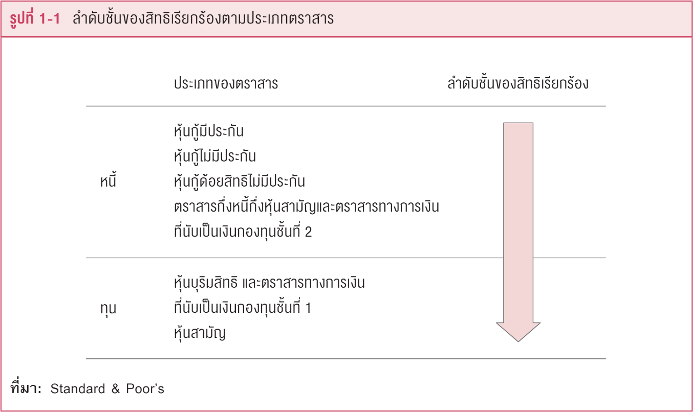
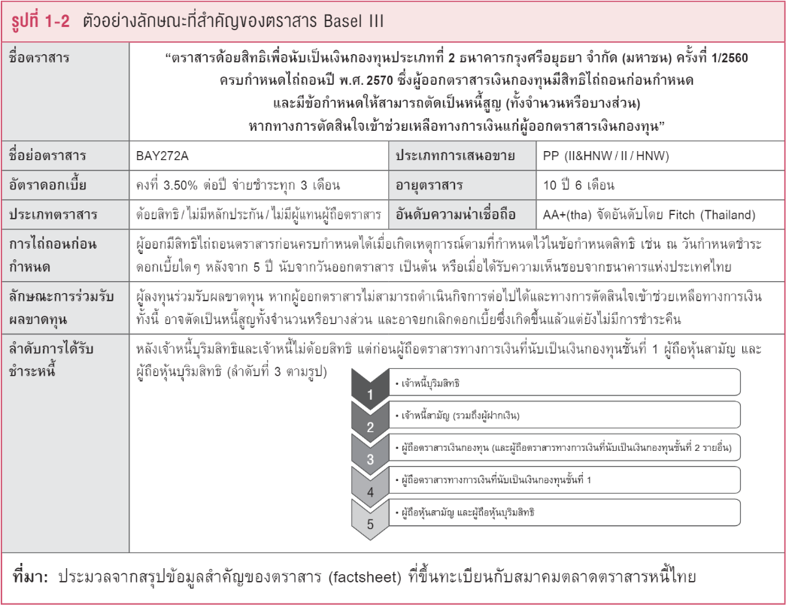

ตราสารหนี้ที่มีความเสี่ยงสูงและ/หรือมีความซับซ้อน
ภาพรวมลักษณะของตราสารหนี้ที่มีความเสี่ยงสูงและ/หรือมีความซับซ้อน
ตราสารหนี้ในตลาดการเงินในปัจจุบันมีหลากหลายประเภท ทั้งตราสารหนี้ที่มีลักษณะเป็นตราสารหนี้แท้ (pure debt securities) ตราสารหนี้ที่มีลักษณะคล้ายตราสารทุน (equity-like debt securities) และตราสารหนี้ที่มีอนุพันธ์แฝง (structured debt securities) ทำให้การวิเคราะห์ปัจจัยกำหนดอัตราผลตอบแทนและความเสี่ยงจากการลงทุนในตราสารเหล่านี้มีความซับซ้อนยิ่งขึ้น ประเด็นต่างๆ เหล่านี้ เป็นที่มาของความจำเป็นที่ผู้แนะนำการลงทุนจะต้องเข้าใจในลักษณะของตราสารหนี้ที่มีความเสี่ยงสูงและ/หรือมีความซับซ้อน และเข้าใจในปัจจัยกำหนดอัตราผลตอบแทนและความเสี่ยงของตราสารเหล่านี้เนื้อหาในบทนี้เริ่มด้วยลักษณะของตราสารหนี้ที่มีความเสี่ยงสูงและ/หรือมีความซับซ้อนโดยมุ่งประเด็นความแตกต่างจากตราสารหนี้ทั่วไปแล้วจึงทำความเข้าใจในประเภทต่างๆ ของตราสารหนี้ที่มีความเสี่ยงสูงและ/หรือมีความซับซ้อน
ลักษณะของตราสารหนี้ที่มีความเสี่ยงสูงและ/หรือมีความซับซ้อน
ตราสารหนี้ที่มีลักษณะเป็นตราสารหนี้แท้ โดยทั่วไปจะมีโครงสร้างของตราสารที่ชัดเจนเข้าใจง่ายกล่าวคือ มีการจ่าย เงินต้นและดอกเบี้ยที่แน่นอน ตลอดจนมีอายุตราสารที่ชัดเจน ซึ่งทำให้สามารถวิเคราะห์กระแสเงินสด อัตราผลตอบแทนและความเสี่ยงได้อย่างตรงไปตรงมา ขณะที่ตราสารหนี้ที่มีความเสี่ยงสูงและ/หรือมีความซับซ้อนมักจะมีลักษณะที่ยากต่อการทำความเข้าใจ ทำให้การวิเคราะห์อัตราผลตอบแทนและความเสี่ยงทำได้ยากและต้องใช้การพิจารณาอย่างรอบคอบ ทั้งนี้ ตราสารหนี้ที่มีความเสี่ยงสูงและ/หรือมีความซับซ้อน โดยทั่วไปจะมีลักษณะร่วมดังต่อไปนี้
(1) ลักษณะความซับซ้อนที่ยากต่อการทำความเข้าใจ เช่น
(ก) การจ่ายกระแสเงินสดไม่แน่นอน ผู้ออกตราสารมีสิทธิในการเลื่อนหรืองดการชำระหนี้ หรือมีสิทธิในการเลื่อนหรืองดการจ่ายดอกเบี้ยหรือผลตอบแทนตามที่ระบุไว้ในตราสาร
(ข) อายุของตราสารไม่แน่นอน เช่น ไม่ได้กำหนดอายุของตราสาร เป็นต้น
(ค) ลำดับสิทธิในการรับชำระหนี้คืน ด้อยกว่าผู้ถือตราสารหนี้ที่มีลักษณะเป็นตราสารหนี้แท้
ลักษณะเฉพาะของตราสารตามข้อ (ก) – (ค) ทำให้ตราสารหนี้ดังกล่าวมีลักษณะคล้ายคลึงกับตราสารทุน
(ง) มีอนุพันธ์แฝง\(\scriptsize ^1\) ทำให้โครงสร้างการจ่ายผลตอบแทน (payoff) มีความซับซ้อน โดยอัตราผลตอบแทนจะผันแปรไปตามปัจจัยอ้างอิง (underlying) ต่างๆ เช่น ราคาหุ้น ดัชนีราคา อัตราดอกเบี้ย อัตราแลกเปลี่ยนเงินตราต่างประเทศ ราคาสินค้าโภคภัณฑ์ ฯลฯ หรือผันแปรไปตามเงื่อนไขหรือสูตรทางคณิตศาสตร์ที่ซับซ้อน
(2) ลักษณะของความเสี่ยงที่สูงกว่าตราสารหนี้ที่มีลักษณะเป็นตราสารหนี้แท้ เช่น
(ก) ความเสี่ยงด้านราคา โดยราคาของตราสารหนี้ดังกล่าวอาจมีความผันผวนสูง เนื่องจากอายุของตราสารที่ยาวกว่า หรือไม่มีกำหนดอายุเมื่อเทียบกับตราสารหนี้ที่มีลักษณะเป็นตราสารหนี้แท้ หรือเนื่องจากมีอนุพันธ์แฝง เป็นต้น
(ข) ความเสี่ยงด้านการชำระหนี้คืน ผู้ออกตราสารอาจมีสิทธิในการเลื่อนหรืองดชำระดอกเบี้ย หรือเงินตันโดยไม่ถือเป็นการผิดนัดชำระหนี้ หรือมีลำดับสิทธิในการรับชำระหนี้คืนด้อยกว่าตราสารหนี้ที่มีลักษณะเป็นตราสารหนี้แท้ รวมทั้งจากการที่ตราสารหนี้มีอันดับความน่าเชื่อถืออยู่ในระดับต่ำกว่าระดับที่สามารถลงทุนได้ (non-investment grade) หรือไม่ถูกจัดอันดับความน่าเชื่อถือ (unrated)
(ค) ความเสี่ยงด้านสภาพคล่องของตราสาร เนื่องจากตราสารหนี้ดังกล่าวมีลักษณะค่อนข้างเฉพาะ จึงมีการซื้อขายในตลาดรองไม่มากนัก ดังนั้น หากผู้ลงทุนประสงค์จะขายตราสารดังกล่าวในระหว่างที่ลงทุน ก็อาจจำเป็นต้องยอมขายในราคาที่ต่ำกว่าราคาที่เหมาะสมเพื่อให้มีผู้รับซื้อตราสารดังกล่าว
ความแตกต่างระหว่างตราสารหนี้ที่มีความเสี่ยงสูงและ/หรือมีความซับซ้อนกับตราสารหนี้ทั่วไป
เนื่องจากความซับซ้อนของตราสารหนี้ มีที่มาจากหลายสาเหตุ เช่น การมีลักษณะคล้ายตราสารทุนการมีอนุพันธ์แฝง ตลอดจนการเป็นตราสารหนี้ที่มีความเสี่ยงสูง ดังนั้น เพื่อให้ผู้แนะนำการลงทุนเข้าใจในลักษณะความแตกต่างระหว่าง
ตราสารหนี้ที่มีความเสี่ยงสูงและ/หรือมีความซับซ้อนกับตราสารหนี้ทั่วไป เนื้อหาในส่วนนี้จึงประกอบ ด้วย (ก) ทบทวนลักษณะตราสารหนี้เปรียบเทียบกับตราสารทุน เพื่อนำไปสู่ความเข้าใจใน (ข) ลักษณะความ ซับซ้อนของตราสารหนี้อันเนื่องมาจากการคล้ายตราสารทุน (ค) ลักษณะของตราสารหนี้ทั่วไปกับตราสารหนี้ ที่มีอนุพันธ์แฝง และ (ง) ตราสารหนี้ที่มีความเสี่ยงสูง
(ก) ทบทวนลักษณะตราสารหนี้เปรียบเทียบกับตราสารทุน
ตราสารหนี้ (debt instruments) เป็นตราสารการเงินประเภทหนึ่ง โดยตราสารหนี้เป็นตราสารที่ผู้ถือตราสารมีสิทธิเรียกร้อง (ในฐานะเจ้าหนี้) ต่อกิจการผู้ออกตราสารหนี้ (ในฐานะลูกหนี้) ให้จ่ายดอกเบี้ยและจ่ายคืนเงินต้น ในจำนวนและในเวลาตามที่ตกลงกันไว้แล้ว
ทั้งนี้ ตราสารหนี้มีข้อกำหนดซึ่งเป็นข้อตกลงตามกฎหมาย ที่ระบุภาระผูกพันของผู้ออกตราสารหนี้ที่มีต่อผู้ถือตราสารหนี้ เช่น ชื่อผู้ออกตราสาร เงินตันหรือมูลค่าที่ตราไว้ วันครบกำหนดไถ่ถอน อัตราดอกเบี้ย งวดการจ่ายดอกเบี้ยหรือวันที่จ่ายดอกเบี้ย ลำดับชั้นของสิทธิเรียกร้องของผู้ถือตราสาร เป็นต้น โดยตราสารหนี้แต่ละประเภทที่กิจการแห่งใดแห่งหนึ่งออกมาเพื่อระดมเงินกู้ จะถูกระบุลำดับชั้นก่อนหลังของสิทธิเรียกร้องของผู้ถือตราสารหนี้แต่ละประเภท เช่น เป็นตราสารหนี้ไม่ด้อยสิทธิ (unsubordinated หรือ senior debt อันเป็นตราสารหนี้ที่ผู้ถือมีสิทธิเรียกร้องเหนือกว่าผู้ถือตราสารหนี้ประเภทอื่นๆ) หรือเป็นตราสารหนี้ด้อยสิทธิ (subordinated debt อันเป็นตราสารหนี้ที่ผู้ถือมีสิทธิเรียกร้องหลังเจ้าหนี้สามัญ ทั่วไป)
อย่างไรก็ตาม สิทธิเรียกร้องของผู้ถือตราสารหนี้ที่มีต่อผู้ออกตราสารหนี้ทั้งในประเด็นของลำดับชั้นของสิทธิเรียกร้อง และในประเด็นของการให้จ่ายดอกเบี้ยและจ่ายคืนเงินต้นนั้น สิทธิเรียกร้องดังกล่าวจะอยู่เหนือกว่าผู้ถือตราสารทุน (equity instruments) ซึ่งมีฐานะเป็นเจ้าของกิจการของบริษัทนั้นๆ กล่าวคือ ตราสารทุนซึ่งเป็นตราสารการเงินอีกประเภทหนึ่ง โดยผู้ถือตราสารทุนมีสิทธิเรียกร้อง (ในฐานะเจ้าของ) ต่อกำไรของกิจการผู้ออกตราสารทุน เฉพาะในกรณีที่กิจการจ่ายเงินปันผล และมีสิทธิเรียกร้องต่อ สินทรัพย์ของกิจการในกรณีเลิกกิจการ (liquidation) หรือล้มละลาย (bankruptcy) โดยสิทธิเรียกร้องของผู้ถือตราสารทุน เป็นสิทธิเรียกร้องหลังเจ้าหนี้ จึงมักเรียกสิทธิเรียกร้องของผู้ถือตราสารทุนว่า เป็นสิทธิเรียกร้องรายสุดท้าย หรือสิทธิเรียกร้องจากส่วนที่เหลือ (residual claims)
จะเห็นได้ว่า เมื่อเปรียบเทียบลักษณะหลักของตราสารหนี้ที่เป็นตราสารหนี้แท้ (pure debt) กับตราสารทุนที่เป็นตราสารทุนแท้ (pure equity) จะมีความแตกต่างโดยชัดเจนในประเด็นของ สิทธิเรียกร้องของผู้ถือตราสารต่อผู้ออกตราสาร ลำดับชั้นของสิทธิเรียกร้องของผู้ถือตราสาร กระแสเงินสดที่ผู้ถือจะได้รับรายงวด และอายุของตราสาร ดังนี้
(1) สิทธิเรียกร้องของผู้ถือตราสารต่อผู้ออกตราสาร ในกรณีที่บริษัทเลิกกิจการ (liquidation) หรือล้มละลาย (bankruptcy) ผู้รู้ถึงตราสารหนี้มีสิทธิเรียกร้องส่งบริษัทผู้ลงมาจากภาให้ข้าระหนี้สิน โดยสิทธินี้ "เหนือกว่า" ผู้ถือตราสารทุน
(2) ลำดับของสิทธิเรียกร้องของผู้ถือตราสาร ในกรณีตราสารหนี้ หากเป็นตราสารหนี้ไม่ด้อยสิทธิ (senior debt) จะมีสิทธิเรียกร้องเหนือกว่าผู้ถือตราสารหนี้ด้อยสิทธิ (subordinated debt) แต่ทั้งนี้ ผู้ถือตราสารหนี้มีสิทธิเรียกร้องเหนือกว่าผู้ถือตราสารทุน หรือที่กล่าวว่า ผู้ถือตราสารทุนมีสิทธิเรียกร้อง รายสุดท้ายจากส่วนที่เหลือ (residual claims)
(3) กระแสเงินสดที่ผู้ถือจะได้รับรายงวด ข้อกำหนดในตราสารหนี้แท้ (pure debt) การจ่ายดอกเบี้ย รายงวด (coupon bond) จะระบุจำนวนเงินดอกเบี้ยรายงวดที่อิงกับ coupon rate และงวดเวลากำหนดจ่าย ที่สม่ำเสมอ ซึ่งหากผู้ออกตราสารหนี้ผิดนัดชำระหนี้ ผู้ถือตราสารหนี้อาจฟ้องร้องให้บริษัทล้มละลายได้ ในขณะที่ตราสารทุนนั้น บริษัทผู้ออกตราสารทุนมิได้มีภาระผูกพันทางกฎหมายในการจ่ายกระแสเงินสด หรือเงินปันผลให้แก่ผู้ถือตราสารทุน การจ่ายหรือไม่จ่ายเงินปันผลเป็นไปตามมติของคณะกรรมการบริษัท
(4) วันครบกำหนดไถ่ถอน ข้อกำหนดในตราสารหนี้แท้ ได้ระบุอายุไถ่ถอนไว้แล้ว (fixed maturity) เมื่อถึงกำหนดวันไถ่ถอน ผู้ถือตราสารหนี้จะได้รับเงินต้นที่ให้กู้ไปคืนมา ในขณะที่ตราสารทุนไม่มีการ กำหนดวันไถ่ถอน หรือเป็นตราสารที่มีอายุแบบไม่มีที่สิ้นสุด (perpetual securities) ซึ่งหมายความว่า ผู้ถือตราสารทุนจะได้รับเงินส่วนของเจ้าของคืนเมื่อเลิกกิจการหากยังคงมีสินทรัพย์เหลืออยู่หลังจากชำระหนี้ ทุกชนิดแล้ว
ตารางต่อไปนี้ เปรียบเทียบลักษณะหลักๆ ของตราสารหนี้แท้กับตราสารทุนแท้ ในประเด็นต่างๆ ที่กล่าวข้างต้น
ตารางที่ 1-1 เปรียบเทียบลักษณะตราสารหนี้แท้กับตราสารทุนแท้

(ข) ตราสารหนี้ที่มีลักษณะคล้ายตราสารทุน
ในปัจจุบัน ตราสารหนี้หลายประเภท มิได้มีลักษณะเป็นตราสารหนี้แท้ แต่เป็นตราสารหนี้ที่มีลักษณะคล้ายตราสารทุน (equity-like debt) ทำให้การวิเคราะห์ปัจจัยกำหนดอัตราผลตอบแทนและความเสี่ยงจากการลงทุนในตราสารเหล่านี้มีความซับซ้อนยิ่งขึ้น นอกจากประเด็นพัฒนาการของตราสารหนี้ที่มีลักษณะคล้ายตราสารทุนแล้ว ยังมีตราสารหนี้ที่ระบุข้อตกลงและเงื่อนไขการจ่ายกระแสเงินสดในรูปดอกเบี้ยที่อาจผูกติดกับค่าของตัวแปรบางค่า ตลอดจนตราสารหนี้ซึ่งมีลักษณะของข้อตกลงและเงื่อนไขที่มีองค์ประกอบรวมกันระหว่างหุ้นกู้ที่เป็นการกู้ยืมเงินโดยทั่วไปกับสัญญาซื้อขายล่วงหน้า ประเด็นต่างๆ เหล่านี้ เป็นที่มาของความจำเป็นที่ผู้แนะนำการลงทุนจ
เนื้อหาในส่วนต่อไปนี้ เป็นการขยายความในประเด็น ตราสารหนี้ที่มีลักษณะคล้ายตราสารทุน (equity-like debt) เพื่อนำไปสู่การจำแนกประเภทของตราสารหนี้ที่มีความซับซ้อนต่อไป
ตามที่ได้กล่าวมาแล้วว่า ตราสารหนี้บางชนิดอาจมีลักษณะการด้อยสิทธิ ลักษณะการจ่ายดอกเบี้ยและลักษณะของวันครบกำหนดไถ่ถอน ที่มิได้กำหนดตามแบบลักษณะของตราสารหนี้แท้ แต่เป็นข้อกำหนดที่ให้สิทธิแก่ผู้ออกตราสารหนี้นั้นๆ ในแบบที่ใกล้เคียงกับลักษณะของตราสารทุนในระดับหนึ่ง ทั้งนี้ ผู้ลงทุนสามารถวิเคราะห์ตราสารหนี้ที่มีลักษณะดังกล่าว บนเส้นความต่อเนื่องของตราสารหนี้กับตราสารทุน (debt- equity continuum) ดังนี้
ตารางที่ 1-2 เส้นความต่อเนื่องของตราสารหนี้กับตราสารทุน (debt-equity continum)
ตัวอย่างของลักษณะที่ทำให้ตราสารหนี้บางชนิด มีลักษณะคล้ายตราสารทุน เช่น
(1) ลักษณะการด้อยสิทธิ (subordination) เป็นที่ทราบกันดีว่า เมื่อเปรียบเทียบระหว่างตราสารหนี้กับตราสารทุน ในบริษัทใดๆ ผู้ถือตราสารหนี้ของบริษัทนั้นมีสิทธิเรียกร้องต่อผู้ออกตราสารให้ชำระหนี้คืนเหนือกว่าผู้ถือตราสารทุนของบริษัทนั้น หรือที่กล่าวว่า ผู้ถือตราสารทุนมีสิทธิเรียกร้องเป็นรายสุดท้ายจากส่วนที่เหลือ (residual claims) แต่ในบรรดาตราสารหนี้นานาชนิดที่ออกโดยบริษัทใดๆ ก็ยังมีลำดับชั้นของสิทธิเรียกร้องต่อบริษัทนั้นๆ ซึ่งอาจจำแนกคร่าวๆ เป็นตราสารหนี้ไม่ด้อยสิทธิ (senior หรือ unsubordinated) และตราสารหนี้ด้อยสิทธิ (subordinated) โดยลักษณะการด้อยสิทธิของตราสารหนี้ก็มีลำดับชั้นของการด้อยลึกลงไปเรื่อยๆ (deeply subordinated) จนอาจมีลักษณะการด้อยสิทธิเกือบเท่า (แต่เหนือกว่า) ตราสารทุน
(2) ข้อกำหนดให้ผู้ออกตราสารหนี้อาจเลื่อนการจ่ายดอกเบี้ยไปได้ (deferability of interest payments) ในขณะที่ข้อกำหนดในตราสารหนี้แท้ (pure debt) การจ่ายดอกเบี้ยรายงวด (coupon bond) จะระบุจำนวนเงินดอกเบี้ยรายงวดที่อิงกับ coupon rate และงวดเวลากำหนดจ่ายสม่ำเสมอ ซึ่งในกรณีที่ผู้ออกตราสารหนี้ผิดนัดชำระหนี้ ผู้ถือตราสารหนี้อาจฟ้องร้องให้บริษัทล้มละลายได้ อย่างไรก็ตาม ตราสารหนี้บางชนิดมีข้อกำหนดให้สิทธิแก่ผู้ออกตราสารหนี้ อาจเลื่อนการจ่ายดอกเบี้ยออกไปได้ภายใต้สถานการณ์ที่ระบุ (เช่น ในสถานการณ์ที่บริษัทอยู่ในภาวะกดดันทางการเงิน หรือ financial distress) ส่งผลให้งวดเวลาจ่ายดอกเบี้ยมิได้สม่ำเสมอตามที่ระบุไว้ในเบื้องต้น
ทั้งนี้ ข้อกำหนดในตราสารหนี้ที่ให้สิทธิแก่ผู้ออกตราสารหนี้เลื่อนการจ่ายดอกเบี้ยออกไปได้นั้น อาจเป็นข้อกำหนดให้ผู้ออกตราสารหนี้จ่ายดอกเบี้ยสะสมกรณีที่เลื่อนการจ่าย (cumulative of interest payments) ในกรณีเช่นนี้
ผู้ออกตราสารหนี้มีภาระต้องจ่ายดอกเบี้ยค้างจ่ายให้แก่ผู้ถือตราสารหนี้ แต่ถ้าไม่มีข้อกำหนดเรื่องการสะสม หมายความว่า เมื่อมีการเลื่อนการจ่ายดอกเบี้ยในงวดใด เท่ากับเป็นการงดจ่ายดอกเบี้ยในงวดนั้นไปเลย
(3) วันครบกำหนดไถ่ถอน (maturity date) ในขณะที่ข้อกำหนดในตราสารหนี้แท้ได้ระบุอายุไถ่ถอนไว้แล้ว (fixed maturity) เมื่อถึงกำหนดวันไถ่ถอน ผู้ถือตราสารหนี้จะได้รับเงินต้นที่ให้กู้ไปคืนมา แต่ตราสารหนี้ที่มีลักษณะคล้ายตราสารทุน อาจมิได้กำหนดวันไถ่ถอนเอาไว้ ซึ่งหมายความว่า บริษัทผู้กู้จะชำระคืนเงินกู้เมื่อบริษัทเลิกกิจการ ในกรณีที่มิได้กำหนดวันไถ่ถอนตราสารหนี้เอาไว้ จึงถือว่าเป็นตราสารหนี้ที่มีอายุแบบไม่มีที่สิ้นสุด (perpetual debt securities)
ตารางต่อไปนี้ แสดงลักษณะที่ต่อเนื่องระหว่างตราสารหนี้กับตราสารทุน debt-equity continuum โดยได้สรุปการจำแนกลักษณะหลักของตราสารตามที่ได้กล่าวแล้วในตารางที่ 1-3 ทั้งนี้จำนวนและเนื้อหาในแนวตั้ง (column) ตามตารางข้างล่าง เป็นการยกตัวอย่างลักษณะแต่ละลักษณะที่อาจเป็นไปได้ ในขณะที่ในตลาดตราสารหนี้ อาจมีลักษณะตราสารหนี้ที่มีลักษณะคล้ายตราสารทุนที่หลากหลายกว่าที่ระบุในตารางนี้
ตารางที่ 1-3 แสดงลักษณะที่ต่อเนื่องระหว่างตราสารหนี้กับตราสารทุน
การที่ตราสารหนี้มีลักษณะต่างๆ เข้าใกล้ลักษณะของตราสารทุน ส่งผลให้การทำความเข้าใจและวิเคราะห์อัตราผลตอบแทนและความเสี่ยงของตราสารเหล่านี้มีความซับซ้อนกว่าการวิเคราะห์ตราสารหนี้แท้อันเป็นที่มาของการจำแนกประเภทของตราสารหนี้ที่มีความซับซ้อนกลุ่มหนึ่ง โดยเป็นความซับซ้อนอันเกิดจากการเป็นตราสารหนี้ที่มีลักษณะคล้ายตราสารทุน (equity-like debt)
ตามตารางแสดงลักษณะที่ต่อเนื่องระหว่างตราสารหนี้กับตราสารทุนหรือ debt-equity continuum ผู้ลงทุนสามารถระบุประเภทของตราสารหนี้ที่มีความซับซ้อนได้ ดังนี้
- ตราสารหนี้ที่ผู้ถือตราสารด้อยสิทธิการได้รับชำระคืนกว่าเจ้าหนี้สามัญทั่วไป รวมทั้งตราสารด้อยสิทธิเพื่อนับเป็นเงินกองทุนของธนาคารพาณิชย์ (ตราสาร Basel III)
- ตราสารหนี้ที่ผู้ออกตราสาร มีสิทธิเลื่อนการจ่ายดอกเบี้ย แต่สะสมดอกเบี้ยจ่ายไว้จ่ายในงวดที่มีการจ่ายดอกเบี้ย
- ตราสารหนี้ที่ผู้ออกตราสาร มีสิทธิงดการจ่ายดอกเบี้ย (ไม่สะสม)
- ตราสารหนี้ที่ไม่กำหนดวันไถ่ถอน
อย่างไรก็ตาม ยังมีที่มาของการจำแนกประเภทตราสารหนี้ที่มีความซับซ้อนกลุ่มอื่นๆ อีก ได้แก่ ความซับซ้อนอันเกิดจากการที่ตราสารหนี้นั้นๆ มีผลตอบแทนขึ้นอยู่กับสินทรัพย์อ้างอิง (underlying asset) ที่กำหนดไว้ หรือตราสารหนี้ที่มีอนุพันธ์แฝง อันเป็นเนื้อหาในหัวข้อถัดไป
(ค) ลักษณะของตราสารหนี้ที่มีอนุพันธ์แฝง\(\scriptsize ^2\)
แนวทางหนึ่งในการทำความเข้าใจลักษณะของตราสารหนี้ที่มีอนุพันธ์แฝง ได้แก่การเปรียบเทียบการกำหนดจ่ายผลตอบแทนของตราสารหนี้ทั่วไปกับตราสารหนี้ที่มีอนุพันธ์แฝง ตลอดจนการเปรียบเทียบข้อกำหนดเรื่องมูลค่าไถ่ถอนและกำหนดเวลาไถ่ถอนของตราสารหนี้ทั่วไปกับตราสารหนี้ที่มีอนุพันธ์แฝง
การกำหนดการจ่ายผลตอบแทนในตราสารหนี้ทั่วไป เทียบกับการกำหนดการจ่ายผลตอบแทนในตราสารหนี้ที่มีอนุพันธ์แฝง
การกำหนดการจ่ายผลตอบแทนในตราสารหนี้ทั่วไปผลตอบแทนจากการลงทุนในตราสารหนี้ทั่วไป ชนิดตราดอกเบี้ยรายงวด (coupon bond) ประกอบด้วย
(1) ผลตอบแทนดอกเบี้ยจากคูปอง เป็นผลตอบแทนที่ผู้ออกตราสารหนี้สัญญาว่าจะจ่ายให้แก่ผู้ถือตราสารหนี้ตามอัตราที่ระบุไว้หน้าตั๋ว (coupon) และตามระยะเวลาที่กำหนดไว้ ดังนั้น ผู้ถือตราสารหนี้จะได้รับรายได้ในส่วนนี้ในอัตราที่ระบุไว้ ด้วยความสม่ำเสมอตลอดช่วงอายุของตราสารหนี้ และเมื่อตราสารหนี้ครบกำหนดชำระคืน ผู้ลงทุนก็จะได้รับเงินคืนจากการลงทุนเท่ากับมูลค่าหน้าตั๋วของตราสารหนี้ (face value)
ทั้งนี้ อัตราดอกเบี้ยจากคูปองในตราสารหนี้ทั่วไป อาจกำหนดการจ่ายเป็นแบบต่างๆ เช่น จ่าย ดอกเบี้ยคงที่ (fixed coupon) จ่ายดอกเบี้ยเพิ่มเป็นขั้น (step-up bond) หรือหุ้นกู้จ่ายดอกเบี้ยแบบลอยตัว (floating rate bond) ซึ่งขึ้นลงตามอัตราดอกเบี้ยของสถาบันการเงินหรืออัตราดอกเบี้ยอื่นที่กำหนดไว้แล้ว
(2) ผลต่างระหว่างราคาซื้อและราคาไถ่ถอนตราสารหนี้ (กรณีที่ผู้ลงทุนถือตราสารหนี้จนถึงวันครบกำหนดไถ่ถอน) หรือหรือผลต่างระหว่างราคาซื้อและราคาขายตราสารหนี้ (กรณีที่ผู้ลงทุนขายตราสารหนี้ ก่อนวันครบกำหนดไถ่ถอน)
(หมายเหตุ: ในที่นี้มุ่งอธิบายถึงผลตอบแทนที่ผู้ลงทุนได้รับจากผู้ออกตราสารหนี้โดยตรง จึงมิได้กล่าวถึงผลตอบแทนจากการนำดอกเบี้ยรายงวดไปลงทุนต่อ)
การกำหนดการจ่ายผลตอบแทนในตราสารหนี้ที่มีอนุพันธ์แฝงตราสารหนี้ที่มีอนุพันธ์แฝง (structured debt securities) เป็นตราสารหนี้ซึ่งระบุการจ่ายผลตอบแทนและหรือการชำระคืนเงินต้น ให้มีทั้งส่วนที่เป็นผลตอบแทนของตราสารหนี้ทั่วไปและผลตอบแทนส่วนเพิ่มจากการมีอนุพันธ์แฝง ซึ่งแปรตามราคาของปัจจัยอ้างอิง (underlying) ที่กำหนดไว้ นั่นคือ ลักษณะของตราสารหนี้ชนิดนี้มีทั้งลักษณะของข้อตกลงและเงื่อนไขของตราสารหนี้ที่เป็นตราสารกู้ยืมเงินโดยทั่วไปกับสัญญาซื้อขายล่วงหน้า
ทั้งนี้ ปัจจัยอ้างอิงที่เป็นตัวแปรซึ่งผูกกับสัญญาซื้อขายล่วงหน้า อาจเป็น ราคา หรือดัชนี อย่างใดอย่างหนึ่งหรือหลายอย่างประกอบกัน โดยจะเรียกชื่อตราสารหนี้ที่มีอนุพันธ์แฝงตามประเภทของปัจจัยอ้างอิงเหล่านี้ เช่น ตราสารหนี้ที่มีอนุพันธ์แฝงซึ่งปัจจัยอ้างอิงคือ
- ราคาหลักทรัพย์ กลุ่มหลักทรัพย์ ดัชนีกลุ่มหลักทรัพย์ เรียกว่า equity-linked notes
- อัตราดอกเบี้ย เรียกว่า interest rate-linked notes
- อัตราแลกเปลี่ยนเงินตราต่างประเทศ เรียกว่า foreign exchange-linked notes
- ราคาสินค้าโภคภัณฑ์ เรียกว่า commodity-linked notes
มูลค่าไถ่ถอนและกำหนดเวลาไถ่ถอนของตราสารหนี้ทั่วไป
เมื่อถึงเวลาไถ่ถอนตราสารหนี้ ผู้ออกตราสารหนี้จะจ่ายเงินคืนให้แก่ผู้ถือตราสารหนี้ตามมูลค่าไถ่ถอนที่กำหนดไว้แล้ว เช่น ตราสารหนี้ชนิดหนึ่ง มีมูลค่าหน้าตั๋วเท่ากับ 1,000 บาท เมื่อถึงเวลาไถ่ถอนตราสารหนี้นี้ บริษัทผู้ออกตราสารหนี้ จะจ่ายเงินจำนวน 1,000 บาทต่อฉบับ ให้แก่ผู้ถือตราสารหนี้ เป็นการไถ่ถอนตราสารหนี้ โดยกำหนดเวลาไถ่ถอนได้ระบุไว้แล้วว่าเป็นวันใด
ข้อสังเกตในเรื่องมูลค่าไถ่ถอนและกำหนดเวลาไถ่ถอนตราสารหนี้ข้อสังเกตที่ 1 ในตราสารหนี้ชนิดทั่วไปได้กำหนดมูลค่าไถ่ถอน และกำหนดวันไถ่ถอน (maturity date) ไว้แล้ว อย่างไรก็ตาม อาจมีตราสารหนี้ที่กำหนดให้สิทธิแก่ผู้ออกตราสารหนี้ บังคับไถ่ถอนตราสารหนี้ได้ก่อน maturity date (มักเรียกตราสารหนี้ชนิดนี้ว่า callable bond) และอาจมีตราสารหนี้ที่ผู้ถือตราสารหนี้มีสิทธิเรียกให้ผู้ออกชำระหนี้คืนก่อนกำหนด (มักเรียกตราสารหนี้ชนิดนี้ว่า puttable bond) โดยมูลค่าที่ผู้ถือจะได้รับคืนจากการไถ่ถอนก่อนกำหนด ได้กำหนดไว้แล้ว ดังนั้น แม้ว่าสิทธิในการเรียกไถ่ถอนคืน (call) ของผู้ออกตราสารหนี้ และสิทธิของผู้ถือในการขายตราสารหนี้คืน (put) แก่ผู้ออก จะเป็นสิทธิ (option) แฝงอยู่ในตราสารหนี้นั้นๆ แต่เงื่อนไขการไถ่ถอนคืนมิได้ซับซ้อน ในที่นี้จึงถือว่า callable bond และ puttable bond เป็นตราสารหนี้ทั่วๆ ไป มิได้นับว่าเป็นตราสารหนี้ที่มีความซับซ้อน
ข้อสังเกตที่ 2 ในตราสารหนี้ที่ให้สิทธิแก่ผู้ถือในการแปลงสภาพตราสารหนี้เป็นหุ้นทุนของบริษัทผู้ออกตราสารหนี้นั้นๆ หรือที่เรียกว่า convertible bond โดยการกำหนดมูลค่าผลตอบแทนก่อนการใช้สิทธิในการแปลงสภาพไว้อย่างแน่นอนหรือเป็นอัตราที่ผันแปรตามอัตราดอกเบี้ยของสถาบันการเงินหรืออัตราดอกเบี้ยอื่น และไม่มีการกำหนดเงื่อนไขการจ่ายผลตอบแทนที่อ้างอิงกับปัจจัยอ้างอิงอื่นเพิ่มเติมรวมทั้งกำหนดราคาแปลงสภาพโดยไม่ผูกอยู่กับปัจจัยอ้างอิงอื่น กรณีเช่นนี้ มิได้นับว่า ตราสารหนี้แปลงสภาพ (convertible bond) เป็นตราสารหนี้ที่มีความซับซ้อน
(ง) ตราสารหนี้ที่มีความเสี่ยงสูง
เป็นที่ทราบกันแล้วว่า ความเสี่ยงจากการลงทุนหมายถึง การที่ผู้ลงทุนได้รับผลตอบแทนที่ประจักษ์จากการลงทุน เบี่ยงเบนไปจากผลตอบแทนที่คาดหวังไว้ว่าจะได้รับเมื่อแรกเริ่มลงทุน โดยการจำแนกประเภทความเสี่ยงจากการลงทุนในหลักทรัพย์เดี่ยว อาจมีวิธีจำแนกได้หลายแนวคิด แนวคิดหนึ่ง ได้แก่ การจำแนกบนพื้นฐานของกิจการผู้ออกหลักทรัพย์ เป็นความเสี่ยงทางธุรกิจและความเสี่ยงทางการเงิน ต่อจากนั้นจึงเพิ่มเติมประเภทของความเสี่ยงจากการลงทุนด้วยสาเหตุอื่นๆ ในสภาพแวดล้อมของการลงทุนในหลักทรัพย์ซึ่งในที่นี้ได้แก่ การลงทุนในตราสารหนี้ความเสี่ยงที่ผู้ลงทุนในตราสารหนี้ต้องเผชิญ ได้แก่ ความเสี่ยงด้านเครดิต (credit risk) นอกจากนั้น ยังมีความเสี่ยงจากการขาดสภาพคล่อง (liquidity risk) ความเสี่ยงจากการเปลี่ยนแปลงของอัตราดอกเบี้ยในตลาดการเงิน (interest rate risk) และความเสี่ยงจากอัตราเงินเฟ้อ (inflation risk) โดยในที่นี้จะขออธิบาย ความเสี่ยงด้านเครดิต (credit risk) ให้ชัดเจนเพื่อให้ผู้อ่านมีความเข้าใจยิ่งขึ้น
ความเสี่ยงด้านเครดิต เป็นความเสี่ยงที่ผู้ลงทุนในตราสารหนี้ต้องเผชิญ อันเนื่องมาจากกิจการผู้ออกตราสารหนี้ไม่สามารถจ่ายดอกเบี้ยและจ่ายคืนเงินกู้ตามภาระผูกพันได้ ความเสี่ยงด้านเครดิตอาจเรียกอีกชื่อว่า ความเสี่ยงจากการผิดนัดชำระหนี้ (default risk) ผู้ลงทุนในหุ้นกู้ของบริษัท อาจใช้อันดับเครดิตของหุ้นกู้ (bond rating) เป็นแนวทางในการวิเคราะห์ความน่าจะเป็นที่ผู้ออกหุ้นกู้จะผิดนัดชำระหนี้ หุ้นกู้ที่ได้รับการจัดอันดับดี มีโอกาสน้อยที่จะผิดนัดชำระ ดังนั้นจึงเสนออัตราผลตอบแทนที่ไม่สูงนักเมื่อเทียบกับหุ้นกู้ที่ได้รับการจัดอันดับเครดิตต่ำๆ ซึ่งหากผู้ลงทุนประสงค์จะลงทุนในหุ้นกู้ที่มีอันดับเครดิตต่ำย่อมต้องการอัตราผลตอบแทนที่สูงขึ้น เพื่อชดเชยความเสี่ยงที่สูงขึ้น ทั้งนี้ ตราสารหนี้ที่ได้รับการจัดอันดับความน่าเชื่อถือต่ำกว่าระดับที่สามารถลงทุนได้ (non-investment grade bond) หรือตราสารหนี้ที่ไม่ได้รับการจัดอันดับความน่าเชื่อถือ (unrated bond) ซึ่งผู้ออกตราสารอาจมีความเสี่ยงจากการผิดนัดชำระหนี้สูงนับเป็นตราสารหนี้ประเภทหนึ่งใน "ตราสารหนี้ที่มีความเสี่ยงสูงและ/หรือมีความซับซ้อน"
สรุปประเภทของตราสารหนี้ที่มีความเสี่ยงสูงและ/หรือมีความซับซ้อน
จากที่กล่าวมาข้างต้น สามารถจำแนกประเภทของตราสารหนี้ที่มีความเสี่ยงสูงและ/หรือมีความซับซ้อนออกเป็นกลุ่มต่างๆ ดังต่อไปนี้
กลุ่มที่ 1 ความซับซ้อนอันเกิดจากการเป็นตราสารหนี้ที่มีลักษณะคล้ายตราสารทุน (equity-like debt) จำแนกได้เป็นตราสารหนี้ที่มีความซับซ้อน ดังนี้
- ตราสารหนี้ที่ผู้ถือตราสารด้อยสิทธิการได้รับชำระคืนกว่าเจ้าหนี้สามัญทั่วไป รวมทั้งตราสารด้อยสิทธิเพื่อนับเป็นเงินกองทุนของธนาคารพาณิชย์ (ตราสาร Basel III)
- ตราสารหนี้ที่ผู้ออกตราสาร มีสิทธิเลื่อนการจ่ายดอกเบี้ย แต่สะสมดอกเบี้ยจ่ายในงวดที่มีการจ่ายดอกเบี้ย
- ตราสารหนี้ที่ผู้ออกตราสาร มีสิทธิงดการจ่ายดอกเบี้ย (ไม่สะสม)
- ตราสารหนี้ที่ไม่กำหนดวันไถ่ถอน
กลุ่มที่ 2 ความซับซ้อนอันเกิดจากการเป็นตราสารหนี้ที่มีอนุพันธ์แฝง (structured debt securities)
กลุ่มที่ 3 ตราสารหนี้ที่มีความเสี่ยงสูง
ตราสารหนี้ที่ได้รับการจัดอันดับความน่าเชื่อถือต่ำกว่าอันดับที่สามารถลงทุนได้ (non-investment grade bond) และตราสารหนี้ที่ไม่ได้รับการจัดอันดับความน่าเชื่อถือ (unrated bond) ที่ผู้ออกตราสารอาจมีความเสี่ยงจากการผิดนัดชำระหนี้สูง ตราสารหนี้เหล่านี้ มีโอกาสสูงที่บริษัทผู้ออกอาจไม่สามารถปฏิบัติตามข้อกำหนดในตราสารหนี้
ตราสารหนี้ที่ความซับซ้อนเกิดจากการมีลักษณะคล้ายตราสารทุน (ตราสารกึ่งหนี้กึ่งหุ้นสามัญ (Hybrid Securities))
ลักษณะพื้นฐานของตราสารหนี้ที่ความซับซ้อนเกิดจากการมีลักษณะคล้ายตราสารทุน
ตราสารหนี้ที่ความซับซ้อนเกิดจากการมีลักษณะคล้ายตราสารทุน หรือตราสารกึ่งหนี้กึ่งหุ้นสามัญ (Hybrid Securities) เป็นตราสารทางการเงินที่จัดอยู่ในประเภทของตราสารหนี้ (Fixed-Income Securities) ซึ่งมีลักษณะบางประการของทั้งตราสารหนี้ (debt) และตราสารทุน (equity) ร่วมกันอยู่ในตัวตราสารเดียวโดยเมื่อเปรียบเทียบลักษณะของตราสารกึ่งหนี้กึ่งหุ้นสามัญกับตราสารหนี้และตราสารทุนทั่วไปแล้ว ตราสารกึ่งหนี้กึ่งหุ้นสามัญจะมีลักษณะที่ทั้งเหมือนและแตกต่างจากตราสารทั้งสองประเภทในหลายประการ โดยลักษณะที่สำคัญประการแรกของตราสารกึ่งหนี้กึ่งหุ้นสามัญคือ ลำดับชั้นของสิทธิเรียกร้องเพื่อขอรับการชำระหนี้ของตราสารประเภทนี้จะมีลักษณะเป็นตราสารหนี้ด้อยสิทธิ (subordinated bond) กว่าเจ้าหนี้บุริมสิทธิและเจ้าหนี้สามัญโดยทั่วไป
นอกจากนี้ เมื่อพิจารณาถึงลักษณะของการจ่ายดอกเบี้ย ตราสารกึ่งหนี้กึ่งหุ้นสามัญมักจะมีลักษณะการจ่ายดอกเบี้ยคล้ายกับตราสารหนี้ปกติ กล่าวคือ อาจมีการกำหนดการจ่ายดอกเบี้ยได้ทั้งแบบคงที่ (fixed rate coupon) หรือแบบลอยตัว (floating rate coupon) หรือทั้ง 2 แบบอยู่ในตราสารเดียวก็ได้ อย่างไรก็ดี ผู้ออกตราสารประเภทนี้อาจจะมีข้อกำหนดสิทธิที่จะเลื่อนกำหนดเวลาการจ่ายดอกเบี้ยหรือไม่จ่ายดอกเบี้ยให้แก่ผู้ถือตราสารได้ในบางกรณีหรือบางเหตุการณ์ ซึ่งเงื่อนไขและเหตุการณ์ที่ผู้ออกตราสารจะเลื่อนการจ่ายดอกเบี้ยหรือไม่จ่ายดอกเบี้ยจะมีการระบุไว้อย่างชัดเจนในหนังสือชี้ชวนซึ่งผู้ลงทุนควรศึกษาและทำความเข้าใจเกี่ยวกับเงื่อนไขและเหตุการณ์เหล่านี้อย่างถ่องแท้ก่อนตัดสินใจลงทุน
โดยทั่วไป อายุของตราสารกึ่งหนี้กึ่งหุ้นสามัญมักจะยาวกว่าตราสารหนี้หรือหุ้นกู้ปกติ หรืออาจเป็นตราสารที่ไม่มีการกำหนดอายุไถ่ถอนหรือจะมีการไถ่ถอนเมื่อเลิกกิจการ (perpetual debt securities) อย่างไรก็ตาม ผู้ออกตราสารประเภทนี้อาจมีการกำหนดสิทธิหรือเงื่อนไขที่จะซื้อคืนหรือไถ่ถอนตราสารคืนจากผู้ถือก่อนครบกำหนดไถ่ถอน หรือในบางกรณีตราสารประเภทนี้ก็อาจมีการกำหนดสิทธิให้ผู้ออกตราสารสามารถบังคับการแปลงสภาพตราสารให้กลายเป็นหุ้นสามัญ (convert to equity) เมื่อบริษัทผู้ออกตราสารประสบปัญหาด้านฐานะการเงิน เป็นต้น
โดยปกติแล้ว ตราสารกึ่งหนี้กึ่งหุ้นสามัญนี้มักมีการจ่ายผลตอบแทนให้กับผู้ถือในอัตราที่สูงกว่าตราสารหนี้ปกติ เพื่อเป็นการชดเชยความเสี่ยงของตัวตราสารประเภทนี้ที่สูงกว่าตราสารหนี้โดยปกติทั่วไปไม่ว่าจะเป็นความเสี่ยงจากลำดับชั้นของสิทธิเรียกร้องที่ถูกจัดเป็นตราสารหนี้ด้อยสิทธิซึ่งอยู่ในฐานะที่ด้อยกว่าตราสารนี้ปกติ เงื่อนไขที่อนุญาตให้ผู้ออกตราสารเลื่อนกำหนดเวลาการจ่ายดอกเบี้ยหรือไม่ต้องจ่ายดอกเบี้ยให้กับผู้ถือได้ในบางกรณี หรือเป็นผลที่มาจากความเสี่ยงของสิทธิแฝงที่ผูกอยู่กับตัวตราสารกึ่งหนี้กึ่งหุ้นสามัญบางประเภท เช่น สิทธิที่ผู้ออกตราสารสามารถขอไถ่ถอนหรือซื้อคืนตราสารได้ก่อนครบกำหนดไถ่ถอน เป็นต้น
จากลักษณะของตราสารกึ่งหนี้กึ่งหุ้นสามัญตามที่ได้กล่าวมาข้างต้น จะเห็นได้ว่าตราสารประเภทนี้เป็นตราสารที่มีความน่าสนใจสำหรับทั้งผู้ลงทุน (investor) และผู้ออกตราสารเพื่อการระดมทุน (issuer) โดยจากมุมมองของผู้ลงทุน ประโยชน์ที่เห็นได้เด่นชัดจากการลงทุนในตราสารกึ่งหนี้กึ่งหุ้นสามัญ คือ อัตราผลตอบแทนที่สูงกว่าเมื่อเปรียบเทียบกับการลงทุนในตราสารหนี้ปกติที่มีอายุเท่ากันและมีอันดับความน่าเชื่อถือ (credit rating) ในระดับเดียวกันหรือใกล้เคียงกัน โดยอัตราผลตอบแทนดังกล่าวจะถูกกำหนดไว้อย่างชัดเจนและไม่ผันแปรตามผลประกอบการของบริษัทผู้ออกตราสาร ดังเช่นผลตอบแทนจากการลงทุนในหุ้นสามัญ ทำให้ผู้ลงทุนสามารถคาดการณ์กระแสเงินสดหรือผลตอบแทนที่จะได้รับตลอดระยะเวลาการถือครองตราสารได้อย่างค่อนข้างแน่นอน อย่างไรก็ตาม ตราสารกึ่งหนี้กึ่งหุ้นสามัญบางประเภทอาจมีข้อกำหนดหรือเงื่อนไขเพิ่มเติมในเรื่องของเงื่อนไขการจ่ายดอกเบี้ยตามที่ได้กล่าวมาข้างต้น เช่น ผู้ออกตราสารสามารถเลื่อนการชำระดอกเบี้ยออกไปได้ (deferability) หากบริษัทผู้ออกตราสารตกอยู่ในสถานะที่ไม่สามารถจ่ายดอกเบี้ยได้ โดยไม่ถือว่าเป็นการผิดนัดชำระหนี้ (default) อย่างไรก็ตาม ในกรณีดังกล่าว บริษัทผู้ออกตราสารก็ไม่สามารถจ่ายเงินปันผล (dividend) ให้แก่ผู้ถือหุ้นสามัญได้เช่นกัน
สำหรับประโยชน์ต่อบริษัทผู้ออกตราสารกึ่งหนี้กึ่งหุ้นสามัญนั้น นอกจากวัตถุประสงค์หลักของการออกตราสารเพื่อการระดมทุนแล้ว ด้วยลักษณะและข้อกำหนดสิทธิของตัวตราสารที่เกี่ยวกับเงื่อนไข การจ่ายชำระดอกเบี้ยซึ่งเป็นประโยชน์ต่อบริษัทผู้ออกตราสาร ไม่ว่าจะเป็นเงื่อนไขที่อนุญาตให้ผู้ออกตราสารเลือกที่จะไม่ชำระดอกเบี้ยให้แก่ผู้ถือตราสารหากเป็นไปตามเงื่อนไขที่กำหนดไว้โดยไม่ถือว่าเป็นการผิดนัดชำระหนี้ อันจะช่วยลดภาระทางการเงินของบริษัทผู้ออกตราสารได้ในระดับหนึ่ง หากสถานการณ์ทางการเงินของบริษัทไม่เอื้ออำนวย รวมถึงเป็นการเพิ่มความยืดหยุ่นในการบริหารหรือจัดสรรกระแสเงินสดของบริษัทผู้ออกตราสารด้วย (financial flexibility) หรือในกรณีตราสารกึ่งหนี้กึ่งหุ้นสามัญที่ให้สิทธิแก่ผู้ออกตราสารในการไถ่ถอนคืนได้ก่อนครบกำหนดอายุ ซึ่งผู้ออกตราสารสามารถใช้สิทธิดังกล่าวได้ในภาวการณ์ที่เป็นประโยชน์ต่อบริษัทผู้ออกตราสาร นอกจากข้อดีที่ได้กล่าวมาข้างต้นแล้ว ผู้ออกตราสารประเภทนี้ยังจะได้ประโยชน์ในด้านการลดภาระภาษี (tax-shield benefit) เมื่อเปรียบเทียบกับการระดมทุนด้วยการออกหุ้นสามัญ กล่าวคือ เนื่องจากตราสารกึ่งหนี้กึ่งหุ้นสามัญจัดเป็นตราสารหนี้ ในทางบัญชีจึงสามารถนับดอกเบี้ยที่จ่ายให้แก่ผู้ถือตราสารเป็นรายการดอกเบี้ยจ่าย (interest expense) ได้ ซึ่งดอกเบี้ยจ่ายนี้จะถูกหักออกจากรายได้ก่อนคำนวณภาษี ส่งผลให้ภาระภาษีที่บริษัทผู้ออกตราสารต้องนำจ่ายลดลงซึ่งเมื่อเปรียบเทียบกับเงินปันผลที่บริษัทจ่ายให้กับผู้ถือหุ้นสามัญแล้ว เงินปันผลดังกล่าวไม่ถือว่าเป็นรายจ่ายที่สามารถนำมาคิดเป็นรายจ่ายเพื่อการคำนวณภาษีของบริษัทผู้ออกตราสารได้
เนื่องจากตราสารกึ่งหนี้กึ่งหุ้นสามัญมีลักษณะของการผสมผสานระหว่างตราสารหนี้และตราสารทุนในทางบัญชี จึงสามารถนับบางส่วนของตราสารประเภทนี้เป็นส่วนของทุนได้ ซึ่งนับเป็นประโยชน์ที่สำคัญอีกประการหนึ่งต่อบริษัทผู้ออกตราสารจากการที่บริษัทผู้ออกตราสารสามารถนับบางส่วนของตราสารให้อยู่ในส่วนของทุนได้ เพราะบริษัทผู้ออกตราสารมีส่วนของทุนเพิ่มขึ้น ซึ่งส่งผลให้อัตราส่วนทางการเงิน (financial ratios) บางประเภทของผู้ออกตราสารดีขึ้น เช่น อัตราส่วนหนี้สินต่อทุน (debt-to-equity ratio) จะต่ำกว่าเมื่อเทียบกับการออกตราสารหนี้ทั่วไปในมูลค่าที่เท่ากัน เป็นต้น ซึ่งปัจจัยเหล่านี้เป็นปัจจัยที่บริษัทจัดอันดับความน่าเชื่อถือ (credit rating agency) นำมาใช้จัดอันดับความน่าเชื่อถือของบริษัทผู้ออกตราสารด้วย
สำหรับเนื้อหาในส่วนนี้ จะกล่าวถึงตราสารกึ่งหนี้กึ่งหุ้นสามัญที่สำคัญ 4 ประเภท อันได้แก่ 1) ตราสารหนี้ที่ผู้ถือตราสารด้อยสิทธิในการได้รับชำระคืนกว่าเจ้าหนี้สามัญทั่วไป 2) ตราสาร Basel III 3) ตราสารหนี้ที่ครบกำหนดไถ่ถอนเมื่อมีการเลิกบริษัท 4) ตราสารหนี้ที่ผู้ออกตราสารมีสิทธิเลื่อนการจ่ายดอกเบี้ย ซึ่งมีรายละเอียดที่สำคัญของตราสารแต่ละประเภทดังต่อไปนี้
ตราสารหนี้ที่ผู้ถือตราสารด้อยสิทธิในการได้รับชำระคืนกว่าเจ้าหนี้สามัญทั่วไป
1) ลักษณะพื้นฐานของตราสาร
ตราสารหนี้ที่ผู้ถือตราสารด้อยสิทธิในการได้รับชำระคืนกว่าเจ้าหนี้สามัญทั่วไปเป็นตราสารหนี้ที่มี ลำดับชั้นของสิทธิเรียกร้องเพื่อขอรับการชำระหนี้ที่ด้อยสิทธิกว่าเจ้าหนี้สามัญโดยทั่วไป (subordinated bond) โดยสิทธิการเรียกร้องของตราสารประเภทนี้จะถูกจัดอยู่ในลำดับท้ายสุดของหมวดหนี้สิน (liabilities) แต่จะอยู่ก่อนส่วนของผู้ถือหุ้น (shareholders' equities) ดังแสดงในภาพที่ 1-1 ดังต่อไปนี้
ดังนั้น หากเกิดเหตุการณ์ที่ผู้ออกตราสารประเภทนี้ผิดนัดชำระหนี้ (default event) และผู้ถือตราสารจะทำการเรียกร้องสิทธิเพื่อขอรับชำระหนี้จากบริษัทผู้ออกตราสาร ผู้ถือตราสารประเภทนี้จะมีสิทธิเรียกร้องอยู่ในลำดับท้ายสุดเมื่อเทียบกับเจ้าหนี้บุริมสิทธิ ผู้ฝากเงิน เจ้าหนี้สามัญทุกประเภท รวมถึงผู้ถือตราสารหนี้หรือหุ้นกู้ปกติที่ไม่ได้มีลักษณะเป็นตราสารด้อยสิทธิ
ตัวอย่างเช่น ในปี พ.ศ. 2560 บริษัท ก ซึ่งเป็นบริษัทจดทะเบียนในตลาดหลักทรัพย์ฯ ได้ระดมทุนด้วยการออกหุ้นกู้ 2 รุ่น รวมมูลค่า 3,000 ล้านบาท ได้แก่ 1) หุ้นกู้ไม่มีประกันมูลค่า 1,000 ล้านบาทครบกำหนดเดือนธันวาคม พ.ศ. 2564 และ 2) หุ้นกู้ด้อยสิทธิไม่มีประกันมูลค่า 2,000 ล้านบาท ครบกำหนดเดือนเมษายน พ.ศ. 2565 ต่อมาในปี พ.ศ. 2563 บริษัทประสบปัญหาในการประกอบธุรกิจและถูกฟ้องร้องให้ล้มละลายโดยสินทรัพย์ทั้งหมดของบริษัทได้ถูกขายทอดตลาดเป็นมูลค่า 1,500 ล้านบาท ลำดับชั้นของการได้รับชำระเงินคืนตามสิทธิเรียกร้องต่อบริษัท ก เป็นดังนี้
1. เจ้าหนี้หุ้นกู้ไม่มีประกัน เป็นเจ้าหนี้หุ้นกู้ไม่ด้อยสิทธิ ได้รับชำระหนี้ด้วยเงินได้จากการขายทอดตลาดเป็นลำดับแรกก่อนกลุ่มเจ้าหนี้หุ้นกู้ด้อยสิทธิ โดยได้รับชำระหนี้เต็มจำนวน 1,000 ล้านบาท
2. เจ้าหนี้หุ้นกู้ด้อยสิทธิไม่มีประกัน ได้รับชำระหนี้ด้วยเงินได้จากการขายทอดตลาดส่วนที่เหลือจากการชำระหนี้ให้เจ้าหนี้กลุ่มแรกก่อนซึ่งเป็นเจ้าหนี้หุ้นกู้ไม่ด้อยสิทธิ โดยได้รับชำระหนี้คืนด้วยเงินได้จากการขายทอดตลาดส่วนที่เหลือเพียง 500 ล้านบาทจากมูลค่าหนี้ทั้งหมด 2,000 ล้านบาท
3. ผู้ถือหุ้นสามัญ ในกรณีนี้จะไม่ได้รับชำระเงินคืน เนื่องจากเงินได้จากการขายทอดตลาดได้ถูกชำระให้เจ้าหนี้หุ้นกู้ซึ่งมีลำดับสิทธิเรียกร้องที่สูงกว่าก่อน โดยเงินได้จากการขายทอดตลาด 1,500 ล้านบาท ซึ่งน้อยกว่ามูลค่าหุ้นกู้ทั้งหมด 3,000 ล้านบาท จึงไม่เพียงพอที่จะนำมาเฉลี่ยชำระคืนให้แก่ผู้ถือหุ้นสามัญ
สำหรับตัวอย่างของตราสารหนี้ดังกล่าวซึ่งปัจจุบันขึ้นทะเบียนในสมาคมตลาดตราสารหนี้ไทยสามารถพิจารณาได้จากภาพที่ 2 ในหัวข้อถัดไป ซึ่งเป็นกรณีตัวอย่างของตราสาร Basel III ที่กำหนดลำดับการได้รับชำระหนี้ในลักษณะที่ให้ผู้ถือตราสารด้อยสิทธิในการได้รับชำระคืนกว่าเจ้าหนี้บุริมสิทธิและเจ้าหนี้สามัญทั่วไป แต่มีสิทธิในการได้รับชำระคืนก่อนผู้ถือตราสารทางการเงินที่นับเป็นเงินกองทุนชั้นที่ 1 ผู้ถือหุ้นบุริมสิทธิ และผู้ถือหุ้นสามัญ
2) ผลตอบแทนและความเสี่ยงจากการลงทุนในตราสารหนี้ที่ผู้ถือตราสารด้อยสิทธิในการได้รับชำระคืนกว่าเจ้าหนี้สามัญทั่วไป
2.1) ผลตอบแทนจากการลงทุน
ผลตอบแทนที่สำคัญจากการลงทุนในตราสารหนี้ที่ผู้ถือตราสารด้อยสิทธิในการได้รับชำระคืนกว่าเจ้าหนี้สามัญทั่วไป คือ ดอกเบี้ยรับ โดยอัตราดอกเบี้ยที่จะจ่ายให้แก่ผู้ลงทุนอาจเป็นอัตราดอกเบี้ยคงที่ หรืออัตราดอกเบี้ยลอยตัว หรือกำหนดให้ในช่วงแรกของอายุตราสาร (เช่น 2 ปีแรก) มีการจ่ายดอกเบี้ยในอัตราคงที่ และหลังจากนั้นจะจ่ายดอกเบี้ยในอัตราลอยตัว (โดยอัตราดอกเบี้ยลอยตัวดังกล่าวจะอ้างอิงจากอัตราดอกเบี้ยในตลาดเงิน) ทั้งนี้ อัตราดอกเบี้ยของตราสารประเภทนี้จะสูงกว่าอัตราดอกเบี้ยของตราสารหนี้ปกติที่มีอายุเท่ากันและมีอันดับความน่าเชื่อถือเท่ากันหรือใกล้เคียงกัน เพื่อเป็นการชดเชยความเสี่ยงจากการที่ผู้ลงทุนมีสิทธิที่ด้อยกว่าเจ้าหนี้สามัญ รวมถึงผู้ถือตราสารหนี้หรือหุ้นกู้ปกติที่ไม่ได้มีลักษณะเป็นตราสารด้อยสิทธิ ในการได้รับชำระเงินคืนจากบริษัทผู้ออกตราสารหนี้
2.2) ความเสี่ยงในการลงทุน
การลงทุนในตราสารหนี้ที่ผู้ถือตราสารด้อยสิทธิในการได้รับชำระคืนกว่าเจ้าหนี้สามัญทั่วไปจะมีความเสี่ยงคล้ายคลึงกับการลงทุนในตราสารหนี้หรือหุ้นกู้ทั่ว ๆ อันได้แก่
- ความเสี่ยงด้านเครดิต ซึ่งเป็นความเสี่ยงที่บริษัทผู้ออกตราสารผิดนัดไม่ชำระหนี้ดอกเบี้ยและ/หรือเงินตันภายในกำหนดระยะเวลา โดยผู้ลงทุนในตราสารประเภทนี้จะมีความเสี่ยงด้านเครดิตสูงกว่า เจ้าหนี้สามัญทั่วไป รวมถึงผู้ถือตราสารหนี้หรือหุ้นกู้ปกติที่ไม่ได้มีลักษณะเป็นตราสารด้อยสิทธิ เนื่องจากผู้ถือตราสารประเภทนี้มีสิทธิที่ด้อยกว่าเจ้าหนี้สามัญ รวมถึงผู้ถือตราสารหนี้หรือหุ้นกู้ปกติที่ไม่ได้มีลักษณะเป็นตราสารด้อยสิทธิ ในการได้รับชำระเงินคืนจากบริษัทผู้ออกตราสาร โดยการที่ผู้ลงทุนต้องแบกรับความเสี่ยงจากการด้อยสิทธิในการได้รับชำระเงินคืนเมื่อเทียบกับเจ้าหนี้อื่นๆ ทำให้ผู้ลงทุนต้องการผลตอบแทนจากการลงทุนที่สูงขึ้นเพื่อชดเชยความเสี่ยงจากการลงทุนที่เพิ่มสูงขึ้น
- ความเสี่ยงด้านอัตราดอกเบี้ย ซึ่งสามารถแบ่งย่อยได้เป็น 2 ด้าน คือ ความเสี่ยงจากการเปลี่ยนแปลงราคาตราสาร (price risk) และความเสี่ยงจากการนำเงินไปลงทุนต่อ (reinvestment risk) โดยความเสี่ยงด้านอัตราดอกเบี้ยจะต่ำกว่าหากเป็นตราสารที่จ่ายอัตราดอกเบี้ยแบบลอยตัวเมื่อเทียบกับ ตราสารที่จ่ายดอกเบี้ยแบบคงที่ เพราะในกรณีที่อัตราดอกเบี้ยในตลาดปรับเพิ่มขึ้น ดอกเบี้ยที่ผู้ถือจะได้รับจากตราสารก็จะปรับเพิ่มขึ้นตามอัตราดอกเบี้ยในตลาด และด้วยลักษณะของการจ่ายดอกเบี้ยแบบลอยตัว นี้เอง จึงทำให้ผลกระทบต่อตราสารทั้งในด้านของราคาตราสารและการนำเงินไปลงทุนต่ออยู่ระดับต่ำ
- ความเสี่ยงด้านสภาพคล่องในการซื้อขายเปลี่ยนมือตราสาร ซึ่งเกิดขึ้นเนื่องจากตัวตราสารประเภทนี้มีลักษณะการลงทุนมีลักษณะค่อนข้างเฉพาะ ทั้งในด้านของผลตอบแทนและความเสี่ยง ทำให้กลุ่มผู้ลงทุนที่สนใจลงทุนอยู่ในวงจำกัด โดยกิจกรรมการซื้อขายตราสารประเภทนี้ในตลาดรองจะมีไม่มากนัก ดังนั้น ผู้ลงทุนในตราสารประเภทนี้จึงควรตระหนักถึงความเสี่ยงด้านสภาพคล่องเป็นพิเศษเมื่อเทียบกับตราสารหนี้ทั่วๆ ไป ซึ่งอาจส่งผลให้ผู้ลงทุนเผชิญกับสภาวะขาดทุนได้หากต้องการซื้อหรือขายตราสารในช่วงระหว่างอายุของตราสาร
ตราสาร Basel III
1) ลักษณะพื้นฐานของตราสาร Basel III
ตราสาร Basel III เป็นตราสารที่เกิดขึ้นเนื่องมาจากเกณฑ์ Basel ซึ่งเป็นเกณฑ์มาตรฐานสากลในการดูแลและควบคุมความเสี่ยงของสถาบันการเงิน โดยตราสาร Basel III เป็นตราสารทางการเงินที่มีลักษณะพิเศษบางประการซึ่งทำให้ผู้ออกตราสาร (สถาบันการเงิน) สามารถนับตราสารประเภทนี้เป็นเงินกองทุน (ส่วนของทุน) ได้ อย่างไรก็ตาม ตราสาร Basel III จัดเป็นตราสารหนี้ประเภทหนึ่ง เนื่องจากมีการจ่ายอัตราผลตอบแทนคงที่ซึ่งไม่ขึ้นอยู่กับผลประกอบการของบริษัทผู้ออก ตราสาร Basel III มักเป็น ที่รู้จักกันในชื่อ contingent convertible bonds หรือเรียกสั้นๆ ว่า CoCo bonds
ตามเกณฑ์มาตรฐาน Basel ธนาคารพาณิชย์จะต้องรักษาสัดส่วนของเงินทุน (capital) ต่อสินทรัพย์เสี่ยง (risk-weighted assets: RWA) ให้อยู่ในระดับที่เหมาะสมตามค่ามาตรฐานที่ Basel กำหนด ทั้งนี้ เพื่อเป็นการควบคุมไม่ให้มีการลงทุนในสินทรัพย์เสี่ยงมากเกินไป กล่าวคือ ยิ่งธนาคารลงทุนในสินทรัพย์ที่มีความเสี่ยงมากขึ้น ก็ยิ่งมีต้นทุนมากตามไปด้วย เพราะต้องเพิ่มเงินทุนสำรองเพื่อรักษาอัตราส่วนเงินกองทุนต่อสินทรัพย์เสี่ยง (capital adequacy ratio หรือ capital ratio) ให้เป็นไปตามเกณฑ์ของหน่วยงานกำกับดูแล นอกจากนี้ การเพิ่มขึ้นในส่วนของเงินกองทุนยังเป็นการป้องกันความเสี่ยงอันอาจจะเกิดแก่ผู้ฝากเงินด้วย เพราะหากเกิดปัญหาขึ้นย่อมกระทบต่อเงินทุนก่อนเป็นอันดับแรก (primary source of loss absorption)
ทั้งนี้ ตามประกาศ Basel III ได้มีการปรับปรุงหลักเกณฑ์ในการคัดเลือกตราสารทางการเงินที่สามารถนับเป็นเงินกองทุน (capital) โดยแบ่งตราสารทางการเงินออกเป็นชั้นต่างๆ ได้แก่ หุ้นสามัญและกำไรสะสม (common equity tier 1 : CET1) ตราสารที่นับเป็นเงินกองทุนชั้นที่ 1 เพิ่มเติม (additional tier 1 capital) และตราสารที่นับเป็นเงินกองทุนชั้นที่ 2 (tier 2 capital) ซึ่งเมื่อเรียงตามลำดับการรับชำระหนี้จากก่อนจนถึงหลังสุด จะเรียงได้ดังนี้
- ตราสารที่นับเป็นเงินกองทุนชั้นที่ 2
- ตราสารที่นับเป็นเงินกองทุนชั้นที่ 1 เพิ่มเติม และ
- หุ้นสามัญ
เมื่อเปรียบเทียบลักษณะของตราสารที่นับเป็นเงินกองทุนแต่ละประเภทจะพบว่าสำหรับตราสารที่นับเป็นเงินกองทุนชั้นที่ 1 เพิ่มเติม จะต้องเป็นตราสารที่ไม่มีกำหนดไถ่ถอน (perpetual bonds) และไม่สะสมดอกเบี้ยจ่าย ในขณะที่ตราสารที่นับเป็นเงินกองทุนชั้นที่ 2 นั้น จะมีกำหนดอายุเมื่อแรกออกไม่ต่ำกว่า 5 ปี และสามารถสะสมดอกเบี้ยจ่ายได้ อย่างไรก็ตาม ตราสารทั้ง 2 ประเภทนี้จะต้องมีการระบุเงื่อนไขที่จะแปลงเป็นทุนหรือตัดหนี้สูญเมื่อเกิดเหตุการณ์ (trigger events)\(\scriptsize ^3\) โดยลักษณะและรายละเอียดของ trigger events มักจะถูกระบุไว้ในหนังสือชี้ชวนของหุ้นกู้หรือตราสารเมื่อแรกออกจำหน่าย
ดังนั้น จะพบว่าผลจากการบังคับใช้หลักเกณฑ์ตามประกาศ Basel III ทำให้เกิดตราสารทางการเงินรูปแบบใหม่ขึ้น ซึ่งออกโดยธนาคารพาณิชย์ ได้แก่ ตราสารที่นับเป็นเงินกองทุนชั้นที่ 2 และตราสารที่นับเป็นเงินกองทุนชั้นที่ 1 เพิ่มเติม โดยที่ตราสารทั้ง 2 ประเภทนี้ก่อให้เกิดประโยชน์แก่ธนาคารผู้ออกตราสารเนื่องจากสามารถใช้นับเป็นเงินกองทุนได้ตามเกณฑ์ Basel III และมีต้นทุนที่ต่ำกว่าการออกหุ้นสามัญเพราะผู้ออกตราสารจะได้รับประโยชน์จากการนำเอาดอกเบี้ยจ่ายมาหักภาษี ในขณะที่ผู้ถือตราสารก็ได้รับประโยชน์จากอัตราผลตอบแทนที่สูงกว่าหุ้นกู้หรือตราสารหนี้ทั่วๆ ไป เพื่อชดเชยกับความเสี่ยงในการลงทุนที่เพิ่มสูงขึ้น
เนื่องจากตราสาร Basel III นี้ ผู้ออกคือสถาบันการเงินหรือธนาคารเท่านั้น เพราะได้รับประโยชน์จากการออกตราสารตามเกณฑ์ประกาศ Basel จึงทำให้ปริมาณการออกตราสารมีอยู่อย่างจำกัด โดยมีเพียงธนาคารพาณิชย์เท่านั้น และมักออกจำหน่ายในปริมาณที่ไม่มากนัก คือ แค่เพียงพอต่อการนำไปนับเป็นเงินกองทุนตามเกณฑ์ Basel ประกอบกับเป็นตราสารที่มีความเสี่ยงค่อนข้างสูงจากการอาจสูญเสียเงินต้นผู้ลงทุนจึงจำกัดอยู่แต่ในวงแคบหรือเฉพาะกลุ่มเท่านั้น ส่งผลให้ธุรกรรมการซื้อขายในตลาดรองค่อนข้างเบาบาง ตัวอย่างของตราสาร Basel III ที่มักพบเห็น ได้แก่ contingent convertible bonds (CoCo bonds) ซึ่งเป็นที่นิยมในผู้ออกกลุ่มธนาคารพาณิชย์ โดยอัตราดอกเบี้ยจะสูงกว่าตราสารหนี้ทั่วๆ ไป อย่างไรก็ตาม ตราสาร CoCo จะมีข้อกำหนดพิเศษและสิทธิแฝงต่างๆ เพื่อให้ธนาคารสามารถนับเป็นเงินกองทุนได้ตามประกาศ Basel III อาทิ ในกรณีเกิดเหตุการณ์ที่ทางการตัดสินใจเข้าให้ความช่วยเหลือทางการเงินแก่ธนาคารหรืออัตราส่วนเงินกองทุนต่อสินทรัพย์เสี่ยงของธนาคารผู้ออกตราสารลดลงต่ำกว่าระดับใดระดับหนึ่งจนส่งผลให้ความเสี่ยงในการดำเนินธุรกิจของธนาคารเพิ่มขึ้นอย่างมาก ตราสาร CoCo นี้ก็จะถูกแปลงสภาพไปเป็นหุ้นสามัญ หรืออาจถูกตัดหนี้สูญทั้งจำนวน (write-off) หรือบางส่วน (write-down) ได้ โดยขึ้นอยู่กับข้อกำหนดสิทธิที่ระบุไว้ในตราสาร
2) ผลตอบแทนและความเสี่ยงจากการลงทุนในตราสาร Basel III
2.1) ผลตอบแทนจากการลงทุน
ผลตอบแทนจากการลงทุนในตราสาร Basel III คือ ดอกเบี้ยรับ โดยอัตราดอกเบี้ยของตราสาร Basel III จะสูงกว่าตราสารหนี้ทั่วๆ ไป ซึ่งสอดรับกับความเสี่ยงจากการลงทุนที่ค่อนข้างสูงสำหรับตราสารประเภทนี้ โดยเฉพาะความเสี่ยงด้านเครดิต
2.2) ความเสี่ยงในการลงทุน
ความเสี่ยงจากการลงทุนในตราสาร Basel III ที่สำคัญจะคล้ายกับความเสี่ยงจากการลงทุนในตราสารหนี้ทั่วๆ ไปได้แก่
- ความเสี่ยงด้านเครดิต ซึ่งเกิดขึ้นเนื่องจากการที่ตราสาร Basel III เป็นตราสารที่ถูกออกแบบมาเพื่อให้ธนาคารพาณิชย์ใช้นับเป็นเงินกองทุนได้ตามประกาศ Basel ลักษณะของตราสารจึงต้องมีความใกล้เคียงกับหุ้นสามัญอยู่พอสมควร โดยในบางกรณีอาจมีเงื่อนไขให้ผู้ออกตราสารเลื่อนการจ่ายหรือไม่จ่ายดอกเบี้ยได้ หากธนาคารผู้ออกตราสารประสบกับปัญหาทางการเงิน โดยไม่นับเป็นเหตุในการผิดนัดชำระหนี้ ส่งผลให้ผู้ถือตราสารประเภทนี้ต้องเผชิญความเสี่ยงจากการไม่ได้รับดอกเบี้ยจ่ายในเวลาที่กำหนด นอกจากนี้ ในตราสาร CoCo ผู้ออกตราสารยังมีสิทธิที่จะตัดหนี้สูญทั้งจำนวนหรือบางส่วน ซึ่งทำให้ผู้ถือตราสารมีความเสี่ยงในการสูญเสียเงินต้น โดยที่ผู้ถือตราสารไม่สามารถใช้สิทธิเรียกร้องเงินจำนวนดังกล่าวคืนได้
- ความเสี่ยงด้านอัตราดอกเบี้ยในกรณีของตราสาร Basel III ที่มีการกำหนดอัตราดอกเบี้ยแบบลอยตัวจะมีความเสี่ยงด้านอัตราดอกเบี้ยน้อยกว่าตราสารที่จ่ายดอกเบี้ยแบบคงที่ เพราะอัตราดอกเบี้ยจ่ายจะถูกกำหนดโดยอ้างอิงกับอัตราดอกเบี้ยในตลาดที่เปลี่ยนแปลงไป อย่างไรก็ตาม ความเสี่ยงด้านอัตราดอกเบี้ยของตราสาร Basel III ที่มีการจ่ายดอกเบี้ยแบบคงที่ จะต่ำกว่าตราสารหนี้ทั่วไปที่มีการจ่ายดอกเบี้ยแบบคงที่และมีอายุเท่ากัน เนื่องจากอัตราดอกเบี้ยของตราสาร Basel III (coupon rate) ที่สูงกว่า เพื่อเป็นการชดเชยความเสี่ยงที่สูงขึ้นให้แก่ผู้ลงทุนในตราสาร
- ความเสี่ยงด้านสภาพคล่อง ซึ่งเกิดขึ้นเนื่องจากตราสาร Basel III เป็นตราสารมีลักษณะเฉพาะ ทำให้สภาพคล่องของการซื้อขายในตลาดรองมีไม่มากนัก ผู้ถือตราสารอาจต้องเผชิญกับความเสี่ยงจากการขายในราคาที่ต่ำกว่าราคาที่เหมาะสม เนื่องจากจำนวนผู้ลงทุนและผู้ออกตราสารประเภทนี้ในประเทศไทยที่ยังมีอยู่จำกัด การซื้อขายตราสาร Basel III ในตลาดรองสำหรับตลาดการเงินไทยจึงยังมีอยู่ไม่มากนักผู้ลงทุนส่วนใหญ่มักถือจนครบกำหนดอายุหรือจนกว่าจะถูกเรียกไถ่ถอนคืนจากผู้ออกตราสาร
- ความเสี่ยงจากการถูกไถ่ถอนคืนก่อนกำหนด ซึ่งเกิดขึ้นเนื่องจากตราสาร Basel III บางประเภทจะมีการแทรกสิทธิแฝงที่ให้ผู้ออกตราสาร Basel III สามารถไถ่ถอนคืนตราสารได้ก่อนครบกำหนดอายุ (call option) จึงทำให้ผู้ลงทุนในตราสารต้องเผชิญกับความเสี่ยงจากการนำเงินไปลงทุนต่อในอัตราผลตอบแทนที่ต่ำลง (reinvestment risk) เฉกเช่นเดียวกันกับตราสารหนี้ชนิดอื่นๆ ที่มีการกำหนดสิทธิแฝงให้ผู้ออกสามารถไถ่ถอนคืนได้ก่อนกำหนด อย่างไรก็ตาม การใช้สิทธิไถ่ถอนก่อนกำหนดมักจะมีข้อกำหนดให้ผู้ออกตราสารสามารถใช้สิทธินี้ได้เมื่อผ่านพันเวลาไปแล้วช่วงหนึ่งนับจากวันออกตราสาร เช่น ผู้ออกตราสารจะใช้สิทธิไถ่ถอนตราสาร Basel III ได้เมื่อพ้นระยะเวลา 5 ปีนับแต่วันออกตราสาร เป็นต้น
จะเห็นว่าการลงทุนในตราสาร Basel III นี้มีความเสี่ยงที่ค่อนข้างสูงจากการที่ผู้ลงทุนอาจสูญเสียเงินต้นทั้งจำนวนหรือบางส่วน ในกรณีที่เกิดเหตุการณ์ trigger events ผู้ลงทุนจึงควรใช้ความระมัดระวังและศึกษาข้อกำหนดสิทธิที่ระบุไว้ในหนังสือชี้ชวนอย่างรอบคอบ โดยผู้ลงทุนควรตระหนักถึงข้อแตกต่างระหว่างตราสาร convertible หรือหุ้นกู้แปลงสภาพกับตราสาร CoCo ด้วย เพราะสาระสำคัญของตราสาร Basel III เป็นการบังคับการใช้สิทธิโดยอัตโนมัติเมื่อเกิดเหตุการณ์ trigger events อย่างหนึ่งอย่างใดขึ้น ซึ่งมิได้เป็นการเลือกใช้สิทธิโดยผู้ถือตราสารเหมือนกรณีการแปลงสภาพของหุ้นกู้แปลงสภาพ กล่าวคือ สำหรับตราสาร Basel III ผู้ลงทุนไม่สามารถเลือกได้ว่าจะแปลงสภาพหรือไม่ แต่เป็นการบังคับการแปลงสภาพตามข้อกำหนดสิทธิเมื่อเกิดเหตุการณ์ trigger events
ดังนั้น การลงทุนในตราสารประเภทนี้จึงต้องใช้ความระมัดระวังและคอยติดตามดูผลประกอบการและสถานะทางการเงินของบริษัทผู้ออกตราสารอย่างสม่ำเสมอ นอกจากนี้ ตราสาร Basel III ที่พบในตลาดการเงินไทยมักมีสิทธิแฝงให้ผู้ออกตราสารสามารถไถ่ถอนตราสาร Basel III ได้ก่อนครบกำหนดชำระของตราสาร ผู้ลงทุนจึงอาจเผชิญกับความเสี่ยงจากการนำเงินไปลงทุนต่อในอัตราที่ต่ำกว่าได้ในกรณีที่เกิดการไถ่ถอนตราสาร Basel III ก่อนครบกำหนด และเช่นเดียวกับตราสารกึ่งหนี้กึ่งหุ้นสามัญอื่นๆ ผู้ออกตราสารอาจเลื่อนการชำระดอกเบี้ยออกไปได้โดยไม่ถือเป็นเหตุผิดนัดชำระหนี้
ตราสารหนี้ที่ครบกำหนดไถ่ถอนเมื่อมีการเลิกบริษัท (perpetual bond)
1) ลักษณะและเงื่อนไขที่สำคัญของตราสาร
ตราสารหนี้ที่ครบกำหนดไถ่ถอนเมื่อมีการเลิกบริษัท (perpetual bond) มีความแตกต่างจากตราสารหนี้ทั่วไปที่จะกำหนดวันไถ่ถอนเอาไว้ตั้งแต่ต้น (เช่น ตราสารหนี้อายุ 3 ปี, 5 ปี, 10 ปี ฯลฯ) และด้วยระยะเวลาไถ่ถอนที่ไม่ได้กำหนดไว้อย่างชัดเจนและแน่นอน ทำให้บริษัทผู้ออกตราสาร perpetual bond มักจะแฝงสิทธิ (option) บางอย่างเอาไว้ เช่น สิทธิที่ผู้ออกตราสารหนี้จะไม่จ่ายดอกเบี้ยในปีที่บริษัทไม่มีกำไร และสิทธิที่ผู้ออกตราสารหนี้จะสามารถทำการไถ่ถอนคืน perpetual bond ได้หลังพันช่วงระยะเวลาหนึ่ง (call option) เช่น เมื่อพ้นกำหนดระยะเวลา 5 ปีนับตั้งแต่วันที่ออกตราสาร เป็นต้น ซึ่งสิทธิต่างๆ เหล่านี้มักเป็นสิทธิที่ให้ประโยชน์กับบริษัทผู้ออกตราสารมากกว่าที่จะเป็นประโยชน์กับผู้ลงทุน นอกจากนี้ perpetual bond มักจะเป็นตราสารหนี้ด้อยสิทธิที่มีลักษณะคล้ายทุน กล่าวคือ เป็นตราสารที่ให้สิทธิแก่บริษัทผู้ออกตราสารชำระคืนเงินต้นเพียงครั้งเดียวเมื่อเลิกกิจการ หรือเมื่อบริษัทผู้ออกตราสารใช้สิทธิขอไถ่ถอนคืนหุ้นกู้ โดยตราสารประเภทนี้มักจะให้สิทธิแก่ผู้ออกตราสารเลื่อนการจ่ายชำระดอกเบี้ยพร้อมกับสะสมดอกเบี้ยจ่ายไปชำระในวันใดๆ ก็ได้ ให้แก่ผู้ถือตราสารโดยไม่จำกัดระยะเวลาและจำนวนครั้ง ตามดุลยพินิจของบริษัทผู้ออกตราสารแต่เพียงผู้เดียว
ทั้งนี้ สำหรับตราสาร perpetual bond โดยทั่วไป มักจะมีการกำหนดเงื่อนไขในข้อกำหนดสิทธิที่ให้สิทธิแก่บริษัทผู้ออกตราสารในการขอไถ่ถอนคืน perpetual bond เมื่อพ้นกำหนดระยะเวลาตามที่ได้ระบุไว้ในหนังสือชี้ชวน (เช่น เมื่อครบกำหนดระยะเวลา 5 ปีนับจากวันออก perpetual bond หรือในวันชำระดอกเบี้ยของตราสารแต่ละครั้งภายหลังจากปีที่ 5 เป็นต้น) โดยเป็นสิทธิและดุลยพินิจของบริษัทผู้ออก perpetual bond แต่เพียงผู้เดียวที่จะไถ่ถอน perpetual bond ตามแต่จะเห็นสมควร ซึ่งโดยทั่วไปบริษัทผู้ออก perpetual bond มักใช้สิทธิไถ่ถอนคืนเมื่อไม่สามารถนำดอกเบี้ยที่ชำระให้แก่ผู้ถือตราสารมาหักออกจากรายได้ก่อนคำนวณภาษีเพื่อประโยชน์ทางภาษี (tax-shield benefit) หรือในกรณีที่มีการเปลี่ยนแปลงใดๆ ซึ่งส่งผลให้บริษัทผู้ออก perpetual bond สามารถนับรวมตราสาร perpetual bond เป็นส่วนของทุนในทางบัญชี\(\scriptsize ^4\) ได้น้อยลง ซึ่งอาจทำให้อัตราส่วนหนี้สินต่อทุน (debt-to-equity ratio) และต้นทุนทางการเงินเพิ่มสูงขึ้น
2) ผลตอบแทนและความเสี่ยงในการลงทุน
2.1) ผลตอบแทนจากการลงทุนใน perpetual bond
ผลตอบแทนหลักจากการลงทุนใน perpetual bond คือ ดอกเบี้ยที่บริษัทผู้ออกตราสารจะชำระให้แก่ผู้ถือตราสารตามกำหนดระยะเวลา (ทุกไตรมาส หรือทุก 6 เดือน หรือทุก 1 ปี) โดยการจ่ายดอกเบี้ยอาจจะเป็นการจ่ายดอกเบี้ยในอัตราคงที่ หรือการจ่ายดอกเบี้ยแบบลอยตัว โดยอ้างอิงจากอัตราดอกเบี้ยใน ตลาดเงิน หรือเป็นการผสมผสานกันระหว่างการจ่ายดอกเบี้ยแบบคงที่และการจ่ายดอกเบี้ยแบบลอยตัว อย่างไรก็ตาม เนื่องจากการที่ perpetual bond มักจะแฝงสิทธิที่ผู้ออกตราสารสามารถไถ่ถอนคืนตราสารได้ (call option) ซึ่งเป็นประโยชน์กับบริษัทผู้ออกตราสารมากกว่าผู้ลงทุน จึงทำให้ดอกเบี้ยของ perpetual bond มักจะอยู่ในระดับที่สูงกว่าตราสารหนี้ทั่วไปที่มีอันดับความน่าเชื่อถือเท่าเทียมกันหรือใกล้เคียงกัน
2.2) ความเสี่ยงจากการลงทุนใน perpetual bond
สำหรับความเสี่ยงของการลงทุนใน perpetual bond นั้น นอกจากความเสี่ยงพื้นฐานของตราสารหนี้โดยทั่วไป อันได้แก่ ความเสี่ยงด้านเครดิตของผู้ออกตราสาร ความเสี่ยงจากการเปลี่ยนแปลงของอัตราดอกเบี้ยและความเสี่ยงด้านสภาพคล่องในการซื้อขายเปลี่ยนมือตราสารแล้ว ผู้ลงทุนใน perpetual bond ควรทำความเข้าใจและตระหนักถึงความเสี่ยงที่สำคัญอื่นๆ ดังต่อไปนี้
- ความเสี่ยงด้านสภาพคล่องของ perpetual bond ที่สูงกว่าตราสารหนี้ทั่วไป เนื่องจากตราสารประเภทนี้ไม่มีการกำหนดอายุ โดยจะมีการไถ่ถอนตราสารเมื่อเลิกกิจการ หรือเมื่อบริษัทผู้ออกตราสารใช้สิทธิในการไถ่ถอนคืนหุ้นกู้ในช่วงอายุของตราสาร ดังนั้น ผู้ถือตราสารจะไม่มีสิทธิบังคับให้ผู้ออกตราสารต้องไถ่ถอนคืน perpetual bond ในเวลาใดๆ และหากผู้ออกตราสารไม่ได้ไถ่ถอน perpetual bond และผู้ถือตราสารเองก็ไม่ต้องการถือ perpetual bond อีกต่อไป ผู้ถือตราสารจะทำได้เพียงการขาย perpetual bond ออกไปเท่านั้น ซึ่งผู้ถือตราสารอาจไม่สามารถขาย perpetual bond ออกไปได้ในราคาที่สูงกว่าหรือเท่ากับราคาที่ผู้ถือตราสารได้ชำระไปเพื่อการลงทุนใน perpetual bond หรืออาจไม่สามารถขาย perpetual bond ออกไปได้เลย หรือขายได้แต่เพียงบางส่วน เนื่องจากสภาพคล่องในการซื้อขายเปลี่ยนมือ perpetual bond ที่ต่ำ
- ความเสี่ยงของ perpetual bond ที่ผู้ออกตราสารหนี้มีสิทธิเลื่อนการชำระดอกเบี้ย เนื่องจากผู้ออก perpetual bond จะมีสิทธิและดุลยพินิจแต่เพียงผู้เดียวที่จะเลื่อนการชำระดอกเบี้ยออกไป โดยผู้ออกตราสารสามารถเลื่อนการชำระดอกเบี้ยและดอกเบี้ยที่ค้างชำระได้โดยไม่จำกัดระยะเวลาและจำนวนครั้ง โดยการส่งหนังสือบอกกล่าวให้แก่ผู้แทนผู้ถือหุ้นกู้ ทั้งนี้ การเลื่อนการชำระดอกเบี้ยออกไปไม่ถือเป็นเหตุผิดนัดตามข้อกำหนดสิทธิในการออก perpetual bond (หากผู้ออกตราสารได้ปฏิบัติตามเงื่อนไขที่เกี่ยวข้องกับการเลื่อนชำระดอกเบี้ยออกไปจนครบถ้วน) โดยการเลื่อนชำระดอกเบี้ยออกไปจะมีผลทำให้ผู้ถือ perpetual bond ได้รับอัตราผลตอบแทนที่แท้จริงต่ำกว่าอัตราดอกเบี้ยของ perpetual bond ที่ได้ระบุไว้ในข้อกำหนดสิทธิ
- ความเสี่ยงของ perpetual bond ที่ผู้ออกตราสารมีสิทธิไถ่ถอนคืนตราสาร ซึ่งบริษัทผู้ออกตราสารอาจใช้สิทธิในการไถ่ถอนคืน perpetual bond ในราคาเท่ากับเงินต้นตามหุ้นกู้ทั้งจำนวน รวมถึงภาระดอกเบี้ยที่เกิดขึ้นแล้ว ซึ่งผู้ออก perpetual bond มีหน้าที่ต้องชำระแต่ยังไม่ได้ชำระคืนให้แก่ผู้ถือตราสาร (ซึ่งรวมถึงดอกเบี้ยที่ค้างชำระ (ถ้ามี)) ภายหลังจากวันครบกำหนดระยะเวลาตามที่ระบุไว้ในข้อกำหนดสิทธิ และ/หรือ เกิดเหตุการณ์ trigger events ที่ระบุไว้ในข้อกำหนดสิทธิ หากบริษัทผู้ออก perpetual bond ใช้สิทธิไถ่ถอนคืนตราสารภายหลังจากวันครบกำหนดระยะเวลา และ/หรือ เมื่อเกิดเหตุการณ์ trigger events ตามที่ระบุไว้ในข้อกำหนดสิทธิ จะส่งผลให้ผู้ถือ perpetual bond ได้รับอัตราผลตอบแทนจากการลงทุนที่แท้จริง (internal rate of return: IRR) ต่ำกว่าอัตราดอกเบี้ยตามที่ระบุไว้ในข้อกำหนดสิทธิรวมถึงผู้ลงทุนอาจมีความเสี่ยงจากการลงทุนต่อ (reinvestment risk) ซึ่งผู้ถือ perpetual bond อาจไม่สามารถนำเงินที่ได้รับจากการไถ่ถอนคืนตราสารนั้นไปลงทุนต่อในตราสารอื่นๆ ที่ให้อัตราผลตอบแทนที่เท่ากับหรือดีกว่าของ perpetual bond ได้
ตราสารหนี้ที่ผู้ออกตราสารมีสิทธิเลื่อนการจ่ายดอกเบี้ย
1) ลักษณะและเงื่อนไขที่สำคัญของตราสาร
ตราสารหนี้ที่ผู้ออกตราสารมีสิทธิเลื่อนการจ่ายดอกเบี้ยเป็นตราสารหนี้ที่บริษัทผู้ออกตราสารจะแฝงสิทธิ (option) ที่อนุญาตให้ผู้ออกตราสารเลื่อนการชำระดอกเบี้ยให้แก่ผู้ถือตราสารในปีที่บริษัทมีผลการดำเนินงานไม่ดี ทำให้ไม่มีกระแสเงินสดเพียงพอที่จะนำมาชำระภาระดอกเบี้ย โดยสิทธิในการพิจารณา เลื่อนการชำระภาระดอกเบี้ยดังกล่าวเป็นสิทธิและดุลยพินิจแต่เพียงผู้เดียวของบริษัทผู้ออกตราสาร ทั้งนี้ ตราสารประเภทนี้มักจะมีการระบุไว้ในข้อกำหนดสิทธิที่กำหนดให้บริษัทผู้ออกตราสารสามารถเลื่อนการชำระดอกเบี้ยและดอกเบี้ยค้างชำระได้โดยไม่จำกัดระยะเวลาและจำนวนครั้ง โดยการส่งหนังสือบอกกล่าวไปให้แก่ผู้แทนผู้ถือหุ้นกู้ โดยการเลื่อนชำระดอกเบี้ยไม่ถือเป็นเหตุผิดนัดตามข้อกำหนดสิทธิของการออกหุ้นกู้ (หากบริษัทผู้ออกหุ้นกู้ได้ปฏิบัติตามเงื่อนไขที่เกี่ยวข้องของการเลื่อนการชำระดอกเบี้ยจนครบถ้วนและถูกต้อง) และผู้ถือหุ้นกู้จะไม่มีสิทธิได้รับดอกเบี้ยบนดอกเบี้ยค้างชำระอย่างไรก็ตาม เพื่อเป็นการคุ้มครองผู้ลงทุนในตราสารประเภทนี้ในระดับหนึ่ง จากการที่บริษัทผู้ออกตราสารใช้สิทธิในการเลื่อนการชำระภาระดอกเบี้ยที่เกิดขึ้น จึงมักจะมีการระบุข้อกำหนดเกี่ยวกับข้อห้ามปฏิบัติของบริษัทผู้ออกตราสารในระหว่างการเลื่อนชำระดอกเบี้ยซึ่งจะระบุว่า:
ตราบเท่าที่บริษัทผู้ออกตราสารมีการเลื่อนการชำระดอกเบี้ยหรือดอกเบี้ยค้างชำระ ผู้ออกตราสารจะต้องไม่กระทำการดังต่อไปนี้
- ประกาศหรือจ่ายเงินปันผลให้แก่ผู้ถือหุ้น และ
- ชำระดอกเบี้ยหรือแจกจ่ายทรัพย์สินใดๆ แก่ผู้ถือหลักทรัพย์ของผู้ออกตราสารที่มีสถานะทางกฎหมายเท่าเทียมกับตราสารหนี้ที่ผู้ออกตราสารมีสิทธิเลื่อนการจ่ายดอกเบี้ยหรือแก่ผู้ถือหลักทรัพย์ของ ผู้ออกตราสารที่มีสถานะทางกฎหมายด้อยกว่าตราสารหนี้ที่ผู้ออกตราสารมีสิทธิเลื่อนการจ่ายดอกเบี้ย และ
- ไถ่ถอน ลด ยกเลิก ซื้อ หรือ ซื้อคืนซึ่งหลักทรัพย์ของผู้ออกตราสารที่มีสถานะทางกฎหมายเท่าเทียมกับตราสารหนี้ที่ผู้ออกตราสารมีสิทธิเลื่อนการจ่ายดอกเบี้ย หรือหลักทรัพย์ของผู้ออกตราสารที่มีสถานะทางกฎหมายด้อยกว่าตราสารหนี้ที่ผู้ออกตราสารมีสิทธิเลื่อนการจ่ายดอกเบี้ย
โดยในกรณีที่ผู้ออกตราสารฝ่าฝืนข้อกำหนดข้อใดข้อหนึ่งดังข้างต้น ก็ให้ถือว่าดอกเบี้ยค้างชำระ ถึงกำหนดชำระทันทีในวันที่ผู้ออกตราสารกระทำการฝ่าฝืนดังกล่าวและผู้ออกตราสารจะไม่สามารถเลื่อน การชำระดอกเบี้ยดังกล่าวนั้นต่อไปได้อีก
สำหรับตัวอย่างของตราสารหนี้ดังกล่าวซึ่งปัจจุบันขึ้นทะเบียนในสมาคมตลาดตราสารหนี้ไทยสามารถพิจารณาได้จากภาพที่ 1-3 ในหัวข้อก่อนหน้า ซึ่งเป็นกรณีตัวอย่างของ perpetual bond โดยมีลักษณะสำคัญที่กำหนดสิทธิให้ผู้ออกตราสารสามารถเลื่อนการชำระดอกเบี้ยพร้อมกับสะสมดอกเบี้ยจ่ายไปชำระในวันใดๆ ก็ได้ให้แก่ผู้ถือตราสารโดยไม่จำกัดระยะเวลาและจำนวนครั้ง
2) ผลตอบแทนและความเสี่ยงในการลงทุน
2.1) ผลตอบแทนจากการลงทุนในตราสารหนี้ที่ผู้ออกตราสารมีสิทธิเลื่อนการจ่ายดอกเบี้ย
ผลตอบแทนหลักจากการลงทุนในตราสารหนี้ที่ผู้ออกตราสารมีสิทธิเลื่อนการจ่ายดอกเบี้ย คือ ดอกเบี้ยที่บริษัทผู้ออกตราสารจะชำระให้แก่ผู้ถือตราสารตามกำหนดระยะเวลา (ทุกไตรมาส หรือทุก 6 เดือน หรือทุก 1 ปี) โดยการจ่ายดอกเบี้ยอาจจะเป็นการจ่ายดอกเบี้ยในอัตราคงที่ หรือการจ่ายดอกเบี้ยแบบลอยตัวโดยอ้างอิงจากอัตราดอกเบี้ยในตลาดเงิน หรือเป็นการผสมผสานกันระหว่างการจ่ายดอกเบี้ยแบบคงที่และการจ่ายดอกเบี้ยแบบลอยตัว อย่างไรก็ตาม เนื่องจากการที่ตราสารประเภทนี้จะแฝงสิทธิที่อนุญาตให้บริษัทผู้ออกตราสารสามารถเลื่อนการชำระดอกเบี้ยให้แก่ผู้ถือตราสารโดยไม่จำกัดจำนวนครั้ง โดยผู้ถือตราสารจะไม่มีสิทธิรับดอกเบี้ยหรือผลตอบแทนอื่นใดในดอกเบี้ยที่บริษัทผู้ออกตราสารไม่ได้ชำระและดอกเบี้ยค้างชำระสะสมดังกล่าว โดยสิทธิในการเลื่อนการชำระดอกเบี้ยดังกล่าวเป็นสิทธิและดุลยพินิจของบริษัทผู้ออกตราสารแต่เพียงผู้เดียว จึงทำให้อัตราดอกเบี้ยของตราสารประเภทนี้มักจะอยู่ในระดับที่สูงกว่าตราสารหนี้ทั่วๆ ไปที่มีอันดับความน่าเชื่อถือเท่าเทียมกันหรือใกล้เคียงกัน
2.2) ความเสี่ยงจากการลงทุนในตราสารหนี้ที่ผู้ออกตราสารมีสิทธิเลื่อนการจ่ายดอกเบี้ย
สำหรับความเสี่ยงของการลงทุนในตราสารหนี้ที่ผู้ออกตราสารมีสิทธิเลื่อนการจ่ายดอกเบี้ยนั้นนอกจากความเสี่ยงพื้นฐานของตราสารหนี้โดยทั่วไป อันได้แก่ ความเสี่ยงด้านเครดิตของผู้ออกตราสารความเสี่ยงจากการเปลี่ยนแปลงของอัตราดอกเบี้ย และความเสี่ยงด้านสภาพคล่องในการซื้อขายเปลี่ยนมือตราสาร ผู้ลงทุนในตราสารประเภทนี้ควรทำความเข้าใจและตระหนักถึงความเสี่ยงที่สำคัญอื่นดังต่อไปนี้
- ความเสี่ยงจากการที่ผู้ถือตราสารอาจไม่ได้รับชำระดอกเบี้ยและดอกเบี้ยค้างชำระในวันชำระดอกเบี้ย ซึ่งเป็นความเสี่ยงจากการที่ผู้ถือตราสารอาจไม่ได้รับชำระดอกเบี้ยและดอกเบี้ยค้างชำระในวันครบกำหนดชำระดอกเบี้ยทุกครั้ง เนื่องจากบริษัทผู้ออกตราสารใช้สิทธิและดุลยพินิจแต่เพียงผู้เดียวในการเลื่อนการชำระดอกเบี้ยให้แก่ผู้ถือตราสาร โดยผู้ออกตราสารสามารถเลื่อนการชำระดอกเบี้ยและดอกเบี้ยค้างชำระได้โดยไม่จำกัดระยะเวลาและจำนวนครั้ง โดยการเลื่อนการชำระดอกเบี้ยไม่ถือเป็นเหตุผิดนัดตามข้อกำหนดสิทธิของการออกหุ้นกู้ (หากผู้ออกตราสารได้ปฏิบัติตามเงื่อนไขเกี่ยวกับการเลื่อนการชำระดอกเบี้ยอย่างถูกต้องและครบถ้วน) และผู้ถือตราสารจะไม่มีสิทธิรับดอกเบี้ยบนดอกเบี้ยค้างชำระ ทั้งนี้ การเลื่อนการชำระดอกเบี้ยจะมีผลทำให้ผู้ถือตราสารได้รับผลตอบแทนที่แท้จริงต่ำกว่าอัตราดอกเบี้ยของหุ้นกู้ที่ได้ระบุไว้ในข้อกำหนดสิทธิ โดยการเลื่อนการชำระดอกเบี้ยอาจส่งผลกระทบในทางลบต่อราคา ตลาดของตราสารและทำให้ราคาของตราสารมีความผันผวนมากกว่าตราสารหนี้โดยทั่วไปที่ผู้ออกตราสาร ไม่มีสิทธิและดุลยพินิจแต่เพียงผู้เดียวในการเลื่อนการชำระดอกเบี้ยให้แก่ผู้ถือตราสาร โดยราคาตลาดของตราสารอาจมีความอ่อนไหวมากขึ้นต่อสถานะทางการเงินของบริษัทผู้ออกตราสาร
- ความเสี่ยงจากการที่ตราสารหนี้ที่ผู้ออกตราสารมีสิทธิเลื่อนการจ่ายดอกเบี้ยมักจะมีสถานะเป็นหุ้นกู้ด้อยสิทธิ ทำให้ผู้ถือตราสารประเภทนี้จะได้รับชำระหนีหลัง ทำให้ผู้ถือตราสารประเภทนี้จะได้รับชำระหนี้หลังเจ้าหนี้อื่นๆ ของผู้ออกตราสารซึ่งความเสี่ยงนี้เกิดขึ้นจากการที่ตามเงื่อนไขของข้อกำหนดสิทธิ ตราสารหนี้ที่ผู้ออกตราสารมีสิทธิเลื่อนการจ่ายดอกเบี้ยมักจะถูกจำแนกให้เป็นหุ้นกู้ประเภทด้อยสิทธิ โดยจะเป็นการด้อยสิทธิในเรื่องการได้รับชำระหนี้ตามตราสารต่อจากเจ้าหนี้บุริมสิทธิและเจ้าหนี้สามัญของบริษัทผู้ออกตราสาร แต่จะมีสิทธิในการได้รับชำระหนี้เท่าเทียมกับผู้ถือหุ้นบุริมสิทธิของบริษัทผู้ออกตราสาร และจะมีสิทธิในการได้รับชำระคืนหนี้ก่อนหน้าผู้ถือหุ้นสามัญของบริษัทผู้ออกตราสาร เมื่อเกิดเหตุการณ์ดังต่อไปนี้
- บริษัทผู้ออกตราสารถูกศาลมีคำสั่งพิทักษ์ทรัพย์โดยเด็ดขาด คำสั่งให้ฟื้นฟูกิจการ หรือถูกศาลพิพากษาให้ล้มละลายตามกฎหมายว่าด้วยล้มละลาย หรือ
- บริษัทผู้ออกตราสารมีการชำระบัญชีเพื่อการเลิกกิจการของบริษัทผู้ออกตราสาร
ข้อควรพิจารณาในการลงทุนในตราสารกึ่งหนี้กึ่งหุ้นสามัญ
จากลักษณะพื้นฐานของตราสารกึ่งหนี้กึ่งหุ้นสามัญทั้ง 4 ประเภทตามที่ได้กล่าวมาข้างต้นจะเห็นว่าตราสารประเภทนี้เป็นตราสารที่ให้ผลตอบแทนจากการลงทุนในรูปของดอกเบี้ยในระดับที่ค่อนข้างสูง โดยเมื่อพิจารณาถึงลักษณะของการจ่ายดอกเบี้ย ตราสารกึ่งหนี้กึ่งหุ้นสามัญจะมีลักษณะการจ่ายดอกเบี้ยคล้ายกับตราสารหนี้ปกติ กล่าวคือ อาจมีการกำหนดการจ่ายดอกเบี้ยได้ทั้งแบบคงที่ (fixed rate coupon) หรือแบบลอยตัว (floating rate coupon) หรือทั้ง 2 แบบอยู่ในตราสารเดียวกันก็ได้ อย่างไรก็ดี ผู้ออกตราสารประเภทนี้อาจจะมีข้อกำหนดสิทธิที่อนุญาตให้บริษัทผู้ออกตราสารสามารถเลื่อนกำหนดการจ่ายดอกเบี้ย หรือไม่จ่ายดอกเบี้ยให้กับผู้ถือตราสารได้ในบางกรณีหรือบางเหตุการณ์ ซึ่งเงื่อนไขและเหตุการณ์ที่ผู้ออกตราสารจะไม่จ่ายดอกเบี้ยหรือจะเลื่อนการจ่ายดอกเบี้ยออกไป จะมีการระบุถึงไว้อย่างชัดเจนในข้อกำหนดสิทธิของการออกตราสาร
โดยทั่วไปแล้ว อายุของตราสารประเภทกึ่งหนี้กึ่งหุ้นสามัญนี้มักจะยาวกว่าตราสารหนี้หรือหุ้นกู้ปกติหรืออาจเป็นตราสารที่ไม่มีการกำหนดอายุไถ่ถอน หรือจะมีการไถ่ถอนเมื่อเลิกกิจการ (perpetual debt securities) ก็เป็นได้ อย่างไรก็ตาม ผู้ออกตราสารประเภทนี้ก็อาจมีการกำหนดสิทธิหรือเงื่อนไขที่จะขอซื้อคืนหรือไถ่ถอนตราสารจากผู้ถือตราสารก่อนครบกำหนดไถ่ถอนก็สามารถทำได้เช่นกัน หรือในบางกรณีตราสารประเภทนี้ก็อาจมีการกำหนดสิทธิให้บริษัทผู้ออกตราสารสามารถบังคับการแปลงสภาพตราสารให้กลายเป็นหุ้นสามัญเมื่อบริษัทผู้ออกตราสารไม่สามารถดำเนินกิจการต่อไปได้ เป็นต้น
โดยปกติแล้ว ตราสารประเภทกึ่งหนี้หุ้นสามัญนี้มักมีการจ่ายผลตอบแทนให้กับผู้ถือตราสารในอัตราที่สูงกว่าตราสารหนี้ปกติที่มีอันดับความน่าเชื่อถือเท่าเทียมกันหรือใกล้เคียงกัน เพื่อเป็นการชดเชยความเสี่ยงของตัวตราสารประเภทนี้ที่สูงกว่าตราสารหนี้ปกติ ไม่ว่าจะเป็นความเสี่ยงจากลำดับชั้นของสิทธิเรียกร้องที่ถูกจัดเป็นตราสารหนี้ด้อยสิทธิ (subordinated bond) ซึ่งอยู่ในฐานะที่ด้อยกว่าเจ้าหนี้บุริมสิทธิและเจ้าหนี้สามัญโดยทั่วไปในการได้รับชำระหนี้คืนจากบริษัทผู้ออกตราสาร ความเสี่ยงจากการมีเงื่อนไขที่อนุญาตให้บริษัทผู้ออกตราสารเลื่อนการจ่ายดอกเบี้ย หรือไม่ต้องจ่ายดอกเบี้ยให้กับผู้ถือได้ในบางกรณี โดยไม่ถือว่าเป็นเหตุในการผิดนัดชำระหนี้ รวมถึงจากความเสี่ยงของสิทธิแฝงที่ผูกอยู่กับตัวตราสารกึ่งหนี้กึ่งหุ้นสามัญบางประเภท อาทิ สิทธิที่ผู้ออกตราสารสามารถไถ่ถอนตราสารในกรณีที่เกิดเหตุการณ์ trigger events ตามที่ระบุไว้ในข้อกำหนดสิทธิ เป็นต้น
จากที่กล่าวมาข้างต้น ผู้ลงทุนในตราสารกึ่งหนี้กึ่งหุ้นสามัญจึงควรพิจารณาและให้ความสำคัญในการพิจารณาและประเมินความเสี่ยงที่สำคัญจากการลงทุนในตราสารกึ่งหนี้กึ่งหุ้นสามัญที่สำคัญ อันได้แก่
- ความเสี่ยงที่เกี่ยวกับการดำเนินการทางธุรกิจของบริษัทผู้ออกตราสาร
- ความเสี่ยงจากการที่ตราสารกึ่งหนี้กึ่งหุ้นสามัญมักจะเป็นตราสารที่ไม่มีกำหนดอายุ จึงมีความเป็นไปได้ที่ผู้ถือตราสารอาจจะไม่ได้รับเงินตันคืนระหว่างที่ถือตราสารนั้น และผู้ถือตราสารก็ไม่มีสิทธิบังคับให้บริษัทผู้ออกตราสารต้องทำการไถ่ถอนตราสารในเวลาใดๆ
- ผู้ถือตราสารอาจไม่ได้รับชำระดอกเบี้ยและดอกเบี้ยค้างชำระในวันครบกำหนดชำระดอกเบี้ย
- บริษัทผู้ออกตราสารอาจทำการไถ่ถอนคืนตราสาร ณ วันครบกำหนดระยะเวลาตามที่ระบุไว้ในข้อกำหนดสิทธิของการออกหุ้นกู้ หรือภายหลังจากนั้น หรือเมื่อเกิดเหตุการณ์ตามที่ระบุไว้ในข้อกำหนดสิทธิของการออกหุ้นกู้ (trigger events) ซึ่งอาจทำให้ผู้ถือตราสารมีความเสี่ยงจากการลงทุนต่อ (reinvestment risk)
- ตราสารกึ่งหนี้กึ่งหุ้นสามัญมักจะถูกจำแนกเป็นหุ้นกู้ด้อยสิทธิ ซึ่งทำให้ผู้ถือตราสารประเภทนี้จะได้รับชำระหนี้คืนหลังจากเจ้าหนี้บุริมสิทธิและเจ้าหนี้สามัญของบริษัทผู้ออกตราสาร
ผู้ลงทุนที่เหมาะสมกับการลงทุนในตราสารกึ่งหนี้กึ่งหุ้นสามัญ
จากลักษณะพื้นฐานรวมถึงความเสี่ยงจากการลงทุนในตราสารกึ่งหนี้กึ่งหุ้นสามัญตามที่ได้กล่าวมาข้างต้น จะเห็นว่าการลงทุนในตราสารประเภทนี้มีความเสี่ยงจากการลงทุนในระดับที่ค่อนข้างสูงมาก ทำให้ผู้ลงทุนที่เหมาะกับการลงทุนในตราสารประเภทนี้ควรเป็นผู้ลงทุนที่มีความรู้ความเข้าใจเกี่ยวกับการลงทุนในตราสารประเภทนี้ในระดับที่ค่อนข้างดี มีการติดตามฐานะการเงินของบริษัทผู้ออกตราสารอย่างต่อเนื่องเพื่อให้มั่นใจได้ว่าบริษัทผู้ออกตราสารมีความมั่นคง สามารถลงทุนและถือตราสารการลงทุนประเภทนี้ได้ในระยะยาว และสามารถแบกรับความเสี่ยงจากการลงทุนได้ในระดับสูง โดยเงินที่นำมาลงทุนในตราสารประเภทนี้ควรจะเป็นเงินที่ผู้ลงทุนได้กันไว้เพื่อการลงทุนในระยะยาว โดยไม่จำเป็นต้องนำเงินดังกล่าวมาใช้เพื่อการดำรงชีวิตประจำวัน
ตราสารหนี้ที่มีความซับซ้อนเกิดจากการมีอนุพันธ์แฝง (หุ้นกู้อนุพันธ์)
ลักษณะพื้นฐานของตราสารหนี้ที่ความซับซ้อนเกิดจากการมีอนุพันธ์แฝง (หุ้นกู้อนุพันธ์)
ในภาวะที่อัตราดอกเบี้ยในตลาดอยู่ในระดับต่ำ ผู้ฝากเงินที่เคยรับผลตอบแทนจากดอกเบี้ยเงินฝากในภาวะที่อัตราดอกเบี้ยสูง เช่น 8-10% จำเป็นต้องมองหาแหล่งลงทุนใหม่ที่มีผลตอบแทนมากขึ้น ในขณะเดียวกัน ผู้ฝากเงินก็อาจไม่สามารถรับได้หากการลงทุนนั้นจะทำให้ต้องสูญเสียเงินต้นจำนวนมากหรือทั้งหมด หุ้นกู้อนุพันธ์ (structured notes) จึงเป็นทางเลือกใหม่ของผู้ลงทุน โดยเฉพาะผู้ลงทุนที่เพิ่งเริ่มต้นการลงทุนในตลาดหุ้น ซึ่งเท่ากับเป็นการเริ่มรับรู้ความเสี่ยงจากการลงทุนที่เพิ่มมากขึ้นจากเดิมที่เคยฝากเงินหรือลงทุนในพันธบัตรรัฐบาล นอกจากการเริ่มรับรู้ความเสี่ยงที่เพิ่มขึ้นดังกล่าวแล้ว ในส่วนของการรับผลตอบแทนจากการลงทุน ในภาวะที่ดัชนีตลาดหุ้นน่าจะมีแนวโน้มที่ดีขึ้นบ้างจากการเริ่มฟื้นตัวทางเศรษฐกิจอย่างช้าๆ การกำหนดการจ่ายดอกเบี้ยที่อ้างอิงกับดัชนีตลาดหุ้นก็น่าจะเป็นโอกาสดีสำหรับผู้ลงทุนที่จะได้มีโอกาสรับรู้ผลตอบแทนตามดัชนีตลาดหุ้นเสมือนได้ลงทุนในตลาดหุ้นเองด้วย
ดังนั้น หุ้นกู้อนุพันธ์จึงเป็นตราสารการลงทุนที่น่าสนใจประเภทหนึ่งในปัจจุบัน และเป็นการจูงใจให้เกิดการเคลื่อนย้ายผู้ออมในตลาดเงินให้เข้าสู่ตลาดหุ้นเพิ่มมากขึ้นโดยไม่เสี่ยงจนเกินไป นับเป็นการเรียนรู้และทำความรู้จักความเสี่ยงจากการลงทุนแบบค่อยเป็นค่อยไป ในส่วนของผู้ที่ต้องการระดมทุน (issuer) หรือผู้ออกหุ้นกู้อนุพันธ์ ก็จะมีทางเลือกในการระดมทุนมากขึ้น สามารถกำหนดผลตอบแทนโดยอ้างอิงจากรายได้หลักของบริษัท รวมถึงสามารถป้องกันความเสี่ยงจากการผันผวนของอัตราดอกเบี้ยได้ทางหนึ่ง ในส่วนของบริษัทหลักทรัพย์หรือธนาคารพาณิชย์ก็จะมีความคล่องตัวมากขึ้นในการจัดโครงสร้างทางการเงินให้กับลูกค้า และได้รับค่าธรรมเนียมการจัดการหรือได้รับกำไรจากการซื้อขายหุ้นกู้อนุพันธ์ ดังกล่าว
หุ้นกู้อนุพันธ์โดยทั่วไปมักมีลักษณะเป็น yield enhancement products กล่าวคือ เป็นตราสารทางการเงินซึ่งมีลักษณะการจ่ายผลตอบแทนที่เกิดจาก 2 องค์ประกอบที่สำคัญ ได้แก่
1. ผลตอบแทนจากตราสารหนี้หลัก เปรียบเสมือนผลตอบแทนที่ได้รับจากการลงทุนในตราสารหนี้ทั่วไป ซึ่งเป็นอัตราที่แน่นอน แต่อยู่ในระดับที่ต่ำเมื่อเปรียบเทียบกับองค์ประกอบในข้อถัดไป
2. ผลตอบแทนส่วนเพิ่ม (yield enhancement) เป็นผลตอบแทนจากส่วนของอนุพันธ์แฝง (embedded derivatives) ซึ่งมีความไม่แน่นอน โดยจะแปรผันตามราคาของตัวแปรที่ใช้อ้างอิง (underlying) ประเภทต่างๆ เช่น ราคาหุ้น ดัชนีราคาหุ้น อัตราดอกเบี้ย อัตราแลกเปลี่ยนเงินตราต่างประเทศ และราคาสินค้าโภคภัณฑ์ เป็นต้น ผลตอบแทนส่วนเพิ่มนี้จะมีความเสี่ยงสูงกว่าผลตอบแทนจากตราสารหนี้หลักโดยความผันแปรของอัตราผลตอบแทนส่วนนี้จะขึ้นกับความผันผวนของราคาของตัวแปรที่ใช้อ้างอิงแต่ละประเภท แม้ผลตอบแทนส่วนนี้จะเป็นส่วนที่ช่วยเพิ่มอัตราผลตอบแทนรวมของหุ้นกู้อนุพันธ์ แต่ก็อาจมีโอกาสไปลดอัตราผลตอบแทนรวมของหุ้นกู้อนุพันธ์ได้เช่นกัน ทั้งนี้ ขึ้นกับการเคลื่อนไหวของราคาของตัวแปรที่ใช้อ้างอิง ดังนั้น จึงเป็นสิ่งสำคัญที่ผู้ลงทุนจะต้องทำความเข้าใจเกี่ยวกับผลตอบแทนและความเสี่ยงของตัวแปรอ้างอิงประกอบการพิจารณาก่อนตัดสินใจลงทุนในหุ้นกู้อนุพันธ์ด้วย
อัตราผลตอบแทนจากการลงทุนในหุ้นกู้อนุพันธ์ นอกจากจะขึ้นอยู่กับองค์ประกอบ 2 ปัจจัยข้างต้นแล้ว ยังอาจขึ้นกับลักษณะการจัดโครงสร้างของหุ้นกู้อนุพันธ์ได้เช่นกัน ตัวอย่างเช่น
- การจัดโครงสร้างในลักษณะที่คุ้มครองเงินต้น (capital protected products) เป็นการจัดโครงสร้างหุ้นกู้อนุพันธ์ให้มีลักษณะการจ่ายผลตอบแทน (payoff) ที่ยังคงรักษาเงินตันไว้ทั้งหมดหรือบางส่วน แม้ว่าราคาของตัวแปรอ้างอิงที่ใช้คำนวณอัตราการจ่ายผลตอบแทนจะไม่เป็นไปตามระดับที่กำหนดไว้ก็ตาม
- การจัดโครงสร้างโดยกำหนดอัตราการมีส่วนร่วม (participation products) เป็นหุ้นกู้อนุพันธ์ ซึ่งจัดโครงสร้างการจ่ายผลตอบแทนส่วนที่แปรตามราคาของตัวแปรอ้างอิงให้ขึ้นกับการอัตราการมีส่วนร่วม (participation rate) ในตลาดของตัวแปรอ้างอิงนั้น โดยการนำอัตราการมีส่วนร่วม (participation rate) ซึ่งเป็นจำนวนเปอร์เซ็นต์ที่ได้กำหนดไว้เป็นจำนวนที่แน่นอนเป็นการล่วงหน้า (fixed percentage) ไปคูณกับเปอร์เซ็นต์การเปลี่ยนแปลงของราคาของตัวแปรที่ใช้อ้างอิง หากอัตราการมีส่วนร่วมมีค่ามากกว่า 100% หุ้นกู้อนุพันธ์จะจ่ายอัตราผลตอบแทนที่สูงกว่าหุ้นกู้อนุพันธ์ที่อ้างอิงตัวแปรชนิดเดียวกันที่ไม่กำหนด participation rate ในทางกลับกัน หากอัตราการมีส่วนร่วมมีค่าน้อยกว่า 100% หุ้นกู้อนุพันธ์นั้นจะจ่ายอัตราผลตอบแทนในอัตราที่ต่ำกว่า เป็นต้น
ตัวอย่างเช่น หุ้นกู้อนุพันธ์ที่กำหนดอัตราการจ่ายผลตอบแทนส่วนเพิ่มโดยอ้างอิงจากอัตราการเปลี่ยนแปลงของราคาหุ้น XYZ ในวันครบอายุตราสาร สมมติให้ราคาหุ้น XYZ ในวันครบอายุตราสารปรับตัวเพิ่มขึ้น 40%
กรณีที่ 1: หากหุ้นกู้อนุพันธ์ดังกล่าวไม่ได้กำหนด participation rate ผู้ลงทุนจะได้รับอัตราผลตอบแทนส่วนเพิ่มเท่ากับอัตราการเปลี่ยนแปลงของราคาหุ้น XYZ คือ 40% เช่นกัน (ซึ่งแท้ที่จริงแล้ว หุ้นกู้อนุพันธ์ที่ไม่ได้กำหนด participation rate จะมีลักษณะเสมือนกับมีการกำหนด participation rate ที่อัตรา 100% หรือ อัตราผลตอบแทนที่ได้รับในกรณีนี้ เท่ากับ 40% \( \times \) 100% = 40% เช่นกัน)
กรณีที่ 2: หากหุ้นกู้อนุพันธ์ดังกล่าวกำหนด participation rate ที่ 80% ผู้ลงทุนจะได้รับอัตราผลตอบแทนส่วนเพิ่มเป็นจำนวน 40% \( \times \) 80% = 32% ซึ่งน้อยกว่าอัตราผลตอบแทนของหุ้นกู้อนุพันธ์ชนิดเดียวกันที่ไม่ได้กำหนด participation rate
กรณีที่ 3: หากหุ้นกู้อนุพันธ์ดังกล่าวกำหนด participation rate ที่ 200% ผู้ลงทุนจะได้รับอัตราผลตอบแทนส่วนเพิ่มเป็นจำนวน 40% \( \times \) 200% = 80% ซึ่งสูงกว่าอัตราผลตอบแทนของหุ้นกู้อนุพันธ์ชนิดเดียวกันที่ไม่ได้กำหนด participation rate แต่ทางตรงกันข้าม หากหุ้น XYZ ปรับตัวลดลง 40% ผู้ลงทุนก็จะขาดทุนจากการลงทุนถึง -40% \( \times \) 200% = -80% ดังนั้น การจัดโครงสร้างดังกล่าวอาจช่วยเพิ่มโอกาสได้รับผลตอบแทนจากการลงทุนในหุ้นกู้อนุพันธ์เพิ่มเติม แต่ผู้ลงทุนก็อาจต้องแบกรับความเสี่ยงจากการลงทุนที่เพิ่มขึ้นด้วย เช่นกัน
หุ้นกู้อนุพันธ์มีอยู่หลากหลายประเภทขึ้นอยู่กับว่าจะใช้หลักเกณฑ์ใดในการจำแนกประเภท สำหรับบทเรียนนี้จะจำแนกประเภทของหุ้นกู้อนุพันธ์ตามประเภทของตัวแปรอ้างอิงที่ใช้ โดยในส่วนที่ 1.3.2-1.3.5 จะให้รายละเอียดและตัวอย่างเกี่ยวกับหุ้นกู้อนุพันธ์ที่สำคัญ 4 ประเภทใหญ่ ซึ่งอาจพบเห็นได้บ่อย ได้แก่ equity-linked notes, interest rate-linked notes, foreign exchange-linked notes และ commodity-linked notes ซึ่งมีรายละเอียดเกี่ยวกับหุ้นกู้อนุพันธ์แต่ละประเภทดังต่อไปนี้
ตราสารหนี้ที่เชื่อมโยงกับตราสารทุน (equity-linked notes)
1) ลักษณะพื้นฐานของ equity-linked notes
equity-linked notes เป็นหุ้นกู้อนุพันธ์ที่มีเงื่อนไขการจ่ายผลตอบแทนอ้างอิงกับดัชนีตลาดหุ้น (equity index) เช่น ดัชนี SET Index ดัชนี SET50 Index ดัชนี Nikkei ฯลฯ หรือกลุ่มหลักทรัพย์ตราสารทุนที่กำหนดขึ้น (specified equity portfolio) และได้รับอนุญาตจากหน่วยงานกำกับดูแล หรือหุ้นอ้างอิงเป็นรายตัว (individual stock) โดยอาจให้มีผลตอบแทนขั้นต่ำ (base rate) หรือไม่มีก็ได้ ตราสารประเภทนี้ได้รับการออกแบบเพื่อตอบสนองความต้องการของผู้ลงทุนที่ไม่ต้องการลงทุนในตลาดหุ้นโดยตรง แต่ยังคงอยากได้ผลตอบแทนที่อ้างอิงตามดัชนีตลาดหุ้น และเพื่อดึงดูดใจให้ผู้ลงทุนที่มีความกลัวความเสี่ยงจากการสูญเสียเงินต้นให้นำเงินออมที่มีอยู่มาลงทุนใน equity-linked notes ผู้ออกตราสารและผู้จัดจำหน่าย หลักทรัพย์อาจออกแบบโครงสร้างผลตอบแทนจากการลงทุนโดยกำหนดให้ผู้ลงทุนได้รับเงินต้นจากการลงทุน (notional principal) ทั้งจำนวน รวมถึงผลตอบแทนขั้นต่ำจากการลงทุน ในกรณีที่อัตราผลตอบแทนของดัชนีตลาดหุ้นอ้างอิงในช่วงอายุของ equity-linked notes ติดลบหรือเป็นศูนย์
2) ผลตอบแทนจากการลงทุนใน equity-linked notes
ผลตอบแทนจากการลงทุนใน equity-linked notes สามารถแบ่งได้เป็น 2 ส่วนใหญ่ ได้แก่
2.1) ผลตอบแทนในรูปดอกเบี้ยคงที่ขั้นต่ำ
equity-linked notes บางรุ่นอาจมีการกำหนดผลตอบแทนในรูปดอกเบี้ยคงที่ซึ่งเป็นอัตราผลตอบแทนขั้นต่ำที่จะจ่ายให้แก่ผู้ลงทุน ไม่ว่าดัชนีตลาดหุ้นอ้างอิงจะมีการเปลี่ยนแปลงเพิ่มขึ้นหรือลดลงในช่วงอายุของ equity-linked notes อย่างไรก็ตาม ผลตอบแทนในรูปดอกเบี้ยคงที่ขั้นต่ำของ equity-linked notes จะกำหนดไว้ในระดับที่ค่อนข้างต่ำ โดยผลตอบแทนหลักจากการลงทุน (core return) จะมาจากการเปลี่ยนแปลงของดัชนีตลาดหุ้นอ้างอิงในช่วงอายุของ equity-linked notes เป็นหลัก
2.2) ผลตอบแทนจากการเปลี่ยนแปลงของดัชนีตลาดหุ้นอ้างอิง
ผลตอบแทนโดยส่วนใหญ่ของ equity-linked notes จะมาจากการเปลี่ยนแปลงของดัชนีตลาดหุ้นอ้างอิงในช่วงอายุของหุ้นกู้ โดยการออกแบบรูปแบบของผลตอบแทนจากการลงทุนในลักษณะนี้จะทำให้ ผู้ลงทุนมีความเสี่ยงจากการลงทุนในระดับที่ค่อนข้างต่ำ (เนื่องจากจะได้รับเงินต้นที่ได้ลงทุนไปคืนทั้งหมดหรือโดยส่วนใหญ่ รวมถึงได้รับผลตอบแทนในรูปดอกเบี้ยคงที่ขั้นต่ำตามที่ระบุไว้) ในขณะที่ผู้ลงทุนมีโอกาสที่จะได้รับผลตอบแทนที่เพิ่มขึ้น (upside return) จากการเปลี่ยนแปลงเพิ่มขึ้นของดัชนีตลาดหุ้นอ้างอิงในช่วงอายุของตราสาร ซึ่งลักษณะดังกล่าวก็คือการที่ผู้ลงทุนมีการลงทุนในตราสารหนี้ แต่ผู้ลงทุนมีผลตอบแทนส่วนใหญ่ที่มีส่วนเปิดรับ (exposure) ผลตอบแทนและความเสี่ยงจากการลงทุนในตลาดหุ้น
3) ความเสี่ยงจากการลงทุนใน equity-linked notes
เนื่องจาก equity-linked notes เป็นตราสารหนี้ที่มีผลตอบแทนโดยส่วนใหญ่ผูกอยู่กับการเปลี่ยนแปลงของดัชนีตลาดหุ้นอ้างอิงหรือหุ้นอ้างอิงเป็นรายตัว ความเสี่ยงจากการลงทุนใน equity-linked notes จึงประกอบด้วยความเสี่ยงจากการลงทุนในตราสารหนี้และความเสี่ยงจากการลงทุนในหุ้น ซึ่งสามารถสรุปความเสี่ยงที่สำคัญจากการลงทุนในตราสารประเภทนี้ดังต่อไปนี้
3.1) ความเสี่ยงด้านเครดิตของผู้ออกหุ้นกู้อนุพันธ์ (credit risk)
แม้ equity-linked notes เป็นตราสารหนี้ที่มีผลตอบแทนโดยส่วนใหญ่อ้างอิงกับดัชนีตลาดหุ้นหรือ ผลตอบแทนของหุ้นอ้างอิงเป็นรายตัว นักลงทุนที่ลงทุนใน equity-linked notes ก็ยังมีความเสี่ยงด้านเครดิตที่ผู้ออก equity-linked notes จะไม่สามารถชำระคืนเงินตันพร้อมทั้งดอกเบี้ยได้เต็มจำนวน และ/หรือได้ตรงตามกำหนดเวลา หรือไม่สามารถส่งมอบหลักทรัพย์อ้างอิงได้ในจำนวนที่ได้ตกลงกันในกรณีที่มีการตกลงว่าจะส่งมอบกัน หรือไม่สามารถปฏิบัติได้ตามเงื่อนไขของข้อกำหนดสิทธิ (debt covenants) ซึ่งความเสี่ยงประเภทนี้อาจเกิดขึ้นเมื่อปัจจัยพื้นฐาน ผลประกอบการ รวมถึงฐานะการเงินของผู้ออก equity-linked notes ได้รับผลกระทบในเชิงลบอย่างมีนัยสำคัญ จากการเปลี่ยนแปลงของภาวะเศรษฐกิจในระดับมหภาคและสภาวะอุตสาหกรรม รวมถึงสภาพการแข่งขันในธุรกิจที่ทวีความรุนแรงยิ่งขึ้น
3.2) ความเสี่ยงจากการเปลี่ยนแปลงราคาตลาดของหลักทรัพย์อ้างอิง (market risk)
ในการลงทุนใน equity-linked notes ที่มีดัชนีตลาดหุ้นเป็นหลักทรัพย์อ้างอิง ผู้ลงทุนอาจประสบกับความเสี่ยงอันเกิดจากการเปลี่ยนแปลงของตลาดเงินและตลาดทุนในประเทศและ/หรือต่างประเทศ ความผันผวนของสภาวะเศรษฐกิจและการเมืองในประเทศและ/หรือต่างประเทศ รวมถึงปัจจัยอื่นๆ ที่มีผลกระทบต่อตลาดเงินและตลาดทุนโดยรวม รวมถึงตลาดหลักทรัพย์ที่มีการซื้อขายหลักทรัพย์อ้างอิงในการลงทุนใน equity-linked notes ที่มีหุ้นรายตัวเป็นหลักทรัพย์อ้างอิง ผู้ลงทุนอาจประสบกับความเสี่ยงจากความ ผันผวนของราคาหุ้นอ้างอิง ซึ่งนอกจากจะเกิดขึ้นจากการเปลี่ยนแปลงของปัจจัยพื้นฐานของบริษัทผู้ออกหลักทรัพย์อ้างอิงแล้ว ราคาหุ้นอ้างอิงยังอาจจะได้รับผลกระทบจากการเปลี่ยนแปลงและความไม่แน่นอนของภาวะตลาดเงินและตลาดทุนทั้งในและต่างประเทศ รวมถึงภาวะเศรษฐกิจในระดับมหภาคทั้งในประเทศและในระดับเศรษฐกิจโลก
3.3) ความเสี่ยงจากเหตุการณ์ที่เกี่ยวข้องกับบริษัทผู้ออกหลักทรัพย์อ้างอิง (risk related to underlying assets)
สำหรับ equity-linked notes ที่มีการไถ่ถอนและ/หรือจ่ายผลตอบแทนอ้างอิงกับหุ้นรายตัวซึ่งส่วนใหญ่จะเป็นหุ้นของบริษัทจดทะเบียน หรือกลุ่มหุ้นของบริษัทจดทะเบียนที่มีรายชื่ออยู่ในดัชนีหลักทรัพย์หรืออยู่ในกองทุนอีทีเอฟที่จดทะเบียนและซื้อขายในตลาดหลักทรัพย์แห่งประเทศไทย หรืออยู่ในตลาดหลักทรัพย์ต่างประเทศ ซึ่งโดยรวมจะเป็นหุ้นของบริษัทจดทะเบียนขนาดใหญ่ที่มีปัจจัยพื้นฐานดีและมีสภาพคล่องในการซื้อขายเปลี่ยนมือสูง อย่างไรก็ตาม ราคาหลักทรัพย์อ้างอิงอาจได้รับผลกระทบจากปัจจัยอื่นๆ อันเนื่องมาจากบริษัทผู้ออกหลักทรัพย์อ้างอิงทำการแก้ไข เปลี่ยนแปลงนโยบายการดำเนินธุรกิจ หรือให้สิทธิพิเศษต่างๆ แก่ผู้ถือหุ้นเดิม เช่น การประกาศจ่ายเงินปันผลพิเศษในอัตราที่สูงกว่าปกติ การออกใบสำคัญแสดงสิทธิในการซื้อหุ้นสามัญเพิ่มทุนแก่เจ้าของหุ้นเดิม หรือการควบรวมกิจการของบริษัทผู้ออกหลักทรัพย์อ้างอิงกับบริษัทอื่นๆ เป็นต้น อันเป็นเหตุให้ราคาหลักทรัพย์อ้างอิงที่ได้มีการคำนวณเพื่อปรับราคาแล้ว (ตามเงื่อนไขในข้อกำหนดสิทธิ) อาจมีผลกระทบต่อผลตอบแทนที่ผู้ถือ equity-linked notes จะได้รับ
3.4) ความเสี่ยงด้านสภาพคล่อง
equity-linked notes ส่วนใหญ่ จะไม่ได้มีการจดทะเบียนไว้กับตลาดรองใดๆ ทำให้ผู้ถือ equity-linked notes จะมีความเสี่ยงด้านสภาพคล่องอันเนื่องจากข้อจำกัดการโอน (ในกรณีมีการจดข้อจำกัดการโอนไว้กับหน่วยงานกำกับดูแล) และการไม่มีตลาดรองที่จัดตั้งอย่างเป็นทางการ (organized market) สำหรับการซื้อขาย equity-linked notes
ตัวอย่างที่ 1: equity-linked note ที่กำหนดโครงสร้างคุ้มครองเงินต้นและมี participation rate
หุ้นกู้อนุพันธ์ที่ออกโดยบริษัท A อายุ 180 วัน เสนอขายผู้ลงทุนในมูลค่าที่ตราไว้ 1,000,000 บาท มีการกำหนดการจ่ายผลตอบแทนในอัตราคงที่ 1% ต่อปี และอัตราส่วนเพิ่มซึ่งประกอบด้วยอัตราผลตอบแทนส่วนเพิ่มแบบคงที่ 0.1% ต่อปี และแบบผันแปรโดยอ้างอิงกับราคาหุ้น ZYX ซึ่งปัจจุบันมีราคา 10 บาทต่อหุ้น โดยหุ้นกู้อนุพันธ์นี้ถูกกำหนดโครงสร้างให้มีอัตราการคุ้มครองเงินต้นที่ 100% และอัตราการมีส่วนร่วม (participation rate) ที่ 40% พร้อมทั้งกำหนดเงื่อนไขการจ่ายผลตอบแทน ดังต่อไปนี้
กรณีเกิด trigger event: หากราคาหุ้น ZYX ในช่วงเวลาที่หุ้นกู้อนุพันธ์ยังไม่ครบกำหนด (trigger event observation period) ปรับตัวสูงขึ้นในระหว่างวัน หรือมีราคาปิดที่สูงกว่าหรือเท่ากับ 15 บาทต่อหุ้น ผู้ออกหุ้นกู้อนุพันธ์จะชำระเงินให้แก่ผู้ลงทุนในวันครบกำหนดเป็นจำนวนเท่ากับ
กรณีไม่เกิด trigger event: จะพิจารณาการจ่ายผลตอบแทนจากราคาปิดของหุ้น ZYX ในวันครบกำหนดของหุ้นกู้อนุพันธ์ โดยแบ่งออกเป็น 3 กรณี ดังนี้
(ก) หากราคาปิดของหุ้น ZYX ในวันครบกำหนดของหุ้นกู้อนุพันธ์ สูงกว่าหรือเท่ากับ 15 บาทต่อหุ้น ผู้ออกหุ้นกู้อนุพันธ์จะชำระเงินให้แก่ผู้ลงทุนในวันครบกำหนดเป็นจำนวนเท่ากับ
(ข) หากราคาปิดของหุ้น ZYX ในวันครบกำหนดของหุ้นกู้อนุพันธ์ สูงกว่าหรือเท่ากับ 10 บาทต่อหุ้น แต่ต่ำกว่า 15 บาทต่อหุ้น ผู้ออกหุ้นกู้อนุพันธ์จะชำระเงินให้แก่ผู้ลงทุนในวันครบกำหนดเป็นจำนวนเท่ากับ
(ค) หากราคาปิดของหุ้น ZYX ในวันครบกำหนดของหุ้นกู้อนุพันธ์ ต่ำกว่า 10 บาทต่อหุ้น ผู้ออกหุ้นกู้อนุพันธ์จะชำระเงินให้แก่ผู้ลงทุนในวันครบกำหนดเป็นจำนวนเท่ากับ
จากโครงสร้างของหุ้นกู้อนุพันธ์ข้างตัน อัตราผลตอบแทนที่ผู้ลงทุนจะได้รับจะขึ้นอยู่กับราคาหุ้น ZYX ซึ่งเป็นตัวแปรอ้างอิง โดยแบ่งเป็น 4 กรณี ดังต่อไปนี้
(1) กรณีเกิด trigger event : สมมติให้ราคาหุ้น ZYX มีราคาปิดที่ 15.50 บาทต่อหุ้น ในช่วงเวลาที่หุ้นกู้อนุพันธ์ยังไม่ครบกำหนด ผู้ลงทุนจะได้รับชำระเงินคืนในวันครบกำหนดเป็นจำนวนเท่ากับ
หรือคิดเป็นอัตราผลตอบแทนจากการลงทุน 0.54%
(2) กรณีไม่เกิด trigger event: สมมติให้ราคาหุ้น ZYX ในวันครบกำหนดของหุ้นกู้อนุพันธ์มีราคาปิดที่สูงกว่าหรือเท่ากับ 15 บาทต่อหุ้น เช่น หุ้น ZYX มีราคาปิดที่ 17 บาทต่อหุ้น ผู้ลงทุนจะได้รับชำระเงินคืนในวันครบกำหนดเป็นจำนวนเท่ากับ
หรือคิดเป็นอัตราผลตอบแทนจากการลงทุน 0.54%
(3) กรณีไม่เกิด trigger event: สมมติให้ราคาหุ้น ZYX ในวันครบกำหนดของหุ้นกู้อนุพันธ์มีราคาปิดที่สูงกว่าหรือเท่ากับ 10 บาทต่อหุ้น แต่ต่ำกว่า15 บาทต่อหุ้น เช่น หุ้น ZYX มีราคาปิดที่ 12 บาทต่อหุ้น ผู้ลงทุนจะได้รับชำระเงินคืนในวันครบกำหนดเป็นจำนวนเท่ากับ
หรือคิดเป็นอัตราผลตอบแทนจากการลงทุน 8.49%
(4) กรณีไม่เกิด trigger event: สมมติให้ราคาหุ้น ZYX ในวันครบกำหนดของหุ้นกู้อนุพันธ์มีราคาปิดที่ต่ำกว่า 10 บาทต่อหุ้น เช่น หุ้น ZYX มีราคาปิดที่ 8 บาทต่อหุ้น ผู้ลงทุนจะได้รับชำระเงินคืนในวันครบกำหนดเป็นจำนวนเท่ากับ
หรือคิดเป็นอัตราผลตอบแทนจากการลงทุน 0.49%
ทั้งนี้ สามารถพิจารณาลักษณะการจ่ายผลตอบแทนทั้ง 4 กรณีข้างต้นได้จากแผนภาพ payoff diagram ดังนี้

ตราสารหนี้ที่ผูกกับอัตราดอกเบี้ย (interest rate-linked notes)
1) ลักษณะพื้นฐานของ interest rate-linked notes
interest rate-linked notes เป็นผลิตภัณฑ์การลงทุนที่มีเงื่อนไขการจ่ายผลตอบแทนโดยอ้างอิงกับอัตราดอกเบี้ยในตลาดเงิน เช่น อัตราดอกเบี้ย THBFIX 6 เดือน ค่าเฉลี่ยอัตราดอกเบี้ยเงินกู้ลูกค้าชั้นดี (MLR) เป็นต้น ซึ่งโดยพื้นฐานของ interest rate-linked notes จะคล้ายคลึงกับหุ้นกู้ที่มีการจ่ายดอกเบี้ยแบบลอยตัว (floating-rate debt) แต่ผู้ออก interest rate-linked notes และผู้จัดจำหน่ายหลักทรัพย์ สามารถกำหนดโครงสร้างของตราสารและการจ่ายผลตอบแทนให้มีความน่าสนใจในการลงทุนยิ่งขึ้น และมีความเหมาะสมกับวัตถุประสงค์และกลยุทธ์ในการลงทุนของผู้ลงทุน เช่น interest rate linked notes ประเภท inverse floater อาจมีการกำหนดโครงสร้างผลตอบแทนเพื่อให้ผู้ลงทุนได้รับผลตอบแทนในอัตราดอกเบี้ยคงที่ลบด้วยอัตราดอกเบี้ยลอยตัว ตัวอย่างเช่น ถ้าตราสารจ่ายดอกเบี้ยในอัตรา 5% – THBFIX ผู้ลงทุนจะได้รับผลตอบแทนสูงขึ้นในกรณีที่อัตราดอกเบี้ยลอยตัวอ้างอิง THBFIX ปรับตัวลดลงและผู้ลงทุนจะได้รับ ผลตอบแทนลดลงกรณีอัตราดอกเบี้ยลอยตัวอ้างอิง THBFIX ปรับตัวเพิ่มขึ้น
2) ผลตอบแทนและความเสี่ยงจากการลงทุนใน interest rate-linked notes
2.1) ผลตอบแทนจากการลงทุนใน interest rate-linked notes
ผลตอบแทนจากการลงทุนใน interest rate-linked notes จะผูกอยู่กับระดับของอัตราดอกเบี้ยในตลาดเงินที่ใช้เป็นตัวแปรอ้างอิง โดยอัตราดอกเบี้ยอ้างอิงจะเป็นอัตราดอกเบี้ยที่เป็นที่รู้จักและยอมรับอย่างกว้างขวางในตลาดเงิน และมีการประกาศโดยหน่วยงานที่เป็นที่ยอมรับ เช่น อัตราดอกเบี้ยอ้างอิงในตลาดเงินของประเทศไทย ก็อาจใช้อัตราดอกเบี้ย MLR เฉลี่ยของ 5 ธนาคารใหญ่ หรืออัตราดอกเบี้ยนโยบายที่มีการพิจารณาและประกาศโดยคณะกรรมการนโยบายการเงิน (กนง.) ในกรณีของตลาดการเงินระหว่างประเทศ ก็อาจจะอ้างอิงจากอัตราดอกเบี้ย LIBOR หรืออัตราดอกเบี้ยที่ประกาศโดยธนาคารกลางยุโรป (European Central Bank) เป็นต้น
ทั้งนี้ อัตราดอกเบี้ยที่ใช้อ้างอิงไม่ว่าจะในตลาดเงินของประเทศไทยหรือในตลาดเงินระหว่างประเทศ อัตราดอกเบี้ยเหล่านี้สามารถเปลี่ยนแปลงได้ ซึ่งการเปลี่ยนแปลงเคลื่อนไหวของอัตราดอกเบี้ยจะได้รับผลกระทบจากตัวแปรทางเศรษฐกิจที่สำคัญ เช่น นโยบายการเงินและการคลังของประเทศไทยและของประเทศมหาอำนาจทางเศรษฐกิจ ภาวะเศรษฐกิจในระดับมหภาคทั้งของประเทศไทยและในระดับโลก แนวโน้มอัตราแลกเปลี่ยน อัตราเงินเฟ้อ ปริมาณเงินที่หมุนเวียนอยู่ในระบบ ฯลฯ
2.2) ความเสี่ยงจากการลงทุนใน interest rate-linked notes
ความเสี่ยงหลักจากการลงทุนใน interest rate-linked notes เป็นความเสี่ยงจากความผันผวนของอัตราดอกเบี้ยที่ใช้อ้างอิงในการคำนวณอัตราผลตอบแทนที่จะจ่ายให้ผู้ลงทุน โดยความเสี่ยงจากความผันผวนของอัตราดอกเบี้ยอ้างอิงจะเพิ่มมากยิ่งขึ้น อันเนื่องจากการจัดโครงสร้างการจ่ายผลตอบแทน ดังเช่น ในกรณีของ inverse floater ที่มีการกำหนดโครงสร้างผลตอบแทนจากส่วนต่างของอัตราดอกเบี้ยคงที่ที่ได้กำหนดไว้เป็นการล่วงหน้าและอัตราดอกเบี้ยอ้างอิงที่เป็นอัตราดอกเบี้ยแบบลอยตัว ซึ่งในกรณีของ inverse floater ไว้เป็นกา ผู้ลงทุนจะได้รับผลตอบแทนลดลงเมื่ออัตราดอกเบี้ยอ้างอิงเพิ่มขึ้น แต่ในกรณีที่อัตราดอกเบี้ยอ้างอิงลดลงผู้ลงทุนก็จะได้รับผลตอบแทนจากการลงทุนเพิ่มมากขึ้น
นอกจากนี้ ในการลงทุนใน interest rate-linked notes ผู้ลงทุนยังมีความเสี่ยงอันเกี่ยวเนื่องกับเครดิตของผู้ออกหุ้นกู้อนุพันธ์ (issuer risk) รวมถึงความเสี่ยงอันเกี่ยวเนื่องกับสภาพคล่องในการซื้อขายเปลี่ยนมือตราสาร ในกรณีที่ไม่ได้มีการนำตราสารดังกล่าวเข้าจดทะเบียนซื้อขายในตลาดรองที่จัดตั้งอย่างเป็นทางการหรือมีการจดทะเบียนข้อจำกัดในการโอนตราสาร
ตัวอย่างที่ 2: interest rate-linked notes ที่จัดโครงสร้างแบบ inverse floater และคุ้มครองเงินต้น
inverse floater ที่ออกโดยบริษัท A อายุ 1 ปี เสนอขายผู้ลงทุนในมูลค่าที่ตราไว้ 1,000 บาท มีการกำหนดโครงสร้างการจ่ายผลตอบแทนซึ่งประกอบด้วย 2 ส่วน ได้แก่ ผลตอบแทนขั้นต่ำซึ่งคงที่ 1% และผลตอบแทนส่วนเพิ่มซึ่งอ้างอิงกับอัตราดอกเบี้ย MLR เฉลี่ยของ 5 ธนาคารใหญ่ และกำหนดเงื่อนไขการจ่ายชำระคืนหนี้เมื่อตราสารครบกำหนด ดังนี้
จากโครงสร้างและเงื่อนไขการจ่ายผลตอบแทนข้างต้น สามารถพิจารณาความเป็นไปได้ที่ผู้ลงทุนจะได้รับผลตอบแทนเป็นกรณีต่างๆ ได้ดังต่อไปนี้
-
กรณีได้รับผลตอบแทนคงที่ขั้นต่ำ กรณีที่อัตราดอกเบี้ย MLR เฉลี่ยของ 5 ธนาคารใหญ่ใน วันครบอายุตราสาร มีค่าสูงกว่าหรือเท่ากับ 8% เช่น อัตราดอกเบี้ยดังกล่าวมีค่าเท่ากับ 10% ผู้ลงทุนจะ ได้รับชำระคืนหนี้เป็นเงินเท่ากับ
$$ \scriptsize 1000 + [1000 \times \text{max}(1\%, (9\% - 10\%))] = 1,010 \ \text{บาท คิดเป็นอัตราผลตอบแทน} 1\% $$ -
กรณีได้รับผลตอบแทนส่วนเพิ่ม กรณีที่อัตราดอกเบี้ย MLR เฉลี่ยของ 5 ธนาคารใหญ่ใน วันครบอายุตราสาร มีค่าต่ำกว่า 8% เช่น
(ก) อัตราดอกเบี้ยดังกล่าวมีค่าเท่ากับ 7% ผู้ลงทุนจะได้รับชำระหนี้คืนเป็นเงินเท่ากับ
$$ \scriptsize 1000 + [1,000 \times \text{max}(1\%, (9\% - 7\%))] = 1,020 \ \text{บาท คิดเป็นอัตราผลตอบแทน 2\%} $$(ข) อัตราดอกเบี้ยดังกล่าวมีค่าเท่ากับ 4% ผู้ลงทุนจะได้รับชำระหนี้คืนเป็นเงินเท่ากับ
$$ \scriptsize 1000 + [1,000 \times \text{max} (1\%, (9\% - 4\%))] = 1,050 \ \text{บาท คิดเป็นอัตราผลตอบแทน 5\%} $$
ซึ่งจะเห็นได้ว่า ยิ่งอัตราดอกเบี้ยอ้างอิง MLR เฉลี่ยของ 5 ธนาคารใหญ่มีแนวโน้มลดลงมากเท่าใดผู้ลงทุนก็จะได้รับชำระคืนหนี้ในอัตราผลตอบแทนที่มากขึ้นเท่านั้น
ธนบัตรที่เชื่อมโยงกับเงินตราต่างประเทศ (foreign exchange-linked notes)
1) ลักษณะพื้นฐานของ foreign exchange-linked notes
foreign exchange-linked notes เป็นหุ้นกู้อนุพันธ์ที่มีเงื่อนไขการจ่ายผลตอบแทนโดยอ้างอิงกับอัตราแลกเปลี่ยนเงินตราต่างประเทศ เช่น อัตราแลกเปลี่ยนระหว่างเงินบาทและเงินดอลล่าร์สหรัฐฯ อัตราแลกเปลี่ยนระหว่างเงินบาทและเงินยูโร อัตราแลกเปลี่ยนระหว่างเงินบาทและเงินเยนญี่ปุ่น ฯลฯ โดยสกุลเงินที่จะนำมาใช้เป็นอัตราแลกเปลี่ยนอ้างอิงเพื่อคำนวณผลตอบแทนจากการลงทุนใน foreign exchange-linked notes จะเป็นสกุลเงินหลักของโลกที่ได้รับการยอมรับอย่างกว้างขวางให้เป็นสื่อกลางในการแลกเปลี่ยนและการชำระค่าสินค้าและบริการในตลาดการค้าและตลาดการเงินระหว่างประเทศ (hard currency) ทั้งนี้ การลงทุนใน foreign exchange-linked notes เหมาะสำหรับผู้ลงทุนที่มีข้อจำกัดในการเข้าลงทุนโดยตรงในตลาดแลกเปลี่ยนเงินตราต่างประเทศ (foreign exchange market) ไม่ว่าจะเป็นข้อจำกัดทางด้านกฎหมาย ข้อจำกัดในเรื่องจำนวนเงินขั้นต่ำในการเข้าลงทุน รวมถึงข้อจำกัดในเรื่องประสบการณ์และความรู้ความสามารถในการลงทุน ทำให้ foreign exchange-linked notes เหมาะสำหรับนักลงทุนรายใหญ่ หรือแม้แต่นักลงทุนสถาบันที่อาจจะไม่มีความชำนาญและประสบการณ์เพียงพอในการเข้าลงทุนโดยตรงในตลาดแลกเปลี่ยนเงินตราต่างประเทศ
2) ผลตอบแทนและความเสี่ยงจากการลงทุนใน foreign exchange-linked notes
2.1) ผลตอบแทนจากการลงทุนใน foreign exchange-linked notes
ผลตอบแทนจากการลงทุนใน foreign exchange-linked notes จะผูกอยู่กับอัตราแลกเปลี่ยนอ้างอิง (underlying exchange rate) โดยการกำหนดโครงสร้างอัตราผลตอบแทนสามารถทำได้ในหลายรูปแบบ เช่น อาจกำหนดให้ผู้ลงทุนได้รับผลตอบแทนคงที่ในกรณีที่เงินบาทไทยอ่อนค่าลง (depreciation) เมื่อเทียบกับสกุลเงินต่างประเทศ แต่ผู้ลงทุนอาจได้รับผลตอบแทนลดลงในกรณีที่เงินบาทไทยแข็งค่าขึ้น (appreciation) เมื่อเทียบกับสกุลเงินต่างประเทศ เช่น การกำหนดให้ผู้ลงทุนได้รับผลตอบแทนจากการลงทุนเป็นอัตราคงที่เท่ากับ 2% ในกรณีที่เงินบาทไทยอ่อนค่าลงต่ำกว่า 35 บาทต่อดอลลาร์สหรัฐฯ แต่ในกรณีที่เงินบาทไทยแข็งค่าขึ้นมากกว่า 35 บาทต่อดอลลาร์สหรัฐฯ ผู้ลงทุนก็จะได้รับผลตอบแทนที่ลดลง ดังนั้น ในกรณีที่ผู้ลงทุนคาดว่าค่าเงินบาทไทยจะอ่อนค่าลงอย่างต่อเนื่องเมื่อเทียบกับดอลลาร์สหรัฐฯ ในช่วงอายุของ foreign exchange-linked notes ผู้ลงทุนก็จะพิจารณาลงทุนใน foreign exchange-linked notes นี้ แต่ในกรณีที่ผู้ลงทุนคาดว่าเงินบาทไทยจะแข็งค่าขึ้นอย่างต่อเนื่องเมื่อเทียบกับดอลลาร์สหรัฐฯ ในช่วงอายุของ foreign exchange-linked notes ผู้ลงทุนก็จะไม่ลงทุนในตราสารนี้ แต่จะนำเงินไปลงทุนในตราสารอื่นที่ให้ผลตอบแทนที่ดีกว่า
2.2) ความเสี่ยงจากการลงทุนใน foreign exchange-linked notes
ความเสี่ยงหลักจากการลงทุนใน foreign exchange-linked notes เป็นความเสี่ยงจากความผันผวนของอัตราแลกเปลี่ยนที่ใช้อ้างอิงในการคำนวณผลตอบแทน โดยการเปลี่ยนแปลงของอัตราแลกเปลี่ยนเงินตราต่างประเทศจะได้รับผลกระทบจากนโยบายทางเศรษฐกิจของรัฐ การเปลี่ยนแปลงของตัวแปรทางเศรษฐกิจที่สำคัญรวมถึงความแข็งแกร่งทางเศรษฐกิจและความมั่นคงทางการเมืองของประเทศที่เป็นเจ้าของสกุลเงินตรา เช่น ในกรณีที่เศรษฐกิจของประเทศไทยอยู่ในภาวะที่ชะลอตัวและมีความไม่มั่นคงทางการเมือง ทำให้มีเงินทุนไหลออก (capital outflows) จากตลาดการเงินของประเทศไทย เงินบาทไทยก็จะอ่อนตัวลงเมื่อเทียบกับสกุลเงินหลักของโลก หรือในกรณีของหลายๆ ประเทศในลาตินอเมริกาที่มีการพิมพ์เงินออกมาใช้ในระบบเศรษฐกิจเป็นจำนวนมาก (โดยไม่มีทุนสำรองระหว่างประเทศรองรับที่เพียงพอ) ทำให้เกิดภาวะเงินเฟ้ออย่างสูง (hyper inflation) ซึ่งส่งผลให้สกุลเงินของประเทศเหล่านั้นมีการอ่อนตัวลงอย่างรวดเร็วและต่อเนื่อง
นอกจากนี้ ในการลงทุนใน foreign exchange-linked notes ผู้ลงทุนยังอาจมีความเสี่ยงอันเกี่ยวเนื่องกับเครดิตของผู้ออกตราสาร รวมถึงความเสี่ยงอันเกี่ยวเนื่องกับสภาพคล่องในการซื้อขายเปลี่ยนมือตราสาร (ในกรณีที่ไม่ได้มีการนำตราสารดังกล่าวเข้าจดทะเบียนซื้อขายในตลาดรองที่จัดตั้งอย่างเป็นทางการหรือมีการจดทะเบียนข้อจำกัดในการโอนตราสาร) ซึ่งเป็นความเสี่ยงที่เหมือนกับการลงทุนในหุ้นกู้อนุพันธ์ที่ใช้ตัวแปรทางการเงินอื่นๆ เป็นตัวแปรอ้างอิงในการคำนวณผลตอบแทน
ตัวอย่างที่ 3: foreign exchange-linked note ที่อ้างอิงกับค่าเงินดอลลาร์สหรัฐฯ และไม่คุ้มครองเงินต้น
หุ้นกู้อนุพันธ์ที่ออกโดยบริษัท A เป็น foreign exchange-linked note ซึ่งมีมูลค่าที่ตราไว้ 5,000,000 บาท เสนอขายให้ผู้ลงทุนที่ราคาซื้อลด 99.4870% ของมูลค่าที่ตราไว้ หุ้นกู้ดังกล่าวกำหนดการจ่ายผลตอบแทนโดยอ้างอิงกับอัตราแลกเปลี่ยน spot rate ระหว่างสกุลเงินบาทเมื่อเทียบกับดอลลาร์สหรัฐฯ (THB/USD) โดยกำหนดอัตรา strike price ของ THB/USD เท่ากับ 34.70 และมีเงื่อนไขการชำระหนี้เมื่อครบกำหนดอายุของตราสาร ดังต่อไปนี้
กรณีที่ค่าเงินดอลลาร์สหรัฐฯ แข็งค่า: หากค่าเงินดอลลาร์สหรัฐฯ แข็งค่าขึ้นมากกว่าอัตรา strike price (THB/USD > 34.70) ผู้ออกหุ้นกู้อนุพันธ์จะชำระเงินคืน 5,000,000 บาท
กรณีที่ค่าเงินดอลลาร์สหรัฐฯ อ่อนค่า: หากค่าเงินดอลลาร์สหรัฐฯ อ่อนค่าลงต่ำกว่าหรือเท่ากับ อัตรา strike price (THB/USD \(\scriptsize \leq \) 34.70) ผู้ออกหุ้นกู้อนุพันธ์จะชำระหนี้ด้วยการส่งมอบเงินสกุลดอลลาร์ สหรัฐฯ (physical settlement) เป็นจำนวนเท่ากับ
ด้วยโครงสร้างและเงื่อนไขการจ่ายชำระคืนหนี้เมื่อครบกำหนดอายุตราสารข้างต้น ผู้ลงทุนที่ลงทุนในหุ้นกู้อนุพันธ์ดังกล่าวจะมีโอกาสได้รับผลตอบแทนในเงื่อนไขต่างๆ กัน ดังต่อไปนี้
กรณีค่าเงินดอลลาร์สหรัฐฯ แข็งค่าขึ้น: ในวันครบกำหนดอายุตราสาร หากอัตราแลกเปลี่ยน มีค่ามากกว่า 34.70 บาทต่อดอลลาร์สหรัฐฯ เช่น เท่ากับอัตรา 35.00 บาทต่อดอลลาร์สหรัฐฯ ผู้ออกหุ้นกู้ อนุพันธ์จะชำระเงินคืนเป็นจำนวนคงที่ 5,000,000 บาท ซึ่งคิดเป็นอัตราผลตอบแทนเท่ากับ
โดยมูลค่าซื้อลด ก็คือ ราคาหุ้นกู้อนุพันธ์ที่ผู้ลงทุนซื้อมาในราคาซื้อลด 99.4870% จากมูลค่าที่ตราไว้ 5,000,000 บาท มีค่าเท่ากับ 99.4870% \( \times \) 5,000,000 = 4,974,350 บาท
กรณีค่าเงินดอลลาร์สหรัฐฯ อ่อนค่าลง: ในวันครบกำหนดอายุตราสาร หากอัตราแลกเปลี่ยนมีค่าต่ำกว่าหรือเท่ากับอัตรา 34.70 บาทต่อดอลลาร์สหรัฐฯ เช่น เท่ากับอัตรา 34.40 บาทต่อดอลลาร์สหรัฐฯ ผู้ออกหุ้นกู้อนุพันธ์จะชำระหนี้คืนเป็นเงินดอลลาร์สหรัฐฯ จำนวน 144,092.22 ดอลลาร์สหรัฐฯ ซึ่งคิดเป็นอัตราผลตอบแทนเท่ากับ
จะเห็นได้ว่าการลงทุนใน foreign exchange-linked note ตามตัวอย่างนี้ ผู้ลงทุนมีโอกาสขาดทุนเงินต้นจากการลงทุนเนื่องจากหุ้นกู้อนุพันธ์นี้ไม่ได้กำหนดโครงสร้างให้มีการคุ้มครองเงินตันดังแสดงให้เห็น ได้จาก payoff diagram ในภาพที่ 3 ดังนั้น จึงเป็นเรื่องสำคัญอย่างยิ่งที่ผู้ลงทุนต้องศึกษาลักษณะโครงสร้างและเงื่อนไขการจ่ายผลตอบแทนของหุ้นกู้อนุพันธ์อย่างรอบคอบก่อนพิจารณาตัดสินใจลงทุน
ตราสารหนี้ที่เชื่อมโยงกับสินค้าโภคภัณฑ์ (commodity-linked)
1) ลักษณะพื้นฐานของ commodity-linked notes
commodity-linked notes เป็นหุ้นกู้อนุพันธ์ที่มีเงื่อนไขการจ่ายผลตอบแทน โดยอ้างอิงกับการเปลี่ยนแปลงและเคลื่อนไหวของราคาสินค้าโภคภัณฑ์ โดยสินค้าโภคภัณฑ์ (commodity) เป็นสินค้าพื้นๆ ทั่วๆ ไปที่มีคุณสมบัติคล้ายๆ กันหรือใกล้เคียงกันเป็นมาตรฐานเดียวกันทั่วโลกไม่ว่าจะมาจากแหล่งไหนหรือประเทศใดเป็นผู้ผลิตก็ตาม เช่น น้ำมันดิบ ก๊าซธรรมชาติ เหล็ก ทองแดง ดีบุก ข้าวโพด ถั่วเหลือง มันสำปะหลัง น้ำตาล ยางพารา ข้าว ทองคำ เงิน ฯลฯ การกำหนดราคาซื้อขายก็อยู่ในมาตรฐานเดียวกัน เช่น ทองคำก็จะอ้างอิงราคาเดียวกันทั่วทั้งโลกเป็นเงินดอลลาร์สหรัฐฯ (USD) หรืออย่างน้ำมันดิบที่ซื้อขายในเอเชียก็มักจะอ้างอิงตามราคาที่ตลาดดูไบ เป็นต้น
แม้สินค้าโภคภัณฑ์จะมีอยู่หลายประเภท สินค้าโภคภัณฑ์ที่ผู้ลงทุนส่วนใหญ่ให้ความสำคัญและสนใจมากที่สุด คือ น้ำมันดิบและทองคำ โดย commodity-linked notes ที่ออกและเสนอขายเพื่อการระดมทุนในตลาดการเงินที่สำคัญในหลายๆ ประเทศทั่วโลกมักจะมีการออกแบบโครงสร้างการจ่ายผลตอบแทนให้แก่ผู้ลงทุนโดยอ้างอิงจากการเคลื่อนไหวของราคาน้ำมันและทองคำในตลาดโลก โดย commodity-linked notes มีความเหมาะสมในการลงทุนกับผู้ลงทุนที่มีความประสงค์จะเข้าลงทุนในตลาดสินค้าโภคภัณฑ์ แต่อาจมีข้อจำกัดในการเข้าลงทุนในตลาดนี้โดยตรง ไม่ว่าจะเป็นข้อจำกัดในด้านกฎหมาย ข้อจำกัดทางด้านแหล่งเงินทุน รวมถึงข้อจำกัดในด้านความรู้และประสบการณ์ในการลงทุนซึ่งมีความจำเป็นอย่างยิ่งสำหรับการลงทุนในสินค้าโภคภัณฑ์ เนื่องจากการลงทุนในสินค้าโภคภัณฑ์ (ไม่ว่าจะเป็นการลงทุนโดยทางตรงหรือทางอ้อม) เป็นการลงทุนที่แม้จะให้อัตราผลตอบแทนในระดับที่สูงแต่ก็เป็นการลงทุนที่มีความเสี่ยงสูงมากเช่นกันและเพื่อทำให้การลงทุนใน commodity-linked notes มีความน่าสนใจมากยิ่งขึ้นสำหรับผู้ลงทุนที่มีความกลัวความเสี่ยงจากการสูญเสียเงินต้น commodity-linked notes ที่มีการออกและเสนอขายโดยบริษัทผู้ออกหลักทรัพย์หลายๆ บริษัท มักจะมีการกำหนดโครงสร้างการจ่ายคืนเงินต้นและผลตอบแทนให้แก่ผู้ลงทุนในลักษณะที่ผู้ลงทุนจะได้รับคืนเงินต้นที่ได้มีการลงทุนไปทั้งก้อน (ในกรณีที่ผู้ออกตราสารไม่ได้มีการผิดนัดการจ่ายคืนเงินต้น) หรือโดยส่วนใหญ่ แม้ราคาของสินค้าโภคภัณฑ์ที่เป็นตัวแปรอ้างอิงจะมีการเปลี่ยนแปลงลดลงในช่วงอายุของตราสาร แต่ผู้ลงทุนจะไม่ได้รับผลตอบแทนจากการลงทุนแต่อย่างใด หรืออาจจะได้รับผลตอบแทนจากการลงทุนอยู่บ้างแต่ก็เป็นอัตราขั้นต่ำ (base rate) ที่เป็นอัตราผลตอบแทนที่ต่ำมาก มาลองดูตัวอย่างของ commodity-linked bull and bear bonds ซึ่งเป็น commodity-linked notes ประเภทหนึ่งว่ามีโครงสร้างการจ่ายผลตอบแทนให้แก่ผู้ลงทุนอย่างไร
commodity-linked bull and bear bonds เป็นตัวอย่างของหุ้นกู้อนุพันธ์ที่อ้างอิงผลตอบแทนกับราคาสินค้าโภคภัณฑ์ ซึ่งสามารถพิจารณาสร้างขึ้นให้ประกอบด้วย 2 ส่วน โดยมีลักษณะแยกเป็นส่วน (tranches) ดังนี้
(1) bull tranche จะเป็นส่วน (tranche) ที่เงินต้น (notional principal) จะมีมูลค่าเพิ่มขึ้นเมื่อราคาสินค้าโภคภัณฑ์ที่ใช้อ้างอิงเพิ่มขึ้น
(2) bear tranche จะเป็นส่วน (tranche) ที่เงินต้น (notional principal) จะมีมูลค่าลดลงเมื่อราคาสินค้าโภคภัณฑ์ที่ใช้อ้างอิงเพิ่มขึ้น
เป็นที่น่าสังเกตว่าการสร้าง commodity-linked bull and bear bonds โดยการแบ่งเป็น 2 ส่วน (tranches) จะขจัดส่วนเปิดรับความเสี่ยง (risk exposure) ของผู้ออกตราสารจากการเคลื่อนไหวของราคาสินค้าโภคภัณฑ์ออกไป ทำให้ไม่มีความจำเป็นที่ผู้ออกตราสารจะต้องใช้ตราสารอนุพันธ์ประเภทอื่นมาช่วยลดความเสี่ยงอีก และเมื่อนำ 2 ส่วนนี้ไประดมทุน ผู้ลงทุนแต่ละรายจะสามารถเลือกลงทุนในส่วน (tranche) ที่ตนเองสนใจให้สอดคล้องกับวัตถุประสงค์การลงทุน
2) ผลตอบแทนและความเสี่ยงจากการลงทุนใน commodity-linked notes
2.1) ผลตอบแทนจากการลงทุนใน commodity-linked notes
ผลตอบแทนจากการลงทุนใน commodity-linked notes (ไม่ว่าจะเป็น commodity-linked notes ที่ใช้สินค้าโภคภัณฑ์ประเภทใดเป็นตัวแปรอ้างอิง) จะขึ้นอยู่กับราคาของสินค้าโภคภัณฑ์ที่มีการซื้อขายในตลาดโลก โดยราคาของสินค้าโภคภัณฑ์จะถูกกำหนดโดย demand และ supply ของสินค้าโภคภัณฑ์แต่ละชนิด ซึ่งถ้าตลาดมีความต้องการสินค้ามากหรือการผลิตสินค้าชนิดนั้นลดลง ก็จะทำให้ราคาสินค้าโภคภัณฑ์นั้นปรับตัวเพิ่มสูงขึ้น ในทางตรงกันข้าม ถ้าความต้องการสินค้าลดลงหรือมีการผลิตสินค้าโภคภัณฑ์นั้นเพิ่มขึ้น ก็จะทำให้ราคาสินค้าโภคภัณฑ์นั้นปรับตัวลดลง
นอกเหนือจากปัจจัยพื้นฐานด้าน demand และ supply ของตัวสินค้าโภคภัณฑ์แต่ละชนิด ปัจจัยเรื่องกระแสเงินลงทุนก็ถือว่าเป็นปัจจัยที่สำคัญ โดยเฉพาะอย่างยิ่งในยุคปัจจุบันที่ผู้ลงทุนนิยมลงทุนในสินค้าโภคภัณฑ์เพิ่มมากขึ้น ในช่วงที่เศรษฐกิจดีและผู้ลงทุนมีความมั่นใจสูง ก็จะเกิดกระแสเงินทุนไหลเข้า มาลงทุนในสินค้าโภคภัณฑ์ซึ่งถือว่าเป็นสินทรัพย์ที่มีความเสี่ยงเพิ่มมากขึ้น ในทางกลับกัน ในภาวะที่ เศรษฐกิจมีการชะลอตัว หรือเกิดวิกฤติเศรษฐกิจโลก ทำให้ความมั่นใจของผู้ลงทุนลดลง กระแสเงินลงทุน ในสินค้าโภคภัณฑ์ก็จะลดลง ทำให้ราคาของสินค้าโภคภัณฑ์ลดลงตามไปด้วย
นอกจากนี้ยังมีปัจจัยอื่นๆ อีกหลายปัจจัยที่ส่งผลกระทบเฉพาะแต่ละกลุ่มของสินค้าโภคภัณฑ์ ดังนั้น ค่าสหสัมพันธ์ (correlation) ระหว่างกลุ่มของสินค้าโภคภัณฑ์จึงอยู่ในระดับที่ไม่สูง เช่น ทองคำที่มีค่า correlation กับสินค้าโภคภัณฑ์กลุ่มอื่นๆ ในระดับค่อนข้างต่ำ อย่างไรก็ดี สินค้าโภคภัณฑ์ที่อยู่ในกลุ่มเดียวกันก็อาจมีค่า correlation ที่สูงได้ เช่น ข้าวโพดและข้าวสาลีที่ทั้งคู่อยู่ในกลุ่มสินค้าเกษตรเหมือนกัน ก็จะมีความสัมพันธ์ของราคาระหว่างกันค่อนข้างสูง
2.2) ความเสี่ยงจากการลงทุนใน commodity-linked notes
ปัจจัยความเสี่ยงที่สำคัญที่เกี่ยวข้องกับการลงทุนในสินค้าโภคภัณฑ์ ซึ่งจะมีผลกระทบต่อความเสี่ยงจากการลงทุนใน commodity-linked notes ด้วย สามารถสรุปได้ดังต่อไปนี้
(1) ความเสี่ยงด้านราคา: ราคาของสินค้าโภคภัณฑ์จะมีการเคลื่อนไหวตามปัจจัยต่างๆ ทั้งในด้านปัจจัยพื้นฐานที่พอจะคาดเดาได้ เช่น อุปสงค์และอุปทานของสินค้าโภคภัณฑ์นั้นๆ และปัจจัยเสี่ยงที่ยากจะคาดเดา เช่น สภาพภูมิอากาศ ปัจจัยการเมือง ฯลฯ ทำให้ราคาของสินค้าโภคภัณฑ์ในตลาดโลกมีความผันผวนสูงมาก จากการศึกษาข้อมูลในอดีตบางช่วงเวลาพบว่าราคาของสินค้าโภคภัณฑ์ประเภทน้ำมันดิบและสินค้าเกษตรจะมีความผันผวนสูงกว่าหุ้น ส่วนราคาทองคำนั้น แม้จะมีความผันผวนต่ำกว่าหุ้น แต่ก็ยังถือว่ามีความผันผวนในระดับสูง นอกจากนี้ การลงทุนในสินค้าโภคภัณฑ์ยังไม่มีการจ่ายกระแสเงินสดให้แก่ผู้ลงทุนในระหว่างทาง ซึ่งต่างจากหุ้นหรือตราสารหนี้ที่มีการจ่ายเงินปันผลหรือดอกเบี้ยให้แก่ผู้ลงทุน ในระหว่างการลงทุน ดังนั้น การลงทุนในสินค้าโภคภัณฑ์จึงมีความเสี่ยงด้านราคาสูงมากและเหมาะสำหรับผู้ลงทุนที่สามารถรับความเสี่ยงจากการลงทุนได้สูงและไม่ต้องการรายได้ประจำจากการลงทุน
(2) ความเสี่ยงจากอัตราแลกเปลี่ยนเงินตราต่างประเทศ: ราคาของสินค้าโภคภัณฑ์โดยทั่วไปมักอ้างอิงราคาในสกุลเงินต่างประเทศ ไม่ว่าจะเป็นยูโรหรือเงินดอลลาร์สหรัฐฯ การเคลื่อนไหวของอัตราแลกเปลี่ยนจึงส่งผลกระทบต่อผลตอบแทนจากการลงทุนของผู้ลงทุนในประเทศไทย แม้ราคาของสินค้าโภคภัณฑ์จะไม่มีการเปลี่ยนแปลงในช่วงนั้นเลยก็ตาม อย่างไรก็ตาม ราคาของสินค้าโภคภัณฑ์บางประเภท เช่น ทองคำและน้ำมันในบางช่วงเวลามักจะมีการเคลื่อนไหวสวนทางกับอัตราแลกเปลี่ยนของเงินดอลลาร์สหรัฐฯ การเคลื่อนไหวที่สวนทางกันดังกล่าวก็จะช่วยลดความผันผวนของผลตอบแทนจากการลงทุนในสินค้าโภคภัณฑ์ในรูปเงินบาทไปได้ระดับหนึ่ง
ปัจจัยที่ควรพิจารณาในการลงทุนในหุ้นกู้อนุพันธ์
หุ้นกู้อนุพันธ์จัดเป็นตราสารหนี้ที่มีความซับซ้อนสูง โดยความซับซ้อนหลักมีที่มาจากการกำหนดโครงสร้างและเงื่อนไขการจ่ายผลตอบแทน ซึ่งผลตอบแทนรวมของหุ้นกู้อนุพันธ์เกิดขึ้นจากองค์ประกอบทั้งในส่วนของผลตอบแทนคงที่จากตราสารหนี้หลัก และผลตอบแทนส่วนเพิ่มจากอนุพันธ์แฝงซึ่งอ้างอิงกับตัวแปรทางการเงินประเภทต่างๆ ดังนั้น ในการพิจารณาก่อนตัดสินใจลงทุนในหุ้นกู้อนุพันธ์ ผู้ลงทุนจึงควรทำความเข้าใจให้ลึกซึ้งถึงองค์ประกอบเหล่านี้ เช่น
• โครงสร้างและลักษณะการจ่ายผลตอบแทนของหุ้นกู้อนุพันธ์ ทั้งในด้านโครงสร้างการคุ้มครอง เงินตันว่ามีการคุ้มครองเงินตันทั้งหมด บางส่วน หรือไม่มีการคุ้มครองเงินตัน ตลอดจนการกำหนดอัตราการมีส่วนร่วม (participation rate) ว่าอยู่ในระดับที่จะส่งผลกระทบต่อความเสี่ยงโดยรวมของหุ้นกู้อนุพันธ์มากน้อยเพียงใด และทิศทางของราคาของปัจจัยอ้างอิงที่จะนำไปสู่การได้รับผลตอบแทนส่วนเพิ่ม (yield enhancement) จากการลงทุน เช่น กรณีปัจจัยอ้างอิงที่เป็นอัตราแลกเปลี่ยน ผู้ลงทุนควรศึกษาเงื่อนไขการจ่ายผลตอบแทนว่าค่าเงินสกุลใดที่แข็งค่าขึ้น/อ่อนค่าลง จะส่งผลให้ได้รับผลตอบแทนที่สอดคล้องกับวัตถุประสงค์การลงทุนของตน เป็นต้น การศึกษาทำความเข้าใจโครงสร้างและลักษณะการจ่ายผลตอบแทนของหุ้นกู้อนุพันธ์อย่างละเอียดถี่ถ้วน นับเป็นปัจจัยหนึ่งที่จะช่วยให้ผู้ลงทุนสามารถนำไปใช้ประเมินอัตราผลตอบแทนและความเสี่ยงจากการลงทุนที่สอดคล้องเหมาะสมกับระดับที่ผู้ลงทุนคาดหวังไว้หรือยอมรับได้
• ความเสี่ยงด้านราคาของตัวแปรอ้างอิงแต่ละประเภท ซึ่งมีปัจจัยที่กำหนดการเคลื่อนไหว ของราคาที่แตกต่างกันไปตามแต่ละประเภทของตัวแปรอ้างอิง กล่าวคือ
(ก) equity-linked notes มีตัวแปรอ้างอิงหลักคือราคาหุ้นรายตัวหรือดัชนีราคาหุ้นในตลาดหลักทรัพย์ ซึ่งมีหลายปัจจัยที่กำหนดการเคลื่อนไหวของราคาหุ้นหรือดัชนีราคาหุ้น เช่น ปัจจัยด้านเศรษฐกิจมหภาคที่เกี่ยวกับนโยบายทางเศรษฐกิจภาครัฐทั้งของไทยและของประเทศมหาอำนาจทางเศรษฐกิจ ที่สำคัญ อัตราดอกเบี้ยทั้งของไทยและต่างประเทศ อัตราเงินเฟ้อ อัตราแลกเปลี่ยน อัตราการเติบโตทางเศรษฐกิจของไทยและภาวะเศรษฐกิจโลก สถานะการเงินการคลังของรัฐบาลไทยและของประเทศมหาอำนาจทางเศรษฐกิจที่สำคัญ แนวโน้มอุตสาหกรรม ตลอดจนปัจจัยพื้นฐานของบริษัทผู้ออกหุ้นอ้างอิง และปัจจัยอื่นๆ อันเนื่องมาจากการดำเนินการของบริษัทผู้ออกหลักทรัพย์อ้างอิง เช่น การประกาศจ่ายเงินปันผลพิเศษในอัตราที่สูงกว่าปกติ การออกใบสำคัญแสดงสิทธิในการซื้อหุ้นสามัญเพิ่มทุนแก่เจ้าของหุ้นเดิม หรือการควบรวมกิจการของบริษัทผู้ออกหลักทรัพย์อ้างอิงกับบริษัทอื่นๆ เป็นต้น ซึ่งอาจกระทบต่อราคาหลักทรัพย์อ้างอิงอย่างมีนัยสำคัญ
(ข) interest rate-linked notes มีตัวแปรอ้างอิง คือ อัตราดอกเบี้ย ดังนั้นจึงควรพิจารณาถึงปัจจัยที่อาจส่งผลกระทบต่อการเปลี่ยนแปลงของอัตราดอกเบี้ย เช่น นโยบายทางเศรษฐกิจทั้งของไทยและของประเทศมหาอำนาจทางเศรษฐกิจ อัตราดอกเบี้ยนโยบายทั้งของไทยและต่างประเทศ อัตราเงินเฟ้อ อัตราแลกเปลี่ยน อัตราการเติบโตทางเศรษฐกิจ สถานะการเงินการคลังของทั้งรัฐบาลไทบและของประเทศมหาอำนาจทางเศรษฐกิจ เป็นต้น
(ค) foreign exchange-linked notes มีตัวแปรอ้างอิง คือ อัตราแลกเปลี่ยนเงินตราต่างประเทศซึ่งมีการเปลี่ยนแปลงเคลื่อนไหวตามปัจจัยต่างๆ ซึ่งที่สำคัญ ได้แก่ นโยทางเศรษฐกิจของภาครัฐทั้งของไทยและประเทศมหาอำนาจทางเศรษฐกิจ ความแตกต่างของอัตราดอกเบี้ยระหว่างประเทศ ภาวะเศรษฐกิจของไทยและภาวะเศรษฐกิจโลก อัตราเงินเฟ้อ สถานการณ์ทางการเมือง และฐานะดุลการชำระเงินของประเทศ เป็นต้น
(ง) commodity-linked notes มีตัวแปรอ้างอิงเป็นสินค้าโภคภัณฑ์ประเภทต่างๆ ซึ่งมีความหลากหลาย ดังนั้น ผู้ลงทุนจึงควรมีความรู้ความเข้าใจเกี่ยวกับลักษณะพื้นฐานของสินค้าโภคภัณฑ์ในแต่ละประเภท ซึ่งจะช่วยให้ทราบถึงปัจจัยที่ส่งผลกระทบต่อราคาของสินค้าโภคภัณฑ์แต่ละประเภทได้ ทั้งนี้ ปัจจัยทั่วไปที่อาจส่งผลกระทบต่อราคาสินค้าโภคภัณฑ์ เช่น ปัจจัยด้านเศรษฐกิจมหภาค ได้แก่ ภาวะ เศรษฐกิจโลกที่มีผลต่อปริมาณอุปสงค์และอุปทานของสินค้าโภคภัณฑ์ ค่าเงินดอลลาร์สหรัฐฯ อัตราดอกเบี้ยและอัตราเงินเฟ้อ ซึ่งมักมีความสัมพันธ์กับราคาทองคำและน้ำมัน ตลอดจนปัจจัยอื่นๆ เช่น สภาพภูมิอากาศ ความมั่นคงทางการเมือง ภาวะการเก็งกำไรของผู้ลงทุน เป็นต้น
• ปัจจัยพื้นฐานของบริษัทผู้ออกหุ้นกู้อนุพันธ์ เพื่อประเมินความเสี่ยงด้านเครดิตของผู้ออกหุ้นกู้อนุพันธ์โดยพิจารณาถึงปัจจัยพื้นฐานของบริษัทผู้ออกหุ้นกู้อนุพันธ์ที่จะบ่งชี้ถึงความสามารถในการชำระหนี้ เช่น ความสามารถในการทำกำไร การก่อภาระหนี้สิน กระแสเงินสด ปัจจัยเสี่ยงในการประกอบธุรกิจ และการกำกับดูแลกิจการ เป็นต้น
• ภาระทางภาษีจากการลงทุนในหุ้นกู้อนุพันธ์ เช่น กรณีที่ผู้ลงทุนมีเงินได้ซึ่งเกิดจากดอกเบี้ย หรือผลกำไรจากการลงทุนเงินได้ดังกล่าวต้องถูกหักภาษี ณ ที่จ่ายในอัตรา 15% เหมือนกรณีการลงทุน ในตราสารหนี้ทั่วไป
ผู้ลงทุนที่เหมาะสมกับการลงทุนในหุ้นกู้อนุพันธ์
การลงทุนในหุ้นกู้อนุพันธ์ เหมาะสมกับผู้ลงทุนที่มีการลงทุนในตราสารหนี้ที่ต้องการผลตอบแทนจากการลงทุนซึ่งมีการคำนวณโดยอ้างอิงกับตัวแปรทางการเงินประเภทต่างๆ เช่น ราคาหุ้น ดัชนีราคาหุ้น อัตราดอกเบี้ย อัตราแลกเปลี่ยนเงินตราต่างประเทศ และสินค้าโภคภัณฑ์ ซึ่งผู้ลงทุนไม่ได้เข้าไปลงทุนในตลาดของตัวแปรอ้างอิงเหล่านี้ ไม่ว่าจะมีสาเหตุจากการที่ผู้ลงทุนดังกล่าวไม่ต้องการลงทุนโดยตรงในตลาดหรือผู้ลงทุนดังกล่าวมีข้อจำกัดในการลงทุน ไม่ว่าจะเป็นข้อจำกัดทางด้านกฎหมาย หรือข้อจำกัดทางด้านเงินทุน ทั้งนี้ ผู้ลงทุนควรมีความรู้ความเข้าใจเกี่ยวกับตัวแปรอ้างอิงที่เกี่ยวข้อง รวมทั้งมีความรู้ความเข้าใจเกี่ยวกับผู้ออกหุ้นกู้อนุพันธ์ และสามารถในการแบกรับความเสี่ยงจากการลงทุนได้ในระดับปานกลางถึงสูง
ตราสารหนี้ที่มีความเสี่ยงสูง
ตราสารหนี้ที่มีความเสี่ยงสูงในที่นี้ หมายถึง ตราสารหนี้ที่ได้รับการจัดอันดับความน่าเชื่อถือต่ำกว่าอันดับที่สามารถลงทุนได้ (non-investment grade bond) และตราสารหนี้ที่ไม่ได้รับการจัดอันดับความน่าเชื่อถือ (unrated bond) ที่ผู้ออกตราสารอาจมีความเสี่ยงจากการผิดนัดชำระหนี้สูง
ประวัติความเป็นมาและพัฒนาการของตราสารหนี้ที่มีความเสี่ยงสูง
หลายๆ ท่านน่าจะมีความคุ้นเคยกับสัญลักษณ์ที่บอกอันดับความน่าเชื่อถือ (credit rating) ของตราสารหนี้ที่ลงทุนได้ หรือที่เรียกว่า investment grade debt ว่าหมายถึงตราสารหนี้ที่ได้รับการจัดอันดับไม่ต่ำกว่า BBB- แต่ถ้าต่ำไปจากนี้ จะจัดเป็นตราสารหนี้ประเภทที่มีความเสี่ยงสูงหรือที่รู้จักกันทั่วไปว่า high yield bond หรือ non-investment grade bond หรือ junk bond ซึ่งโดยสากล non-investment grade bond เป็นตราสารหนี้ที่ออกโดยบริษัทขนาดกลางถึงขนาดเล็ก (SMEs) ที่ต้องการระดมทุนระยะยาวเพื่อใช้ในการดำเนินธุรกิจ โดยใช้กลไกจากตลาดทุนในการเสนอขายตราสารหนี้แทนการกู้เงินจากธนาคารพาณิชย์ โดยบริษัทที่ออก non-investment grade bond อาจเป็นบริษัทที่ตั้งใหม่ จึงยังไม่มีผลการดำเนินงานที่ดี หรือไม่มีทรัพย์สินในการค้ำประกันเงินกู้กับธนาคาร จึงทำให้ได้รับการจัดอันดับความน่าเชื่อถือต่ำกว่าที่ลงทุนได้ อย่างไรก็ดี ตราสารหนี้ประเภท non-investment grade นี้กำลังจะเป็น ทางเลือกใหม่ที่น่าสนใจสำหรับทั้งผู้ระดมทุนผ่านตราสารหนี้และผู้ลงทุนที่คาดหวังอัตราผลตอบแทนจาก การลงทุนที่สูง
ตลาด non-investment grade bond เกิดขึ้นครั้งแรกประมาณปี ค.ศ. 1970 ที่ประเทศสหรัฐอเมริกาโดยมีจุดเริ่มต้นจากบริษัทขนาดกลางและเล็ก (SMEs) ไม่สามารถกู้เงินจากธนาคารได้ จึงต้องหันไปพึ่งตลาดทุนแทนด้วยการออกตราสารหนี้ แต่ด้วยความที่เป็น SMEs และมีหลายบริษัทเพิ่งตั้งใหม่และยังไม่มีผลการดำเนินงานที่ดี หรือมีทรัพย์สินไม่เพียงพอไปค้ำประกันเงินกู้กับธนาคารจึงทำให้บริษัทพวกนี้ ได้รับการจัดอันดับความน่าเชื่อถือที่ต่ำกว่าระดับที่สามารถลงทุนได้ (ต่ำกว่า BBB-) ซึ่งมีความเสี่ยงสูง นอกจากนี้ ตราสารหนี้ที่มีความเสี่ยงสูง ยังครอบคลุมถึงตราสารหนี้ที่ออกโดยไม่ได้ทำการจัดอันดับความน่าเชื่อถือ (unrated bond) เฉพาะที่ผู้ออกตราสารมีความเสี่ยงที่จะผิดนัดชำระหนี้สูงด้วยเช่นกัน ซึ่งมักจะจ่ายดอกเบี้ยสูงกว่าแบบที่มีการจัดอันดับความน่าเชื่อถือ (rated bond) ที่มีอายุครบกำหนดเท่ากันและอยู่ในประเภทธุรกิจเดียวกัน ในต่างประเทศ บริษัทที่ออกตราสารหนี้แบบที่ไม่ได้จัดอันดับความน่าเชื่อถือมีเหตุผล 2 ประการ ได้แก่ บริษัทอาจมีผลการดำเนินงานดีแต่ด้วยความที่เป็น SMEs จึงมักออกตราสารหนี้ที่มีมูลค่าการเสนอขาย (offering size) ไม่มาก ทำให้มีค่าใช้จ่ายสูงหากต้องทำการจัดอันดับความน่าเชื่อถือ (เมื่อเทียบกับมูลค่าตราสารหนี้ที่ออกและเสนอขาย) บริษัทจึงเลือกออกตราสารหนี้แบบไม่จัดอันดับซึ่งจะคุ้มกว่า และอีกประการหนึ่ง คือ บริษัทที่รู้ตัวว่าเครดิตไม่ดีแน่ๆ จึงเลือกออกตราสารหนี้แบบไม่ได้จัดอันดับความน่าเชื่อถือ
ในปี ค.ศ. 1990 ก.ล.ต. ของสหรัฐอเมริกาออกเกณฑ์สนับสนุนการออกตราสารหนี้ประเภทที่มีความเสี่ยงสูงเพื่อขายให้แก่ผู้ลงทุนในวงจำกัด (private placement) หรือที่เรียกกันว่า Rule 144A เพื่อ ช่วยให้บริษัทสามารถออกตราสารหนี้ประเภทนี้ได้ง่ายและรวดเร็วขึ้น โดยจำกัดให้มีการเสนอขายตราสารหนี้ ดังกล่าวแก่ผู้ลงทุนสถาบันเท่านั้น ส่งผลให้มี SMEs ทั้งในและต่างประเทศมาอาศัยช่องทางนี้ในการออกตราสารหนี้ประเภทที่มีความเสี่ยงสูงในสหรัฐอเมริกาเป็นจำนวนมาก มูลค่าตราสารหนี้ที่ออกภายใต้ Rule 144A ในช่วงปี ค.ศ. 2000 – 2010 เป็นตราสารหนี้ประเภทที่มีความเสี่ยงสูงกว่า 50% ของยอดรวมทั้งหมดโดยเฉพาะอย่างยิ่งในปี 2003 พบว่ามูลค่าการออกตราสารหนี้ดังกล่าว คิดเป็นสัดส่วนสูงถึง 85%
การจัดอันดับความน่าเชื่อถือของตราสารหนี้
ในการพิจารณาความเสี่ยงด้านเครดิตของตราสารหนี้ทุกประเภท (ซึ่งรวมถึง non-investment grade bond) ผู้ลงทุนสามารถประเมินความเสี่ยงดังกล่าวโดยพิจารณาจากอันดับความน่าเชื่อถือ (credit rating) ของทั้งตราสาร (issue rating) และบริษัทผู้ออกตราสาร (issuer rating) โดยสัญลักษณ์ที่ใช้ในการบอกระดับเครดิต (โอกาสหรือความน่าจะเป็นในการผิดนัดชำระหนี้)ของบริษัทผู้ออกตราสารและตัวตราสารอาจจะมีความแตกต่างกันไปแล้วแต่สถาบันจัดอันดับเครดิต (credit rating agency) ซึ่งสัญลักษณ์ที่นิยมและน่าจะถือว่าเข้าใจได้ง่ายจะเป็นของ S&P ซึ่งทริสเรทติ้งของประเทศไทย ก็ได้ใช้สัญลักษณ์เหมือนกับ S&P อย่างไรก็ตาม ไม่ว่าจะเป็นสัญลักษณ์ของสถาบันจัดอันดับเครดิตสถาบันใดก็ตาม แต่หลักการสำคัญที่ใช้ในการอ่านสัญลักษณ์เหล่านั้นคือ
- หลักข้อที่ 1 ตัวอักษร A ย่อมดีกว่า B และ B ย่อมดีกว่า C และอื่นๆ ตามลำดับ
- หลักข้อที่ 2 คือ จำนวนตัวอักษรหลายตัวแสดงถึงอันดับเครดิตที่ดีกว่าจำนวนอักษรที่น้อยตัวกว่า
- หลักข้อที่ 3 เครื่องหมายประกอบคือ + ดีกว่าไม่มีเครื่องหมาย และไม่มีเครื่องหมายดีกว่าเครื่องหมาย – (แต่ Moody's จะใช้ตัวเลขแทน คือเลข 1 ดีกว่า 2 และเลข 2 ดีกว่าเลข 3 หรือหากจะเทียบเคียงกับ S&P ตัวเลข 1 เหมือนเครื่องหมาย + ตัวเลข 2 คือไม่มีเครื่องหมายและตัวเลข 3 เหมือนเครื่องหมาย –)
ลองดูตัวอย่างของการจัดอันดับความน่าเชื่อถือของตราสารหนี้ โดยใช้สัญลักษณ์ของ S&P (และทริสเรทติ้ง) เป็นหลัก และจะใช้สัญลักษณ์ของ Moody's ที่เทียบเคียงได้อยู่ในวงเล็บ
AAA (Aaa) เป็นระดับของอันดับเครดิตที่สูงที่สุด ซึ่งหมายความว่า โอกาสที่ลูกหนี้จะผิดนัดชำระหนี้ (ไม่ว่าจะเป็นการชำระดอกเบี้ยหรือเงินต้น ซึ่งต้องชำระเต็มจำนวนและทันเวลา จึงจะนับว่าไม่ผิดนัดชำระหนี้) มีโอกาสน้อยมาก ในขณะที่อันดับเครดิต AA+ (Aa1) เป็นอันดับเครดิตที่ลดหลั่นลงมาจากอันดับเครดิต AAA (Aaa) และอันดับเครดิต BBB- (Baa3) เป็นอันดับเครดิตสุดท้ายของอันดับเครดิตที่เราถือว่าลูกหนี้ (ผู้ออกตราสารหนี้) จะมีโอกาสผิดนัดชำระหนี้ไม่มากเกินไป ทำให้ผู้ลงทุนทั่วไปสามารถลงทุนได้โดย ไม่ต้องกังวลใจมากนัก (แต่ไม่ได้หมายความว่าจะไม่มีโอกาสผิดนัดชำระหนี้เลย) ที่เรียกว่า "investment grade"
สำหรับการจัดอันดับความน่าเชื่อถือของตราสารหนี้ในประเทศไทยโดยทริสเรทติ้ง (TRIS) ซึ่งใช้สัญลักษณ์ตัวอักษรแสดงผลการจัดอันดับเครดิตของบริษัทผู้ออกตราสารหนี้ (issuer rating) และตราสารหนี้ระยะกลางและระยะยาวที่มีอายุตั้งแต่ 1 ปีขึ้นไป (issue rating) จำนวน 8 อันดับ โดยเริ่มจาก AAA ซึ่งเป็น อันดับเครดิตสูงสุด จนถึง D ซึ่งเป็นอันดับต่ำสุด โดยแต่ละสัญลักษณ์มีความหมายดังนี้
หมายเหตุ: อันดับเครดิตจาก AA ถึง C อาจมีเครื่องหมายบวก (+) หรือลบ (-) ต่อท้ายเพื่อจำแนกความแตกต่างของคุณภาพของอันดับเครดิตภายในระดับเดียวกัน
ทั้งนี้ ตราสารหนี้ระยะกลางและยาวที่มีอันดับความน่าเชื่อถือต่ำกว่า BBB– จะจัดว่าเป็นตราสารประเภท non-investment grade หรือ junk bond หรือ high yield bond หรือ speculative bond ซึ่งมีความเสี่ยงจากการผิดนัดชำระหนี้ในระดับที่สูง
สำหรับการจัดอันดับเครดิตตราสารหนี้ระยะสั้น จะมีบริษัท ฟิทช์ เรทติ้งส์ (ประเทศไทย) จำกัด (Fitch (Thailand)) และ ทริสเรทติ้ง (TRIS) จัดอันดับตราสารหนี้ระยะสั้น ซึ่งจำแนกเป็นระดับต่างๆ ได้ดังนี้
ทั้งนี้ ตราสารหนี้ระยะสั้นที่มีอันดับความน่าเชื่อถือต่ำกว่า F3 และ T3 จะถือว่าเป็นตราสารประเภท high yield หรือ speculative ที่มีความเสี่ยงจากการผิดนัดชำระหนี้ในระดับที่สูง
ผลตอบแทนและความเสี่ยงจากการลงทุนในตราสารหนี้ที่มีความเสี่ยงสูง
ผลตอบแทนจากการลงทุนในตราสารหนี้ที่มีความเสี่ยงสูง
การลงทุนในตราสารหนี้ที่มีความเสี่ยงสูงจะให้ผลตอบแทนจากการลงทุนเหมือนกับการลงทุนใน investment-grade bond โดยทั่วไป กล่าวคือ ผลตอบแทนหลักจากการลงทุนในตราสารประเภทนี้ที่ผู้ลงทุนจะได้รับ คือ ดอกเบี้ยรับ โดยเงื่อนไขการจ่ายดอกเบี้ยจะเป็นไปตามที่ได้ระบุไว้ในข้อกำหนดสิทธิ (debt covenants) ซึ่งอาจเป็นการจ่ายทุกไตรมาส ทุก 6 เดือน หรือทุกปี โดยอัตราดอกเบี้ยของตราสารหนี้ที่มีความเสี่ยงสูงจะสูงกว่าอัตราดอกเบี้ยของ investment-grade bond ที่มีอายุเท่ากัน เนื่องจากตราสารหนี้ที่มีความเสี่ยงสูงมีความเสี่ยงด้านเครดิต (credit risk) ที่สูงกว่า investment-grade bond นั่นเอง
ความเสี่ยงจากการลงทุนในตราสารหนี้ที่มีความเสี่ยงสูง
ความเสี่ยงจากการลงทุนในตราสารหนี้ที่มีความเสี่ยงสูงจะเหมือนกับการลงทุนในตราสารหนี้ประเภท investment grade โดยความเสี่ยงที่สำคัญของตราสารประเภทนี้ (เมื่อเปรียบเทียบกับตราสารหนี้ประเภท investment grade) คือ ความเสี่ยงจากการผิดนัดชำระหนี้โดยบริษัทผู้ออกตราสาร (credit or default risk) โดยความเสี่ยงด้านเครดิตจากการลงทุนในตราสารหนี้ที่มีความเสี่ยงสูงอาจเกิดขึ้นเนื่องจากปัจจัยดังต่อไปนี้
- (1) การที่บริษัทผู้ออกตราสารจะผิดนัดไม่ชำระหนี้เงินต้นและ/หรือดอกเบี้ยตามกำหนดระยะเวลา (default risk)
- (2) การที่บริษัทผู้ออกตราสารและ/หรือตราสารหนี้จะถูกลดอันดับความน่าเชื่อถือ (downgrade risk)
- (3) การที่ส่วนต่าง (spread) ระหว่างอัตราผลตอบแทนของตราสารหนี้ที่มีความเสี่ยงสูงและอัตราผลตอบแทนของพันธบัตรรัฐบาลที่มีอายุเท่ากันจะขยายมากขึ้น (credit spread risk)
ทั้งนี้ ความเสี่ยงตาม (1) - (3) จะส่งผลให้มูลค่าของตราสารหนี้ที่มีความเสี่ยงสูงมีการเปลี่ยนแปลงลดลง (price depreciation) เมื่อมีการ mark to market ตราสารดังกล่าว ซึ่งจะทำให้ผู้ลงทุนขาดทุนจากการลงทุนในตราสารหนี้ที่มีความเสี่ยงสูง
ตราสารหนี้ที่มีความเสี่ยงสูงเหมาะกับใครและทำไมถึงมีความน่าสนใจในการลงทุน
ในภาวะที่ดอกเบี้ยเงินฝากยังอยู่ในระดับต่ำ สำหรับผู้ลงทุนที่ต้องการได้รับผลตอบแทนที่จูงใจและสามารถรับความเสี่ยงจากการลงทุนได้ในระดับสูง (high risk tolerance level) ตราสารหนี้ที่มีความเสี่ยงสูงจะช่วยตอบโจทย์นี้ได้เป็นอย่างดี ตัวอย่างเช่น ในตลาดตราสารหนี้ประเทศสหรัฐอเมริกาในช่วงปี ค.ศ. 2005–2015 พบว่าตราสารหนี้ที่มีความเสี่ยงสูงให้ผลตอบแทนเฉลี่ยอยู่ที่ประมาณ 10% และเคยสูงถึง 46% ในปี ค.ศ. 2009 แต่ก็สามารถขาดทุนถึง 23% ได้เช่นกันในปี ค.ศ. 2008 ขณะที่ผลตอบแทนของ investment grade bond ในช่วงระยะเวลาเดียวกันอยู่ที่ 0.4–13% และมีอัตราผลตอบแทนเฉลี่ย 5% ดังนั้น จะเห็นได้ว่าตราสารหนี้ที่มีความเสี่ยงสูงให้ผลตอบแทนสูงเป็นที่ดึงดูดใจของผู้ลงทุนที่ชอบความเสี่ยงได้เป็นอย่างดี อย่างไรก็ตาม จากการที่มีความเสี่ยงจากการผิดนัดชำระหนี้สูง ผู้ลงทุนในตราสารหนี้ที่มีความเสี่ยงสูงส่วนมากจึงเป็นพวกกองทุนต่างๆ หรือผู้ลงทุนรายใหญ่ที่พร้อมรับความเสี่ยงจากการลงทุนได้มากที่เข้าเงื่อนไขตาม Rule 144A
สำหรับในประเทศไทย การลงทุนในตราสารหนี้ที่มีความเสี่ยงสูงในช่วงที่ผ่านมายังไม่เป็นที่นิยมมากนัก ทั้งๆ ที่ประเทศไทยมี SMEs จำนวนมากที่ต้องการระดมทุนระยะยาวไปใช้ในการดำเนินธุรกิจ เนื่องจากในช่วงหลายปีที่ผ่านมา ผู้ลงทุนส่วนใหญ่ในประเทศไทยอาจรู้สึกถึงความไม่มั่นใจและความเสี่ยงสูงที่ต้องเผชิญในช่วงระยะเวลาของการลงทุนใน ตราสารหนี้ที่มีความเสี่ยงสูง เพราะส่วนใหญ่ผู้ลงทุนในประเทศไทยจะมีความคุ้นเคยกับการลงทุนในตราสารหนี้หรือหุ้นกู้ที่มีอันดับความน่าเชื่อถือ (credit rating) ในระดับที่สามารถลงทุนได้ (investment grade) ซึ่งก็คือตราสารหนี้ที่ได้รับการจัดอันดับตั้งแต่ BBB- หรือ Baa3 ขึ้นไป ส่วนตราสารหนี้ที่มี credit rating ต่ำกว่า BBB– หรือ Baa3 จะเรียกว่า non-investment grade bond ซึ่งเป็นตราสารหนี้ที่มีอันดับความน่าเชื่อถือต่ำกว่าที่ลงทุนได้ อย่างไรก็ตาม ในภาวะที่สถานการณ์ตลาดหุ้นไทยยังมีความผันผวนอย่างต่อเนื่อง กอปรกับทิศทางอัตราดอกเบี้ยในประเทศยังอยู่ในระดับต่ำ การเลือกลงทุนในตราสารหนี้ประเภทที่มีความเสี่ยงสูง จึงกลายเป็นอีกทางเลือกหนึ่งที่น่าสนใจ ที่แม้ว่าจะมีความเสี่ยงสูง แต่ก็ให้ผลตอบแทนที่ดีและเหมาะสมกับระดับความเสี่ยงในการลงทุน อย่างไรก็ดี สำหรับตราสารหนี้ประเภทที่มีความเสี่ยงสูง แม้บริษัทผู้ออกตราสารจะเสนออัตราผลตอบแทนที่สูงกว่าตราสารหนี้ในระดับ investment grade เพื่อชดเชยความเสี่ยงด้านเครดิต (credit risk) ของตราสารหรือผู้ออกตราสาร ผู้ลงทุนจะต้องให้ความสำคัญ รวมถึงมีการพิจารณาและวิเคราะห์อย่างรอบคอบเกี่ยวกับ credit rating ของตราสารซึ่งเป็นเสมือนคำเตือนสำหรับผู้ลงทุนที่ไม่มีความเชี่ยวชาญในการลงทุน ให้เพิ่มความระมัดระวังในการลงทุน โดยเฉพาะอย่างยิ่งความเสี่ยงด้านเครดิตที่สูงกว่าหุ้นกู้ทั่วไปที่อยู่ในระดับ investment grade รวมถึงตราสารหนี้ของภาครัฐและรัฐวิสาหกิจ
และเพื่อส่งเสริมให้ตลาดตราสารหนี้ที่มีความเสี่ยงสูงเกิดขึ้นและมีพัฒนาการอย่างต่อเนื่องในประเทศไทย หน่วยงานกำกับดูแลที่เกี่ยวข้อง อันได้แก่ สำนักงานคณะกรรมการ ก.ล.ต. จึงมีแนวคิดที่จะอนุญาตให้มีการเสนอขายตราสารหนี้ที่ไม่ได้รับการจัดอันดับความน่าเชื่อถือ (unrated bond) เพื่อเป็นการเปิดโอกาสสำหรับกิจการรายใหม่ๆ ที่จะได้ใช้ประโยชน์จากตลาดทุนในการระดมทุน โดยในช่วงเริ่มตันอาจให้บริษัทขนาดเล็กที่มีผลการดำเนินงานดีมาออกตราสารหนี้ประเภทนี้ ขณะที่ฝั่งผู้ลงทุน จะเปิดให้เฉพาะผู้ลงทุนที่มีฐานะการเงินดีและมีประสบการณ์การลงทุนในตลาดทุนมาพอสมควรแล้วให้สามารถลงทุนได้ สำหรับผู้ลงทุนทั่วไปที่สนใจตราสารหนี้ประเภทนี้ ก็อาจลงทุนผ่านกองทุนรวมที่มีนโยบายลงทุนในตราสารหนี้ ตราสารหนี้ที่มีความเสี่ยงสูง
ทั้งนี้ ช่องทางในการเข้าลงทุนในตราสารหนี้ที่มีความเสี่ยงสูงในประเทศไทยและในหลายๆ ประเทศทั่วโลก สามารถแบ่งออกได้ดังต่อไปนี้
• การลงทุนและการถือครองตราสารหนี้ที่มีความเสี่ยงสูงโดยผู้ลงทุนโดยตรง ซึ่งช่องทางการลงทุน แบบนี้จะมีข้อจำกัดจากการที่ผู้ลงทุนที่เป็นบุคคลธรรมดาจะสามารถเข้าลงทุนและถือตราสารหนี้ที่มีความเสี่ยงสูงได้ไม่กี่ตัวในเวลาเดียวกัน เนื่องจากผู้ลงทุนดังกล่าวอาจมีข้อจำกัดในเรื่องของจำนวนเงินลงทุนรวมถึงความรู้ความเข้าใจในการพิจารณาและวิเคราะห์การลงทุนในตราสารหนี้ที่มีความเสี่ยงสูง
• การเข้าลงทุนในตราสารหนี้ที่มีความเสี่ยงสูงโดยการซื้อและถือหน่วยลงทุนของกองทุนรวมที่มีนโยบายเน้นการลงทุนในตราสารหนี้ที่มีความเสี่ยงสูง ซึ่งการลงทุนในลักษณะนี้จะช่วยลดข้อจำกัดของผู้ลงทุนในการเข้าลงทุนในตราสารหนี้ที่มีความเสี่ยงสูงในด้านของจำนวนเงินลงทุนและความสามารถของผู้ลงทุน ในการเข้าถึงและการวิเคราะห์ข้อมูลที่จำเป็นสำหรับการประเมินและวิเคราะห์การลงทุนในตราสารหนี้ที่มีความเสี่ยงสูง
ประโยชน์และข้อควรพิจารณาในการลงทุนในตราสารหนี้ที่มีความเสี่ยงสูง
ประโยชน์ที่สำคัญจากการลงทุนในตราสารหนี้ที่มีความเสี่ยงสูง คือ โอกาสที่ดีสำหรับผู้ลงทุนที่จะได้ลงทุนในตราสารหนี้ที่ให้อัตราผลตอบแทนที่สูงและมีอัตราผลตอบแทนที่แท้จริงหลังจากปรับด้วยอัตราเงินเฟ้อ (real return) ที่เป็นบวก ซึ่งทำให้การลงทุนในตราสารหนี้ที่มีความเสี่ยงสูง เป็นทางเลือกการลงทุนที่มีความน่าสนใจทางเลือกหนึ่ง โดยเฉพาะอย่างยิ่งในช่วงที่อัตราดอกเบี้ยในประเทศไทยและในตลาดการเงินโลกอยู่ในระดับต่ำ รวมถึงตลาดตราสารทุนก็ยังมีความผันผวนสูง อย่างไรก็ตาม อัตราผลตอบแทนที่สูงขึ้นจะมาพร้อมกับความเสี่ยงในการลงทุน (โดยเฉพาะความเสี่ยงด้านเครดิต (credit risk)) ที่สูงขึ้น เช่นกัน
แม้การลงทุนในตราสารหนี้ที่มีความเสี่ยงสูงจะเป็นทางเลือกการลงทุนทางเลือกหนึ่งที่น่าสนใจเนื่องจากให้อัตราผลตอบแทนแก่ผู้ลงทุนในระดับที่สูง โดยมีความเสี่ยงในการลงทุนต่ำกว่าการลงทุนในตราสารทุนและการลงทุนทางเลือกอื่นๆ ผู้ลงทุนควรพิจารณาและให้ความสำคัญกับปัจจัยที่สำคัญ ดังต่อไปนี้
• การเตรียมความพร้อมก่อนการลงทุน โดยสิ่งที่ผู้ลงทุนต้องให้ความสำคัญ คือ การสำรวจสถานะทางการเงินของตนเองเสียก่อนว่าเป็นอย่างไร มีเงินที่สามารถนำมาใช้สำหรับการลงทุนมากน้อยแค่ไหน โดยเงินที่นำมาใช้ลงทุนในตราสารหนี้ที่มีความเสี่ยงสูงนี้ต้องเป็นเงินที่ปลอดจากภาระผูกพันใดๆ และไม่ส่งผลกระทบต่อการดำรงชีวิตในแต่ละวันด้วย เนื่องจากการลงทุนในตราสารหนี้ที่มีความเสี่ยงสูงเป็นการลงทุนที่มีสภาพคล่องในการซื้อขายเปลี่ยนมือ (trading liquidity) ที่ค่อนข้างต่ำเมื่อเทียบกับการลงทุนในตราสารทุน โดยผู้ลงทุนอาจต้องลงทุนและถือครองตราสารประเภทนี้ ในระยะปานกลางถึงยาว
• การวิเคราะห์ภาพรวมของสภาวะเศรษฐกิจในขณะนั้นว่าบรรยากาศและทิศทางของเศรษฐกิจเหมาะสมกับการลงทุนหรือไม่ ผลกระทบของสภาวะเศรษฐกิจที่มีต่อการลงทุนเป็นอย่างไร มากน้อยแค่ไหน เพราะสภาวะเศรษฐกิจในระดับมหภาคถือเป็นปัจจัยสำคัญที่มีผลต่อการตัดสินใจลงทุนของผู้ลงทุนในตราสารการลงทุนทุกประเภท โดยเฉพาะอย่างยิ่งตราสารหนี้ที่มีความเสี่ยงสูง
• ผู้ลงทุนควรให้ความสำคัญและต้องศึกษาข้อมูลต่างๆ ที่เกี่ยวข้องกับการลงทุนในตราสารหนี้ที่มีความเสี่ยงสูงเป็นอย่างดีก่อนตัดสินใจเข้าลงทุน ซึ่งนอกจากข้อมูลตามที่มีการจัดทำและเปิดเผยในหนังสือชี้ชวน รวมถึงรายงานการจัดอันดับความน่าเชื่อถือ (credit rating report) ของตราสารหนี้และผู้ออกตราสารแล้ว ในกรณีของตราสารหนี้ที่ไม่ได้รับการจัดอันดับความน่าเชื่อถือ (unrated bond) หรือตราสารหนี้ซึ่งผู้ออกตราสารไม่ได้เป็นบริษัทจดทะเบียนในตลาดหลักทรัพย์ (unlisted company) ซึ่งอาจมีข้อมูลเปิดเผยไม่มากหรืออาจยังไม่เคยมีผู้วิเคราะห์ฐานะการเงินหรือคุณภาพของผู้ออกตราสารมาก่อน ผู้ลงทุนจึงต้องศึกษาทำความเข้าใจอย่างรอบคอบเกี่ยวกับความสามารถในการชำระหนี้ของบริษัทผู้ออกตราสารดังกล่าวเพื่อให้มั่นใจก่อนพิจารณาตัดสินใจลงทุน นอกจากนี้ ผู้ลงทุนควรติดตามปัจจัยทางด้านเศรษฐกิจในระดับมหภาค เช่นอัตราดอกเบี้ยทั้งในประเทศไทยและในต่างประเทศ อัตราการเติบโตทางเศรษฐกิจในระดับมหภาค รวมถึงนโยบายการเงินและการคลัง ซึ่งล้วนแล้วแต่เป็นปัจจัยที่มีผลกระทบต่อผลตอบแทนของผู้ลงทุนจากการลงทุนในตราสารหนี้ที่มีความเสี่ยงสูง ซึ่งผู้ลงทุนสามารถติดตามการวิเคราะห์ปัจจัยทางเศรษฐกิจในระดับมหภาคทั้งของไทยและของต่างประเทศ ได้จาก website ของธนาคารแห่งประเทศไทย (https://www.bot.or.th) และหน่วยงานทางเศรษฐกิจที่สำคัญ เช่น สำนักงานเศรษฐกิจการคลัง (https://www.fpo.go.th) สำนักงานคณะกรรมการพัฒนาเศรษฐกิจและสังคมแห่งชาติ (https://www.nesdc.go.th/) รวมถึงบทวิจัยเศรษฐกิจที่จัดทำโดยบริษัทหลักทรัพย์จัดการกองทุน บริษัทหลักทรัพย์ และสำนักวิจัยเศรษฐกิจของธนาคารพาณิชย์ต่างๆ